James Gurney · Color and Light
Chương 1
Tradition
Các trường phái hội họa đã giải bài toán ánh sáng và màu sắc như thế nào, và mình học được gì từ họ.
Vuốt hoặc dùng phím ← → để chuyển slide. Chạm vào tranh để xem lớn.
Chương này để làm gì
Gurney mở sách bằng lịch sử, không phải lý thuyết. Mỗi trường phái gặp một giới hạn khác nhau (ít pigment, thời tiết, kỹ thuật in) và mỗi giới hạn đẻ ra một cách dùng màu riêng. Hiểu được "vì sao họ vẽ vậy" giúp mình chọn được cách vẽ cho chính mình.
- Old Masters' Color · màu quý vì hiếm
- The Academic Tradition · khoa học thị giác + pigment mới
- Open-Air Painting in Britain · vẽ ngoài trời giữa thời tiết thất thường
- The Hudson River School · ánh sáng phát ra từ trong tranh
- Plein-Air Movements · ánh sáng ngoài trời + bố cục mạnh
- Symbolist Dreams · màu không cần đúng thực tế
- Magazine Illustration · sáng tạo trong giới hạn in ấn
Cách học: đọc ghi chú → nhìn lại tranh tìm đúng điều được nói → làm bài tập cuối mỗi phần.
1 · Old Masters' Color
Màu là thứ quý
Danh họa thời trước không có hàng trăm tuýp màu như bây giờ. Phân tích mẫu sơn ở mép tranh Vermeer cho thấy ông dùng không quá 17 pigment.
Hệ quả: mỗi màu, mỗi điểm sáng đều được dùng có chủ đích. Ít màu không làm tranh nghèo đi mà buộc họa sĩ phải hiểu rất kỹ từng màu mình có.
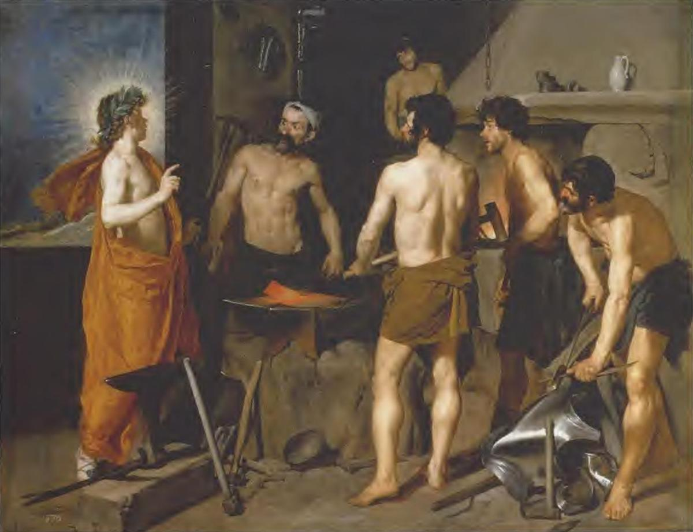
1 · Old Masters' Color
Ánh sáng để kể chuyện
- Apollo (bên trái) được bao bởi quầng sáng siêu nhiên, tách hẳn khỏi thế giới người phàm.
- Ánh sáng chiếu xiên từ trái để sculpt (điêu khắc) cơ thể các nhân vật, tạo khối rõ ràng.
- Velázquez dám để cast shadow của người này đổ lên người kia. Chi tiết nhỏ nhưng làm không gian thật hơn hẳn.
- cast shadow
- bóng đổ, bóng một vật in lên bề mặt khác
- sculpt with light
- dùng hướng sáng để tạo khối
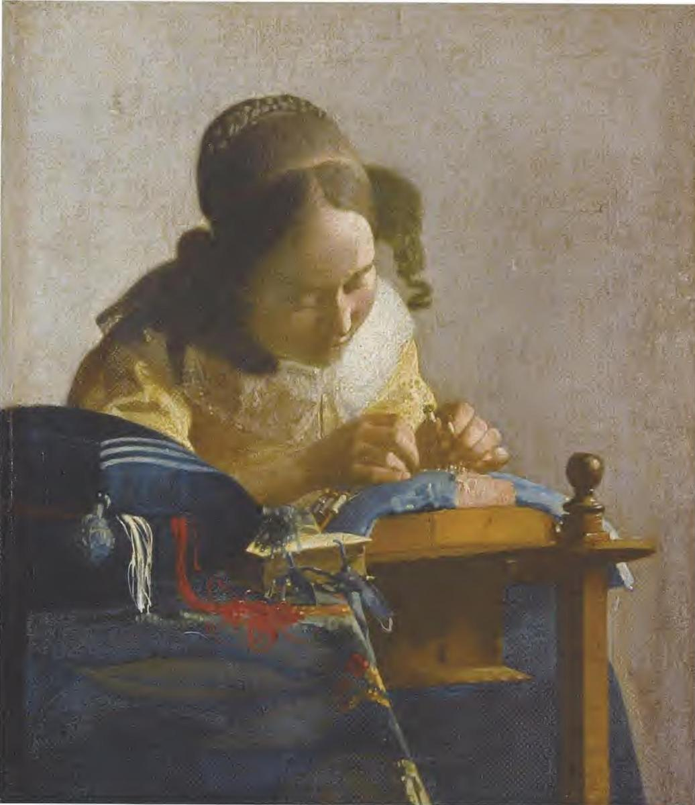
1 · Old Masters' Color
Ba màu trên nền xám
- Bức tranh nhỏ như một ô cửa nhìn vào thế giới riêng tư.
- Vùng tiền cảnh mờ nhòe, giống hiệu ứng lấy nét nông (shallow focus) Vermeer quan sát qua camera obscura.
- Vàng, đỏ, xanh lam "lấp lánh" vì đặt trên nền variegated gray: xám nhưng loang nhiều sắc độ, không phẳng.
- camera obscura
- hộp tối chiếu hình, tiền thân máy ảnh
- variegated gray
- xám loang, pha nhiều sắc
1 · Old Masters' Color
Bài tập thực hành
Limited palette 3 màu
Chọn 3 màu + trắng (gợi ý: yellow ochre, một màu đỏ, ultramarine). Vẽ một vật tĩnh đơn giản. Mục tiêu: tìm xem 3 màu pha được bao nhiêu thứ.
Master study Vermeer
Dùng eyedropper lấy màu nền xám và 3 màu chính trong The Lacemaker. So sánh độ bão hòa (saturation): nền xám thật ra có bao nhiêu màu?
Thử cast shadow
Vẽ 2 nhân vật đứng gần nhau dưới 1 nguồn sáng xiên. Cho bóng nhân vật trước đổ lên nhân vật sau.
2 · The Academic Tradition
Ba đổi mới của thế kỷ 19
Bouguereau, Gérôme và các bậc thầy academic Pháp chịu ảnh hưởng của ba thay đổi lớn:
- Science of Perception. Nhà hóa học Chevreul chứng minh màu chỉ hiểu được trong quan hệ với màu xung quanh, không màu nào tồn tại riêng lẻ. Helmholtz cho rằng ta không nhìn vật trực tiếp mà nhìn cảm giác màu trên võng mạc. Kết quả: họa sĩ tách màu khỏi bề mặt vật, quan tâm hơn đến ánh sáng chiếu, màu xung quanh và khí quyển.
- New Pigments. Prussian blue, cobalt blue, chrome yellow, cadmium. Cả họa sĩ academic lẫn impressionist đều chọn đề tài để khoe màu mới.
- Plein-Air Practice. Ống màu gập được cấp bằng sáng chế năm 1841, giúp vẽ ngoài trời thành thói quen phổ biến. Gérôme dặn học trò: khi vẽ hình thì form là chính, còn khi vẽ màu thì nhìn ấn tượng màu tổng thể trước, và ký họa từ thiên nhiên mỗi ngày.
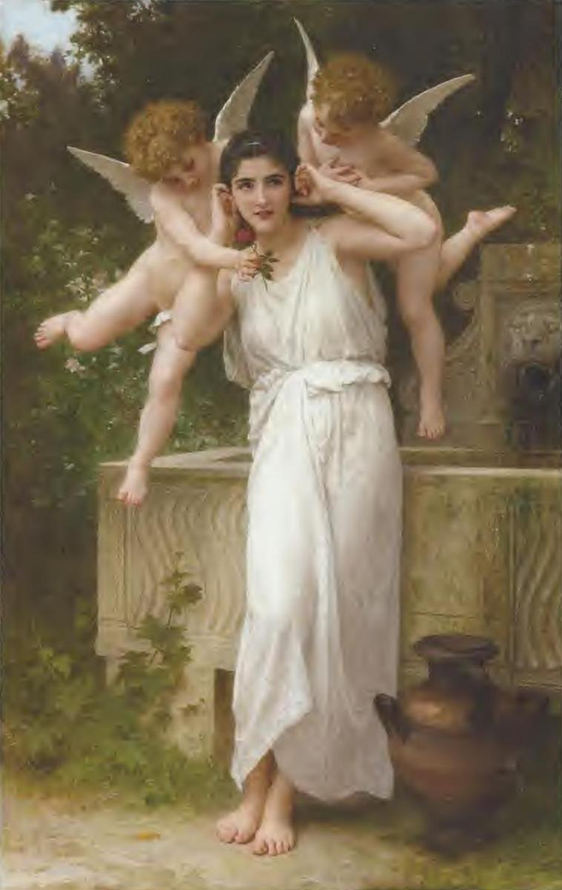
2 · The Academic Tradition
Ánh sáng mềm, màu tiết chế
- Da người sáng ấm, nổi bật trên nền cây xanh mát và tối hơn: màu được đọc qua quan hệ với nền, đúng tinh thần Chevreul.
- Váy trắng không hề trắng tinh: nó nhận màu từ môi trường xung quanh.
- form
- hình khối
- relative color
- màu tương đối, phụ thuộc màu cạnh nó
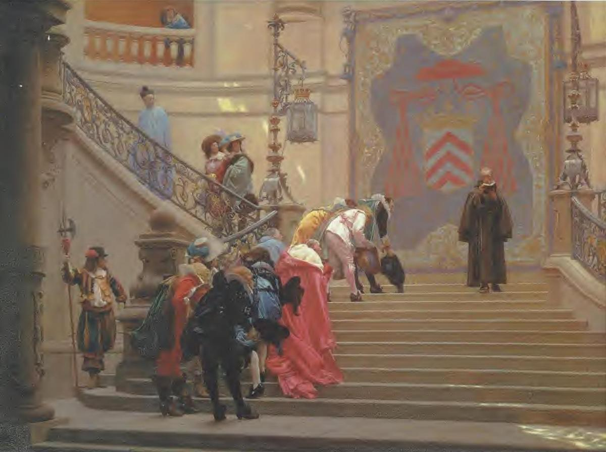
2 · The Academic Tradition
Màu dẫn mắt
- Đám đông rực rỡ cúi chào ở giữa, còn nhân vật chính (vị tu sĩ áo xám) lại là mảng màu trầm nhất. Độ tương phản màu tạo ý nghĩa.
- Ánh sáng ngoài trời phủ đều lên cầu thang, cho thấy ảnh hưởng của plein-air ngay cả trong tranh dựng cảnh.
2 · The Academic Tradition
Bài tập thực hành
Thí nghiệm Chevreul
Vẽ 2 ô xám giống hệt nhau, đặt 1 ô trên nền đỏ, 1 ô trên nền xanh lá. Quan sát ô nào trông ấm/lạnh hơn. Đây là simultaneous contrast.
General impression first
Ký họa 10 phút một cảnh thật (hoặc ảnh). Chỉ dùng mảng màu lớn, cấm chi tiết. Mục tiêu: bắt đúng không khí màu tổng thể.
Màu trắng không trắng
Vẽ một vật trắng (cốc, áo) ở 2 môi trường khác nhau. Ghi lại màu thật của vùng sáng và vùng tối.
3 · Open-Air Painting in Britain
Thời tiết làm nên họa sĩ
Thời tiết Anh thay đổi liên tục, tạo ra một truyền thống colorist quan sát rất kỹ, từ Turner, Constable đến các họa sĩ hiện thực sau này.
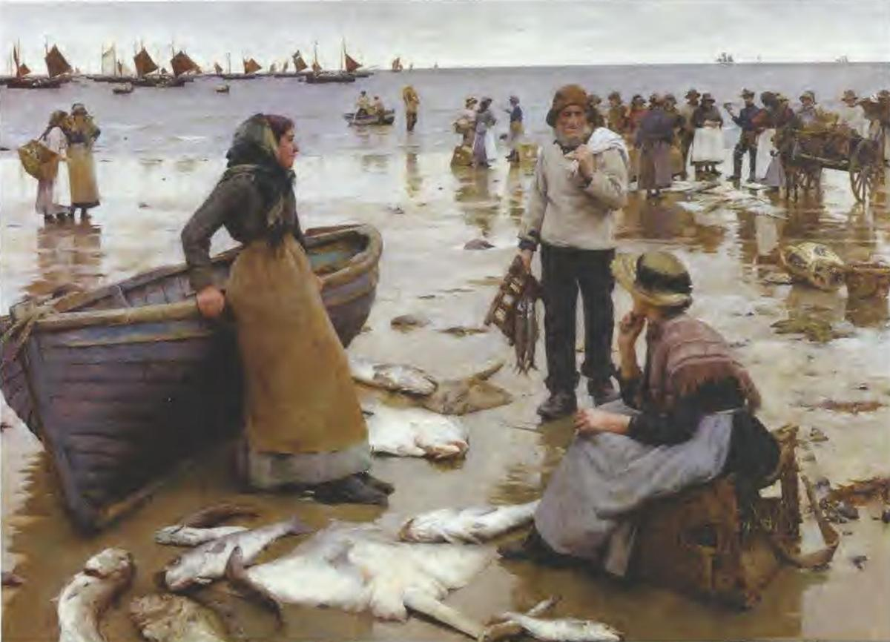
3 · Open-Air Painting in Britain
Kiên nhẫn với ánh sáng xám
- Forbes vẽ tranh này hoàn toàn ngoài trời ở làng chài Newlyn, gần một năm, chịu mưa gió, người mẫu ngất và cá thối.
- Ông chỉ vẽ khi thủy triều xuống và trời âm u. Ánh sáng xám (overcast light) cho màu mềm, đều, không bóng gắt.
- Để ý bãi cát ướt phản chiếu bầu trời và nhân vật.
- overcast light
- ánh sáng trời âm u
- freshness
- độ tươi, cảm giác vẽ tại chỗ
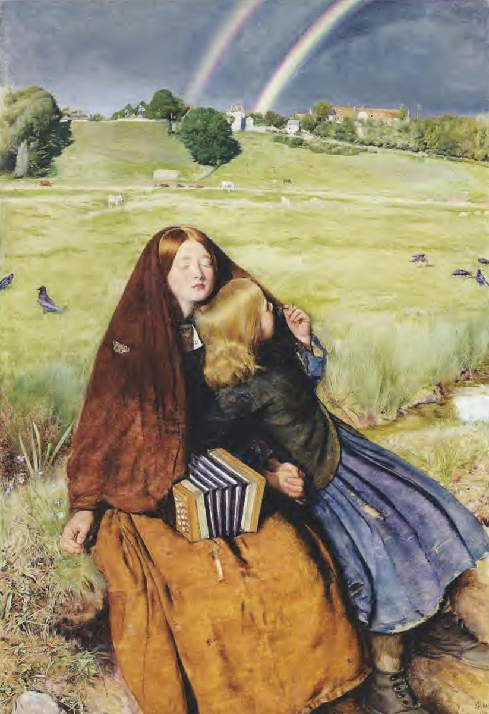
3 · Open-Air Painting in Britain
Tương phản để gây cảm xúc
- Phần nền vẽ ngoài trời ở Sussex năm 1854, nhân vật thêm vào sau.
- Quần áo cô gái mù xỉn màu, tương phản với phong cảnh rực rỡ. Cô không thấy cầu vồng đôi hay con bướm trên khăn: màu sắc kể nỗi buồn.
- Nhóm Pre-Raphaelite phủ glaze trong suốt lên lớp ground trắng còn hơi ướt, cho độ sâu màu mà có người chê lòe loẹt, có người khen trung thực.
- glaze
- lớp màu mỏng trong suốt phủ lên trên
- ground
- lớp nền lót của bề mặt vẽ
3 · Open-Air Painting in Britain
Bài tập thực hành
Một cảnh, hai thời tiết
Vẽ cùng một góc (cửa sổ, ban công) lúc nắng và lúc âm u. So sánh độ tương phản, màu bóng và độ bão hòa.
Glaze trong digital
Tô một mảng nền trắng sáng, phủ layer Multiply màu trong suốt lên trên. So với tô đặc cùng màu đó: cái nào sâu hơn?
Kể chuyện bằng tương phản màu
Vẽ 1 nhân vật màu trầm giữa bối cảnh tươi (hoặc ngược lại). Ghi 1 câu: tương phản này nói lên điều gì?
4 · The Hudson River School
Ánh sáng từ trong tranh
Tranh phong cảnh Hudson River School có cảm giác siêu thực vì ánh sáng như phát ra từ chính bức tranh.
Quy trình: ký họa kỹ ngoài trời (study), sau đó tổng hợp trong studio thành bố cục hoành tráng. Hai động lực: quan sát thiên nhiên tỉ mỉ và say mê khoảnh khắc sublime (choáng ngợp, hùng vĩ).
4 · The Hudson River School
Đưa nguồn sáng vào khung hình
- Church tổ chức các chuyến vẽ đến Newfoundland, Jamaica, Colombia để tìm hiệu ứng tự nhiên ấn tượng.
- Mặt trời nằm ngay trong tranh (backlight). Vùng quanh mặt trời sáng nhất, mọi thứ chìm dần vào hơi sương vàng.
- Pigment mới cũng góp phần: tranh hoàng hôn Twilight in the Wilderness của ông lấy cảm hứng một phần từ công thức madder lake mới.
- backlight / contre-jour
- ánh sáng ngược, nguồn sáng phía sau chủ thể
- sublime
- cảm giác hùng vĩ, choáng ngợp
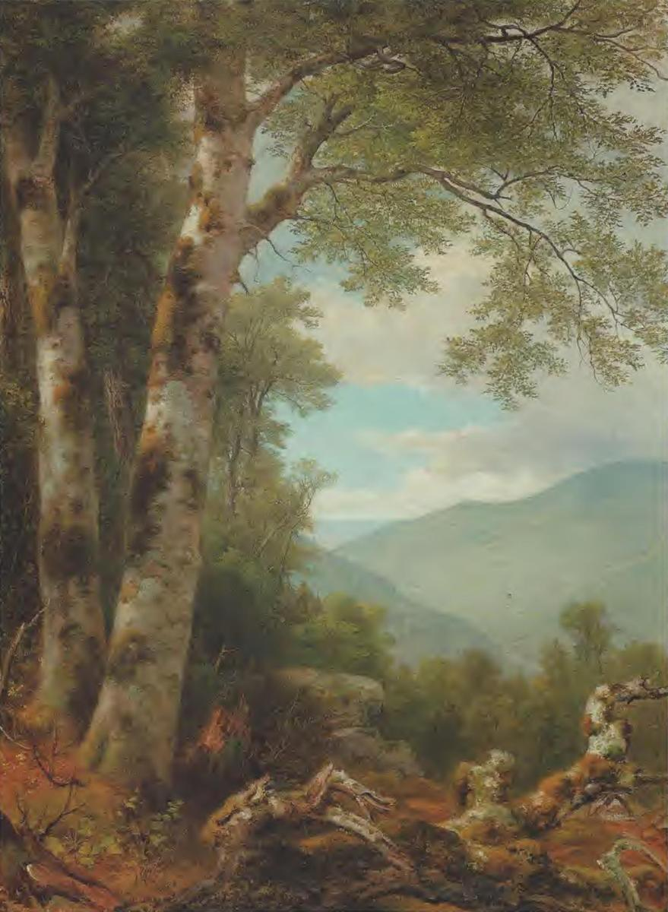
4 · The Hudson River School
Study ngoài trời
- Durand là người phát ngôn chính của trường phái. Năm 1855 ông xuất bản Letters on Landscape Painting, cùng năm vẽ study này.
- Thân cây bạch dương được quan sát rất kỹ: rêu, vỏ, ánh sáng lọt qua tán.
- Núi xa nhạt và lạnh dần, cho cảm giác chiều sâu.
- study
- bài vẽ nghiên cứu, làm để thu thập thông tin
- studio composition
- bố cục hoàn thiện trong xưởng
4 · The Hudson River School
Bài tập thực hành
3 study → 1 bố cục
Làm 3 study nhỏ (cây, bầu trời, một vật tiền cảnh) từ quan sát thật. Ghép lại thành 1 bố cục mới.
Nguồn sáng trong khung
Vẽ một cảnh có mặt trời hoặc đèn nằm trong tranh. Giữ vùng quanh nguồn sáng sáng nhất, độ tương phản giảm dần khi ra xa.
Đọc chiều sâu
Trong tranh Durand, eyedropper 3 điểm: tiền cảnh, trung cảnh, núi xa. Ghi nhận độ sáng và độ ấm/lạnh thay đổi thế nào.
5 · Plein-Air Movements
Ánh sáng ngoài trời + bố cục mạnh
Ngoài Pháp, họa sĩ ở Mỹ, Úc, Đan Mạch, Ý, Nga, Tây Ban Nha, Thụy Điển kết hợp hiểu biết về ánh sáng ngoài trời với tư duy bố cục mạnh. Mỗi nước phát triển một hướng riêng.
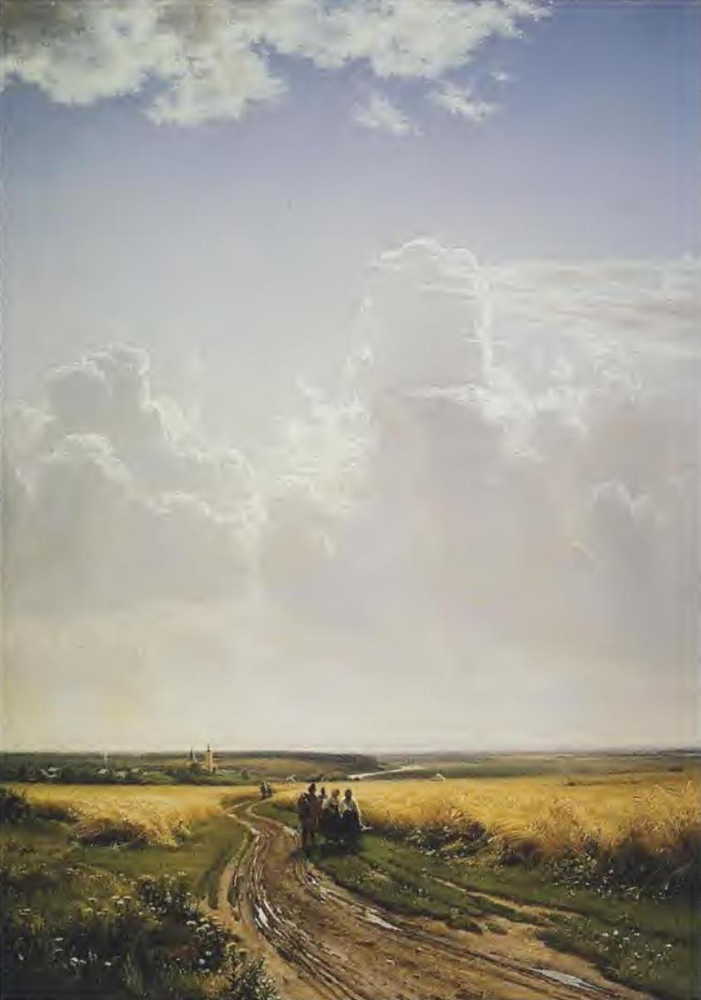
5 · Plein-Air Movements
Bầu trời làm chủ
- Shishkin vẽ vô số study ngoài trời trước khi làm tranh này.
- Bầu trời chiếm gần hết khung hình. Nhà thờ và dòng sông nhỏ bé dưới những đám mây khổng lồ.
- Tỷ lệ trời/đất là quyết định bố cục quan trọng nhất ở đây, tạo cảm giác rộng và vui tươi.
- composition
- bố cục
- sky-to-land ratio
- tỷ lệ trời và đất trong khung
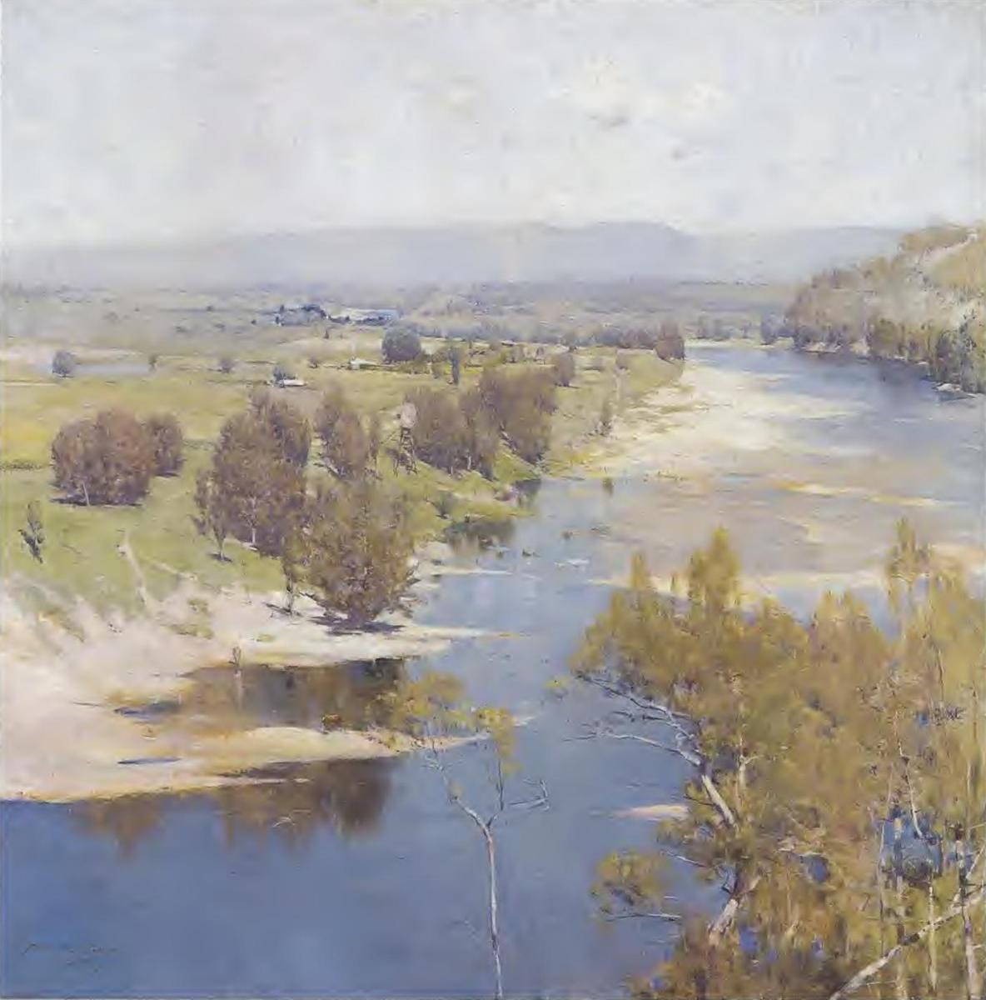
5 · Plein-Air Movements
Màu đậm nhất ở chỗ bất ngờ
- Không có than, Streeton phác bố cục bằng đỏ và cobalt blue.
- Nắng trưa (noon light) chiếu bóng cây thẳng xuống, giảm kịch tính và giảm khối, làm tranh phẳng và mang tính trang trí (decorative). Khổ vuông, rất mới thời đó, càng nhấn điều này.
- Màu xanh đậm và giàu nhất không nằm ở trời hay núi mà ở lòng sông tiền cảnh.
- noon light
- ánh sáng giữa trưa, từ trên xuống
- decorative / flat
- phẳng, tính trang trí
5 · Plein-Air Movements
Bài tập thực hành
Thử tỷ lệ trời/đất
Làm 3 thumbnail cùng 1 cảnh: trời chiếm 1/4, 1/2, 3/4 khung. Cảm xúc mỗi bản khác nhau thế nào?
Săn màu bão hòa nhất
Chọn 1 bức tranh hoặc ảnh phong cảnh. Đoán trước chỗ màu đậm nhất, sau đó kiểm tra bằng eyedropper. Đoán đúng không?
Trưa vs chiều
Vẽ cùng 1 cái cây với bóng giữa trưa (ngắn, thẳng xuống) và chiều muộn (dài, xiên). So sánh cảm giác khối.
6 · Symbolist Dreams
Màu không cần đúng thực tế
Symbolism ra đời như phản ứng chống lại chủ nghĩa hiện thực tầm thường. Mục tiêu là gợi cảm xúc: u buồn, lòng yêu nước, sự bí ẩn. Họ theo đuổi lý tưởng cái đẹp, thường đan xen với bi kịch và tuyệt vọng.
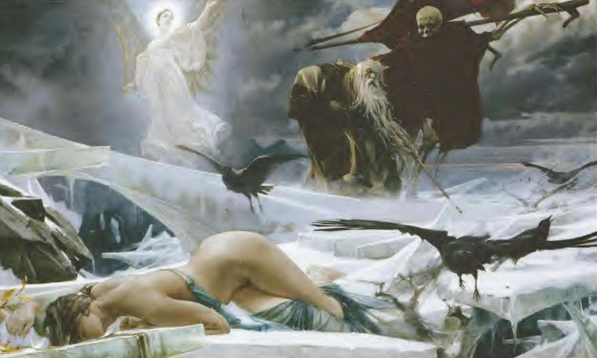
6 · Symbolist Dreams
Palette lạnh, một chút ấm
- Ahasuerus, kẻ lang thang trong truyền thuyết, là người cuối cùng còn sống giữa vùng băng giá, kẹt giữa thiên thần hy vọng và bóng ma cái chết.
- Palette giới hạn: xanh, xám, đen, trắng. Chỉ có chút ấm ở da người và vài điểm vàng kim.
- Nguồn sáng chính đến từ thiên thần ở xa, trước bầu trời giông bão.
- limited palette
- bảng màu giới hạn
- warm accent
- điểm nhấn ấm trong tổng thể lạnh
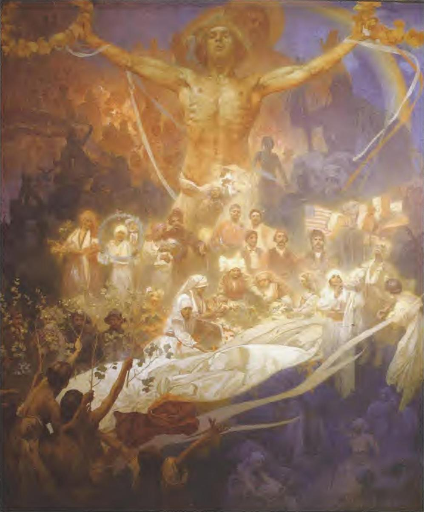
6 · Symbolist Dreams
Tổ chức sáng tối
- Cảm giác mơ màng, không trọng lượng đến từ tonal organization được kiểm soát chặt.
- Tâm tranh phát sáng, được đóng khung bởi các vùng tối hơn và lạnh hơn.
- Dải màu xoáy gợi chuyển động của lá cờ. Color scheme cực kỳ kỷ luật.
- tonal organization / value structure
- cách sắp xếp các mảng sáng tối
- focal point
- điểm nhìn chính
6 · Symbolist Dreams
Bài tập thực hành
Mood painting lạnh
Vẽ 1 cảnh chỉ bằng xanh, xám, đen, trắng. Thêm đúng 1 điểm ấm ở chỗ quan trọng nhất.
Value thumbnail kiểu Mucha
Làm thumbnail đen trắng: tâm sáng nhất, các vùng quanh tối dần ra mép. Sau đó tô màu: vùng tối thì lạnh, tâm thì ấm.
Màu biểu tượng
Chọn 1 cảm xúc (cô đơn, hy vọng...). Chọn 3 màu đại diện, không cần đúng thực tế, vẽ một tranh nhỏ.
7 · Magazine Illustration
Sáng tạo trong giới hạn in
Ngày nay màu ở khắp nơi nên khó hình dung tranh in màu trên báo, tạp chí từng gây ấn tượng mạnh thế nào. Màu vào tạp chí từ từ: ban đầu chỉ có đen trắng, sau đó thêm một màu phụ.
- Bìa Saturday Evening Post của Norman Rockwell có 10 năm chỉ dùng thang xám + đỏ.
- Tạp chí khác in minh họa bằng đen + xanh lá, hoặc đen + cam.
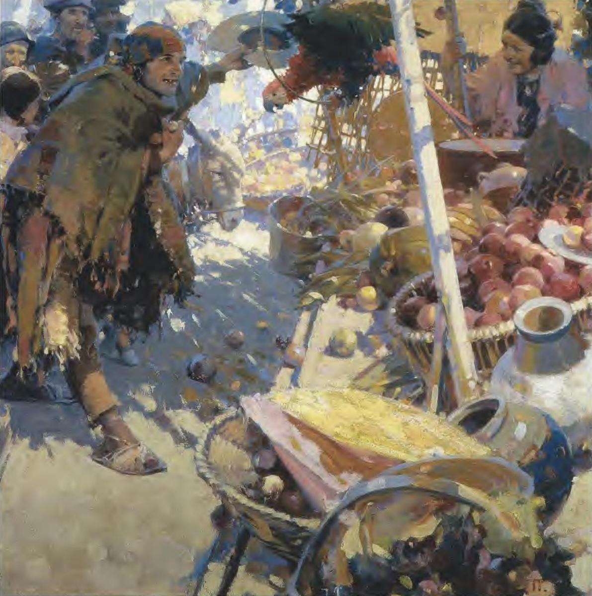
7 · Magazine Illustration
Broken color
- Everett vẽ full màu dù biết tranh sẽ in ra thang xám.
- Chịu ảnh hưởng impressionism, ông dùng broken color: đặt các nét màu tương phản cạnh nhau để mắt tự pha, tạo độ rung.
- broken color
- nét màu rời cạnh nhau, mắt tự trộn
- grayscale
- thang xám
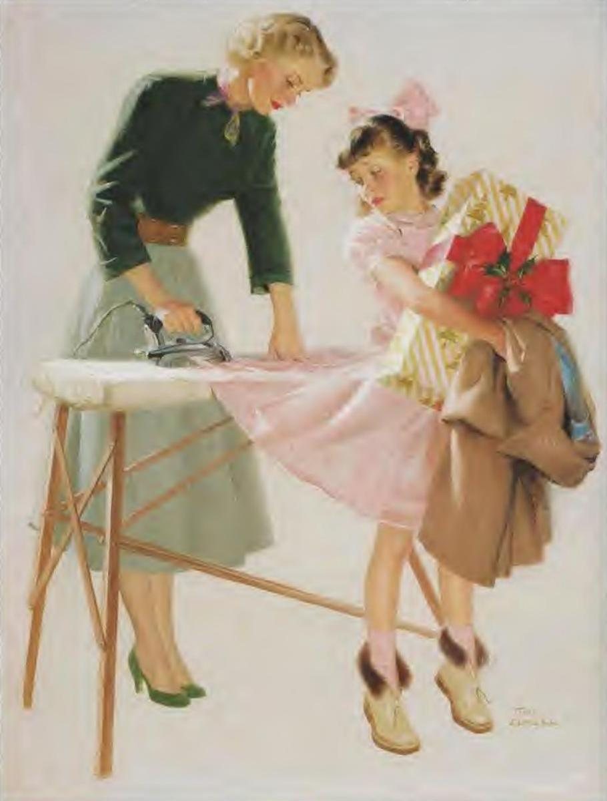
7 · Magazine Illustration
Một color scheme có chủ đích
- Dù có đủ màu, Lovell chọn scheme tương phản đỏ và xanh lá, hạ vàng, tím, lam xuống.
- Đỏ ở cường độ mạnh nhất chỉ xuất hiện ở nơ quà. Ở váy cô bé, đỏ được làm dịu thành hồng.
- Người mẹ mặc nhiều sắc xanh lá khác nhau ở giày, váy, áo. Một màu, nhiều biến thể.
- color scheme
- phối màu tổng thể
- complementary
- cặp màu bổ túc, ví dụ đỏ và xanh lá
7 · Magazine Illustration
Bài tập thực hành
Đen + 1 spot color
Vẽ 1 minh họa chỉ bằng đen và 1 màu (đỏ, cam hoặc xanh lá), kèm các tint của màu đó. Rất hợp để thử cho sticker hoặc in riso.
Scheme kiểu Lovell
Chọn 1 cặp complementary. Dùng màu A ở cường độ mạnh nhất đúng 1 chỗ, các chỗ còn lại là phiên bản dịu hơn. Màu B chia nhiều biến thể.
Test grayscale
Chuyển tranh màu của bạn sang grayscale. Nếu các mảng chính lẫn vào nhau, value structure đang yếu.
Wrap-up
Tổng kết chương 1
- Giới hạn tạo phong cách. Ít pigment, thời tiết, kỹ thuật in: mỗi giới hạn đều đẻ ra cách dùng màu riêng.
- Màu là tương đối. Không màu nào đứng một mình. Màu được đọc qua quan hệ với màu xung quanh.
- Quan sát là nguyên liệu, bố cục mới là tác phẩm. Study ngoài trời rồi tổng hợp lại có chủ đích.
- Tổ chức sáng tối trước, màu sau. Tranh màu tưởng phóng khoáng nhất vẫn dựa trên value structure chặt.
Chương sau: Sources of Light · các loại nguồn sáng và đặc điểm màu của từng loại.
Wrap-up
Glossary chương 1
- limited palette
- bảng màu giới hạn số màu
- pigment
- chất tạo màu trong sơn
- cast shadow
- bóng đổ
- variegated gray
- xám loang nhiều sắc
- simultaneous contrast
- màu thay đổi cảm nhận theo màu bên cạnh
- plein air
- vẽ ngoài trời, tại chỗ
- overcast light
- ánh sáng trời âm u
- glaze
- lớp màu mỏng trong suốt
- ground
- lớp nền lót
- study
- bài vẽ nghiên cứu
- backlight
- ánh sáng ngược
- composition
- bố cục
- decorative / flat
- phẳng, tính trang trí
- tonal organization
- tổ chức sáng tối
- focal point
- điểm nhìn chính
- broken color
- nét màu rời, mắt tự trộn
- color scheme
- phối màu tổng thể
- complementary
- cặp màu bổ túc
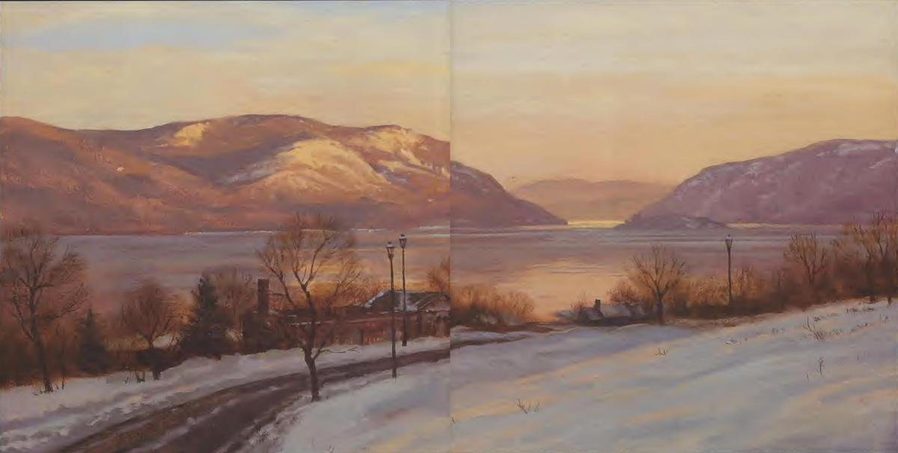
James Gurney · Color and Light
Chương 2
Sources of Light
Mỗi loại nguồn sáng có màu, độ mạnh, độ cứng mềm và kiểu bóng riêng. Nhận ra được chúng là bước đầu để vẽ ánh sáng thuyết phục.
Vuốt hoặc dùng phím ← → để chuyển slide. Chạm vào tranh để xem lớn.
Chương này để làm gì
Chương 1 là lịch sử. Từ chương 2, Gurney bắt đầu đi vào thực hành: trước khi vẽ ánh sáng, phải biết ánh sáng đến từ đâu. Với mỗi nguồn sáng, hãy tự hỏi 4 câu: màu gì, mạnh hay yếu, cứng hay mềm, giảm nhanh hay chậm theo khoảng cách.
- Direct Sunlight · nắng trực tiếp và 3 hệ chiếu sáng
- Overcast Light · trời âm u
- Window Light · ánh sáng cửa sổ
- Candlelight and Firelight · nến, lửa và fall-off
- Indoor Electric Light · đèn điện trong nhà
- Streetlights and Night Conditions · đèn đường và cảnh đêm
- Luminescence · vật tự phát sáng
- Hidden Light Sources · nguồn sáng ẩn
Cách học: đọc ghi chú → nhìn lại tranh tìm đúng điều được nói → làm bài tập cuối mỗi phần.
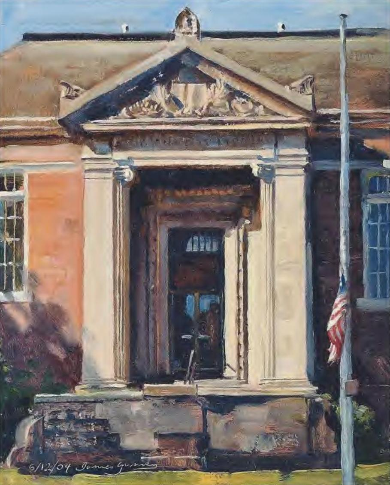
1 · Direct Sunlight
Ba hệ chiếu sáng trong ngày nắng
Một ngày nắng thật ra có 3 nguồn sáng: mặt trời, bầu trời xanh, và ánh sáng phản chiếu từ các vật đang được chiếu. Hai nguồn sau đều sinh ra từ mặt trời, nên phải luôn yếu hơn nó trong tranh.
- Skylight là ánh sáng khuếch tán, mềm, đến từ nhiều hướng.
- Trên cao hoặc không khí rất trong: trời xanh tím hơn, bóng tối hơn và xanh hơn. Nhiều mây: bóng xám đi. Nhiều haze/smog: bóng sáng gần bằng vùng nắng.
- Trong tranh: ánh ấm dội từ mặt đất vào phù điêu phía trên cửa, còn ánh xanh của trời thấy rõ nhất ở bóng đổ của mái tam giác lên dòng chữ phía trên cửa.
- skylight
- ánh sáng từ bầu trời
- subordinate
- phụ, phải yếu hơn nguồn chính
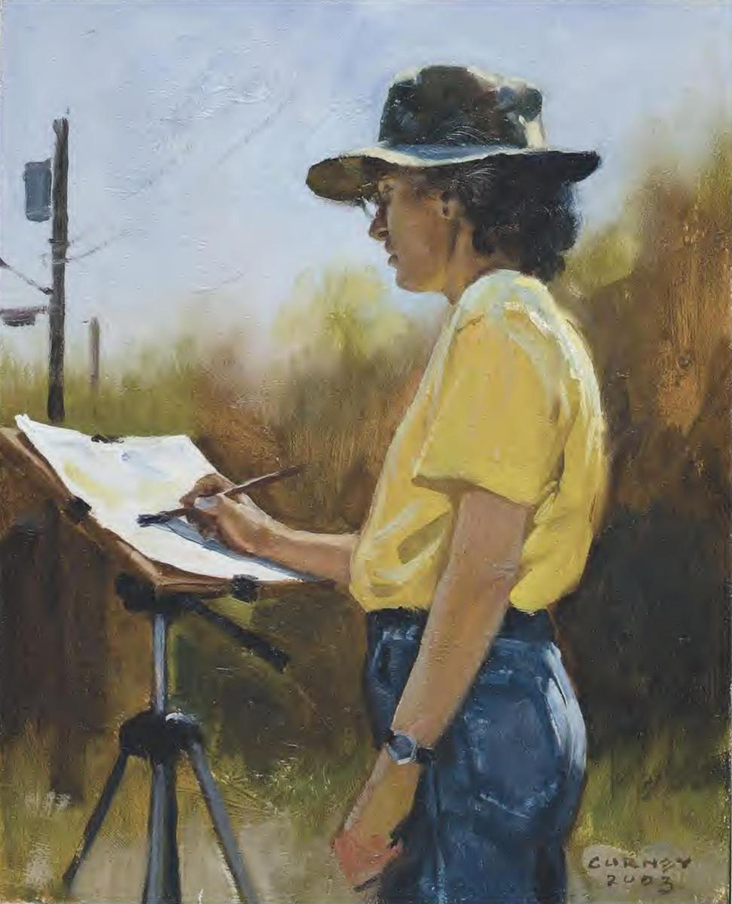
1 · Direct Sunlight
Bóng nhận màu từ đâu
- Đỉnh vai nằm trong bóng nhưng ngả xanh lục: áo vàng nhận ánh xanh của trời từ trên xuống.
- Chỗ tay áo rủ xuống, mặt vải hướng về mặt đất nên nhận màu ấm phản chiếu lên, áo vàng trông cam hơn.
- Cùng một chiếc áo, hai vùng bóng hai màu khác nhau, chỉ vì chúng hướng về hai nguồn khác nhau.
- reflected light
- ánh sáng phản chiếu từ vật khác
- local color
- màu thật của vật
1 · Direct Sunlight
Bài tập thực hành
Đếm nguồn sáng
Chọn 1 ảnh chụp ngoài trời ngày nắng. Chỉ ra 3 nguồn: chỗ nào nhận nắng, chỗ nào nhận trời xanh, chỗ nào nhận ánh phản từ mặt đất.
Vật màu trong bóng
Vẽ một vật màu vàng hoặc trắng ngoài nắng. Tô mặt bóng hướng lên hơi xanh, mặt bóng hướng xuống hơi ấm. So với bản tô bóng bằng một màu xám.
Thử độ đậm của bóng
Vẽ cùng một cảnh 3 lần: trời trong, trời có mây, trời nhiều haze. Chỉ thay đổi độ tối và màu của bóng.
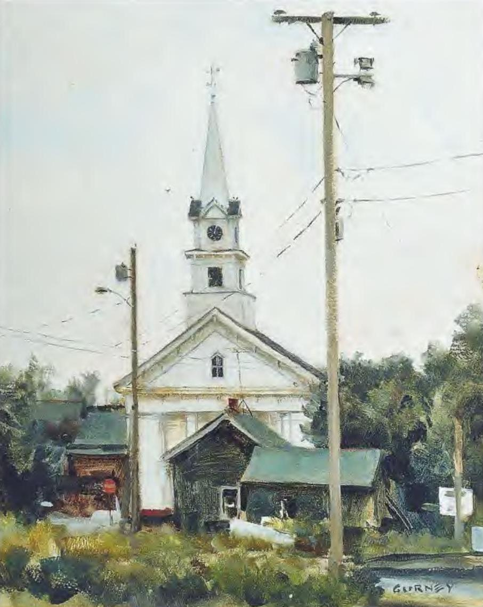
2 · Overcast Light
Ánh sáng mềm của trời âm u
Mây khuếch tán nắng, xóa đi tương phản gắt giữa sáng và tối. Nhiều họa sĩ và nhiếp ảnh gia thích loại sáng này hơn ngày nắng.
- Vẽ được hình khối với màu thật của vật, không bị tương phản sáng tối lấn át.
- Không có bóng sắc, tranh đơn giản hơn, mảng hình lớn hơn.
- Bất ngờ: màu trông tươi và thuần hơn dưới nắng. Hoa văn trang phục, biển hiệu hiện rõ.
- Bầu trời thường là nốt sáng nhất tranh. Tháp chuông trắng ở đây vẫn hơi tối hơn trời.
- Ánh sáng ổn định 4-5 tiếng, rất hợp vẽ plein air. Trong studio gần như không giả lập được: cửa sổ hướng bắc lớn chỉ gần giống vì vẫn có hướng.
- overcast light
- ánh sáng trời âm u
- diffuse
- khuếch tán, tỏa đều
2 · Overcast Light
Bài tập thực hành
Trắng không sáng nhất
Vẽ một vật trắng (nhà, cốc) trước nền trời âm u. Giữ vật tối hơn trời một chút.
Local color study
Vẽ một nhóm đồ có màu và hoa văn rõ trong ánh sáng âm u. Tập trung vào đúng màu, không quan tâm bóng.
So sánh độ bão hòa
Chụp cùng một vật màu ngày nắng và ngày âm u. Dùng eyedropper so màu vùng sáng: ngày nào bão hòa hơn?
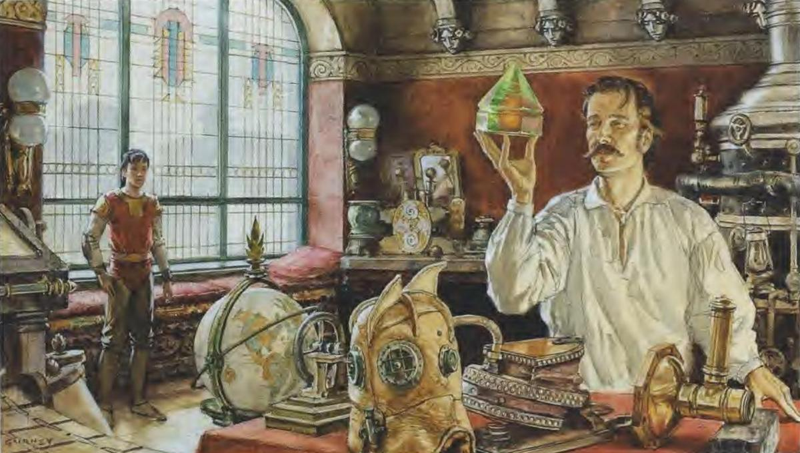
3 · Window Light
Lạnh ngoài cửa, ấm trong phòng
Ánh sáng cửa sổ được ưa chuộng vì ổn định và giúp đơn giản hóa cảnh.
- Nếu nắng không chiếu thẳng qua cửa, ánh sáng vào phòng thường ám xanh, đối lập với đèn trong phòng màu cam.
- Ngày nắng có thêm nguồn thứ hai: ánh nắng trên mặt đất dội ngược lên qua cửa, rõ nhất trên trần trắng, ngả lục hoặc cam tùy mặt đất là cỏ hay đất.
- Phòng có cửa sổ hướng bắc: sàn ám xanh từ trời, trần ám lục hoặc cam từ mặt đất ngoài kia.
- Trong tranh: cửa sổ lớn bên trái cho ánh lạnh, đèn ấm ngoài khung bên phải tạo màu tương phản.
- color temperature
- độ ấm/lạnh của ánh sáng
- bounce light
- ánh sáng dội ngược
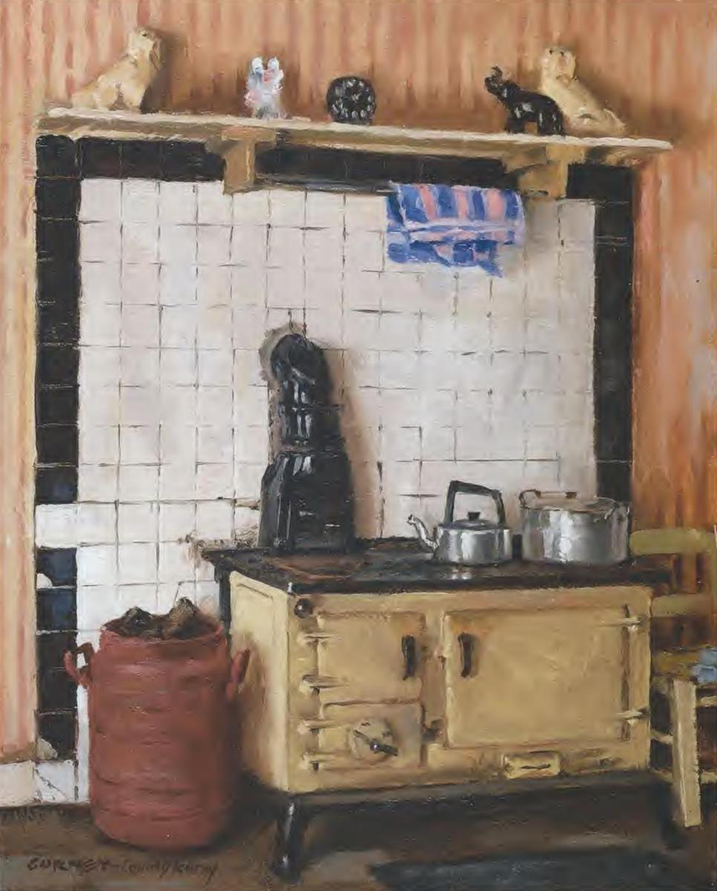
3 · Window Light
Hai nguồn cạnh nhau
- Ánh sáng lạnh vào từ một cửa ra vào mở và một cửa sổ kề bên.
- Dấu hiệu của 2 nguồn đặt cạnh nhau: hai vệt highlight dọc song song trên ấm nước, bình nước và ống khói.
- Chỗ sáng nhất là bên trái, nơi chủ nhà từng thay một viên gạch đen bằng gạch trắng.
- Bóng đổ ấm và mềm ở bên phải ống khói đen, tượng chó sứ và xô than bùn.
- highlight
- điểm sáng nhất phản chiếu nguồn sáng
- soft shadow
- bóng mép mềm
3 · Window Light
Bài tập thực hành
Cửa sổ vs đèn
Vẽ hoặc chụp một góc phòng có cả ánh cửa sổ ban ngày và đèn vàng. Tô hai vùng sáng với hai nhiệt độ màu khác nhau.
Săn double highlight
Đặt một vật bóng (cốc sứ, ấm inox) gần 2 nguồn sáng cạnh nhau. Quan sát và vẽ lại 2 vệt highlight.
Trần nhà ngày nắng
Quan sát trần nhà gần cửa sổ vào ngày nắng. Ghi lại nó ám màu gì và vì sao.
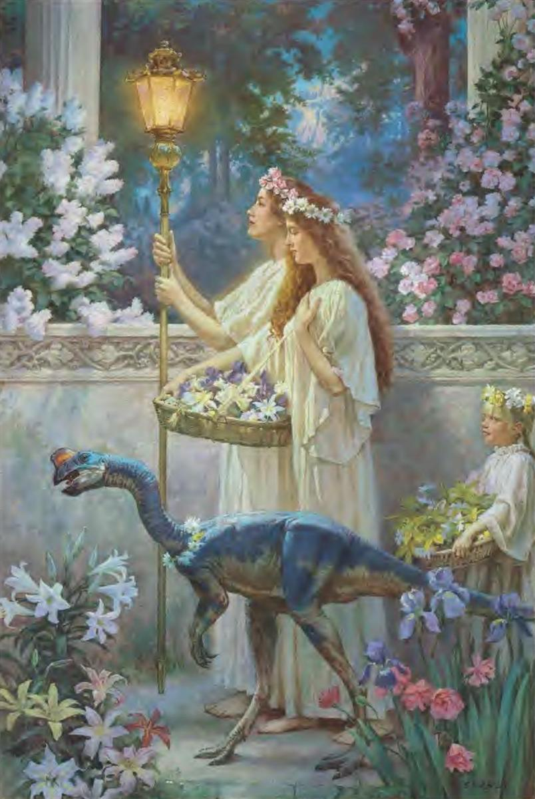
4 · Candlelight and Firelight
Quầng sáng ấm lúc chạng vạng
Nến, đèn lồng, lửa đều có màu vàng cam, khá yếu và tối đi rất nhanh khi vật ra xa ngọn lửa. Hiệu ứng rõ nhất sau hoàng hôn.
- Thời chưa có điện, đèn được thắp lúc chạng vạng khi vẫn còn đủ sáng để tìm diêm. Trong tranh, đèn lồng sáng lên đúng lúc ánh nắng cuối cùng tắt trên núi xa.
- Quầng cam quanh đèn làm không còn thấy chi tiết tán cây phía xa.
- Ánh sáng đổ xuống váy trắng, hoa tử đinh hương, hoa hồng và bức tường.
- halo
- quầng sáng quanh nguồn
- twilight
- chạng vạng
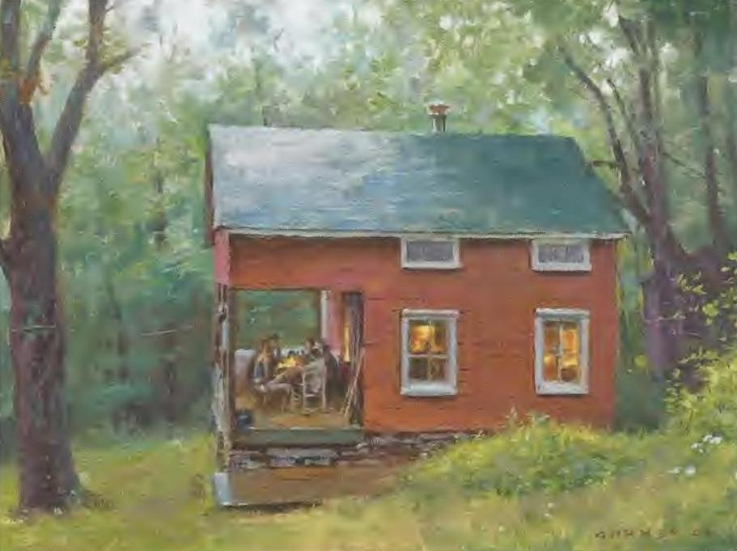
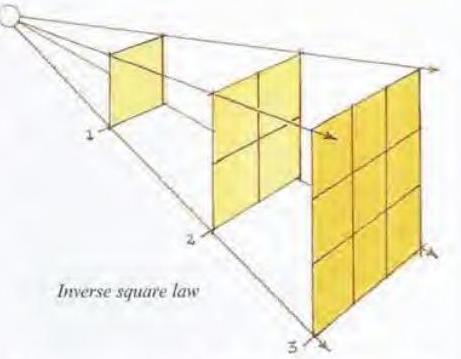
4 · Candlelight and Firelight
Fall-off và inverse square law
- Cabin vẽ từ quan sát trong một chiều mưa: đèn dầu soi bàn cờ ngoài hiên.
- Khói và hơi nước tán xạ ánh lửa, nên quanh nguồn sáng không có vùng tối sâu. Ảnh chụp đêm hay bỏ qua điều này nên vùng tối đen kịt, còn mắt người thấy cảnh như phát sáng với nhiều cạnh mềm.
- Fall-off: độ sáng của nguồn điểm giảm nhanh theo khoảng cách, theo inverse square law. Xa gấp đôi thì chỉ còn 1/4 độ sáng, xa gấp ba còn 1/9, vì cùng lượng tia sáng phải phủ diện tích lớn gấp 4, gấp 9.
- fall-off
- độ sáng giảm theo khoảng cách
- inverse square law
- định luật nghịch đảo bình phương
4 · Candlelight and Firelight
Bài tập thực hành
Ba khoảng cách
Đặt 3 vật giống nhau cách một ngọn nến 1x, 2x, 3x. Vẽ lại, chú ý vật thứ hai tối hơn rất nhiều chứ không phải chỉ tối hơn một chút.
Ảnh vs mắt
Chụp một cảnh có nến hoặc đèn vàng ban đêm, rồi vẽ lại theo những gì mắt thấy: mở bớt vùng tối, thêm glow và cạnh mềm.
Cảnh chạng vạng
Vẽ một cảnh có đèn vừa thắp và trời còn chút ánh xanh. Giữ hai nhiệt độ màu đối lập.
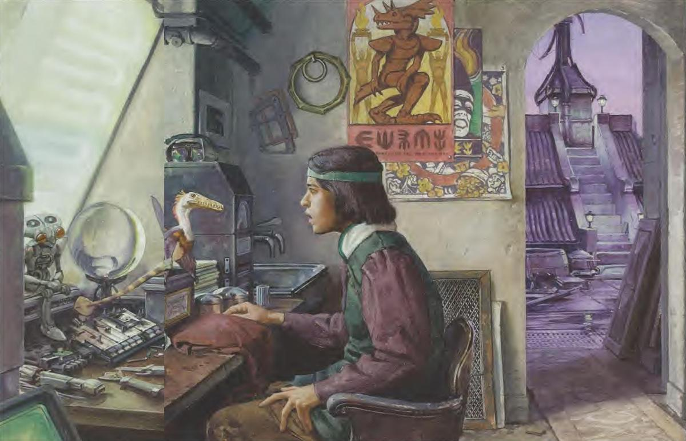
5 · Indoor Electric Light
Ba tính chất của nguồn sáng
Khi vẽ đèn điện, nhớ 3 tính chất:
- Brightness: đo bằng lumens, nhưng với họa sĩ, quan trọng là độ sáng tương đối trong cảnh, phụ thuộc công suất, loại đèn, khoảng cách và các đèn khác.
- Hard / soft: phụ thuộc kích thước nguồn khi nhìn từ chủ thể. Hard light từ nguồn nhỏ, sắc như mặt trời hay spotlight: bóng sắc, lộ texture và highlight, kịch tính. Soft light từ nguồn rộng như dàn đèn huỳnh quang trên bàn làm việc: chuyển sáng tối từ từ, đỡ rối bóng, dễ chịu hơn. Đây là lý do có chụp đèn và tấm tản sáng.
- Color cast: màu chủ đạo của nguồn, đo bằng độ Kelvin. Trong tranh, đèn ám vàng lục, nên cảnh bên ngoài trông tím vì tương phản.
- hard / soft light
- ánh sáng cứng / mềm
- color cast
- sắc ám của nguồn sáng
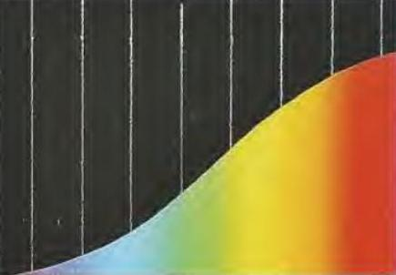
5 · Indoor Electric Light
Phổ năng lượng của đèn
- Biểu đồ spectral power distribution cho thấy nguồn sáng mạnh ở bước sóng nào.
- Đèn sợi đốt (incandescent) mạnh ở cam và đỏ, yếu ở xanh lam. Vì vậy dưới đèn vàng thường, đỏ trông rất đẹp còn xanh lam trông "chết".
- Đèn huỳnh quang (fluorescent) có phổ nhọn ở vài vạch, tập trung vùng mắt người nhạy nhất, nên thường ám vàng lục.
- spectral power distribution
- phân bố năng lượng theo bước sóng
- Kelvin
- đơn vị đo nhiệt độ màu
5 · Indoor Electric Light
Bài tập thực hành
Một vật, hai bóng đèn
Vẽ cùng một vật màu xanh lam và một vật màu đỏ dưới đèn vàng và đèn trắng/huỳnh quang. Màu nào thay đổi nhiều hơn?
Tự làm soft light
Chiếu đèn pin vào một vật, rồi che đèn bằng giấy can hoặc khăn mỏng. Vẽ 2 bản và so mép bóng.
Đọc sắc ám
Mở một bức tranh hoặc ảnh nội thất. Đoán nguồn sáng là loại gì chỉ từ màu tổng thể.
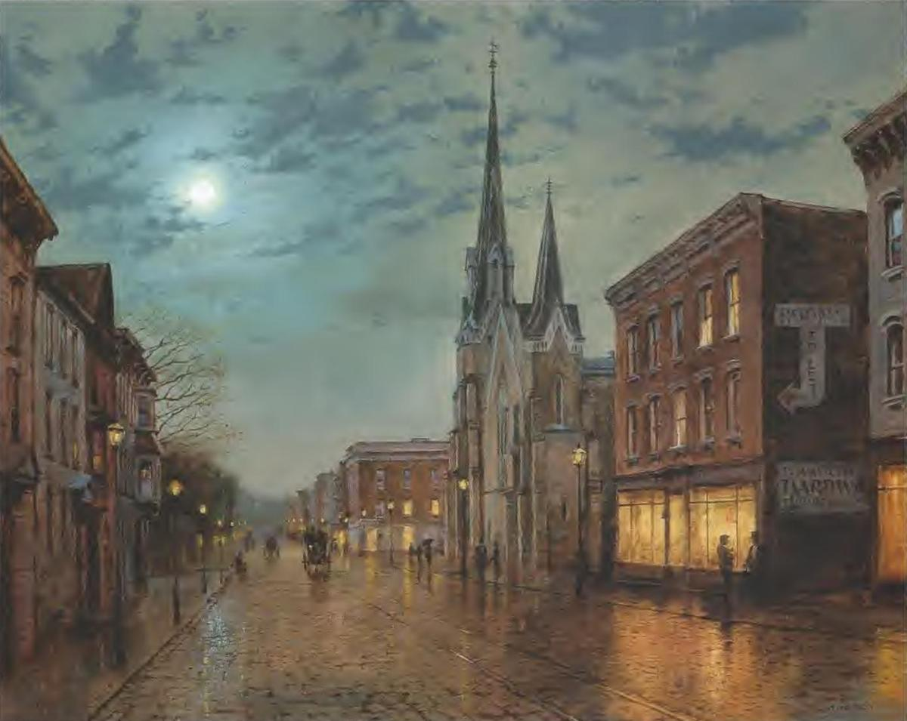
6 · Streetlights and Night
Trăng xanh, đèn ấm
Trước khi có điện chiếu sáng ngoài trời cuối thế kỷ 19, đêm chỉ có 2 màu ánh sáng: trăng (xanh hoặc xám) và lửa (cam). Đèn điện mang thêm nhiều màu mới vào cảnh đêm.
- Tranh đặt ánh trăng xanh lục đối lập với ánh ấm của cửa hàng và đèn đường.
- Mục tiêu là vẽ cái mắt thấy, không phải cái máy ảnh thấy (máy ảnh cho rất nhiều bóng đen kịt).
- Cả trăng và đèn khí lấp lánh trên đường đá ướt. Đèn khí khá yếu so với đèn điện hiện đại.
- moonlight
- ánh trăng
- gaslight
- đèn khí đốt
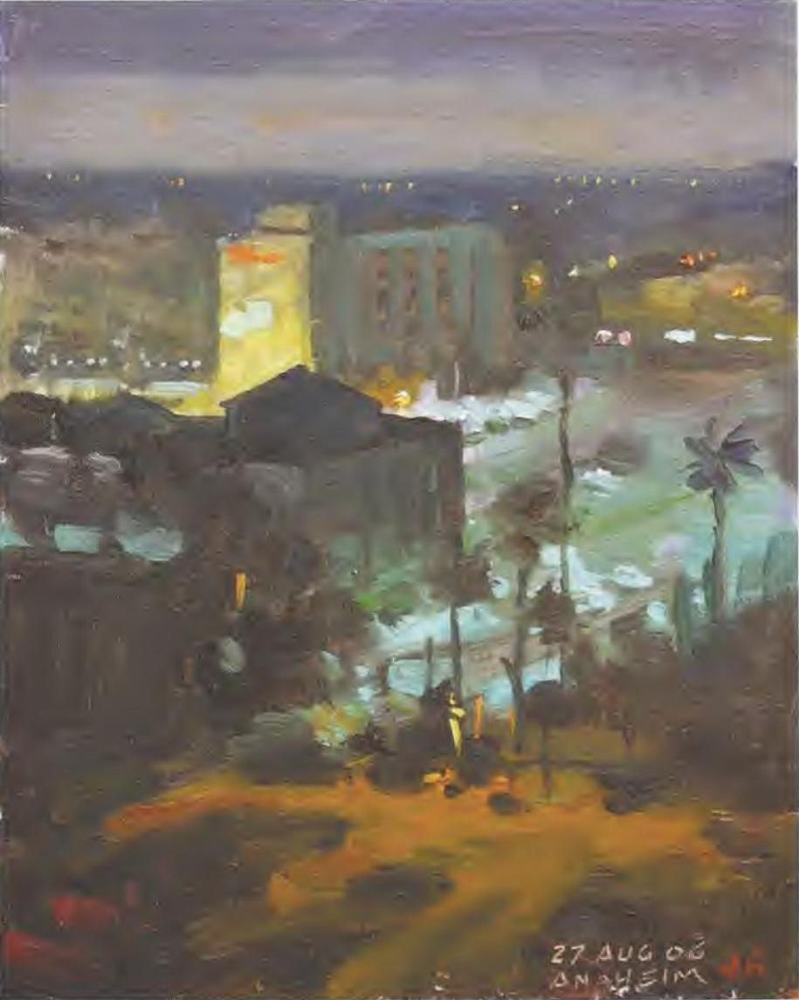
6 · Streetlights and Night
Đèn đường hiện đại
- Cảnh đêm hiện đại có đèn sợi đốt, huỳnh quang, neon, mercury vapor, sodium, đèn hồ quang, metal halide, LED. Mỗi loại có phổ màu riêng. Nhìn rõ nhất khi bay qua thành phố ban đêm.
- Ký họa từ ban công khách sạn lúc gần sáng: đèn sodium cam ở tiền cảnh tương phản với đèn mercury xanh lục ở bãi đỗ xa.
- Sodium phát dải bước sóng rất hẹp nên trông "bệnh". Mercury có phổ rộng hơn nhưng làm da người mất hết sắc ấm.
- sodium vapor
- đèn natri, ánh cam
- mercury vapor
- đèn thủy ngân, ánh xanh lục
6 · Streetlights and Night
Bài tập thực hành
Chụp đêm
Chụp cảnh đường phố bằng chế độ chụp đêm của điện thoại. Đếm có bao nhiêu màu đèn khác nhau.
Bánh xe màu dưới đèn đường
Tắt white balance tự động (hoặc dùng chế độ Pro), chụp một bảng màu dưới vài loại đèn đường. Đặt cạnh nhau xem màu bị lệch thế nào.
Vẽ đêm
Vẽ một cảnh đêm từ ảnh tham khảo, giữ ít nhất 2 nguồn khác màu. Gurney gợi ý thêm: dùng đèn LED nhỏ soi palette khi vẽ ngoài trời đêm, và lập thư mục ảnh thành phố về đêm.
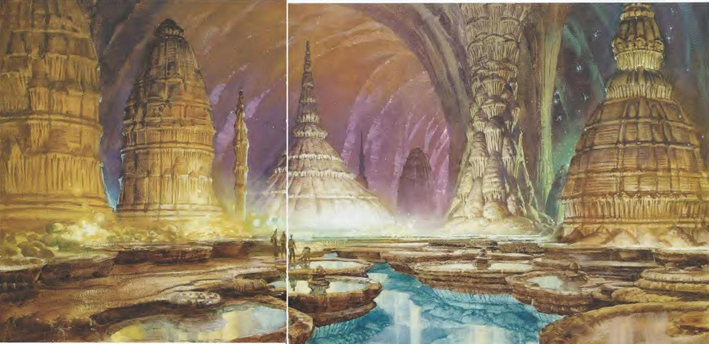
7 · Luminescence
Phát sáng không cần nóng
Vật nóng hoặc cháy phát sáng gọi là incandescence. Còn phát sáng ở nhiệt độ thấp gọi là luminescence, có ở cả vật sống lẫn vật vô tri.
- Bioluminescence: phần lớn ở sinh vật biển (cá, mực, sứa, vi khuẩn, tảo) để dụ mồi, đánh lừa kẻ thù hoặc tìm bạn. Trên cạn có đom đóm, cuốn chiếu, rết, và nấm mọc trên gỗ mục phát ánh mờ gọi là foxfire.
- Fluorescence: vật chuyển năng lượng không nhìn thấy (như tia UV) thành ánh sáng thấy được. Một số khoáng như hổ phách, calcite phát màu dưới đèn UV.
- incandescence
- phát sáng do nóng
- luminescence
- phát quang ở nhiệt độ thấp
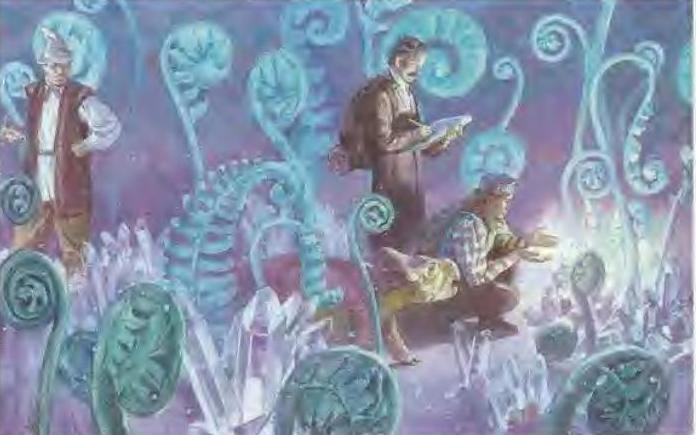
7 · Luminescence
Ba mẹo vẽ phát quang
- Màu phát quang thường chuyển dần từ hue này sang hue khác, không đứng yên ở một màu.
- Dưới nước, xanh lam-lục phổ biến nhất vì bước sóng đó đi xa nhất trong nước.
- Vẽ cả cảnh bằng tông tối trước, không có phát quang. Thêm hiệu ứng glow ở bước cuối.
- bioluminescence
- phát quang sinh học
- fluorescence
- huỳnh quang
7 · Luminescence
Bài tập thực hành
Sinh vật phát sáng
Vẽ một con vật/cây tưởng tượng tự phát sáng. Làm đúng thứ tự: cảnh tối trước, glow sau.
Gradient 2 hue
Tô một vùng phát sáng chuyển từ xanh lục sang lam (hoặc vàng sang cam). So với bản chỉ dùng một màu.
Ánh sáng lên môi trường
Thêm phản chiếu của nguồn phát quang lên mặt đất hoặc mặt nước quanh nó.
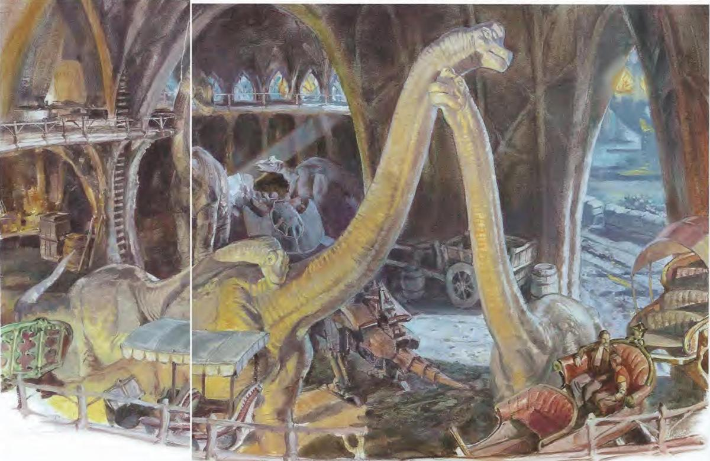
8 · Hidden Light Sources
Nguồn sáng giấu đi tạo bí ẩn
Có ít nhất 3 cách chiếu sáng một cảnh: nguồn nằm ngoài tranh, nguồn nằm trong tranh và thấy được, hoặc nguồn nằm trong cảnh nhưng bị che. Cách thứ ba tạo bí ẩn vì người xem muốn đi tìm ánh sáng từ đâu ra.
- Không gian lớn có khủng long cổ dài ngủ cạnh xe ngựa, chiếu bởi 2 nguồn.
- Ánh trăng xanh nhạt từ cửa bên phải, tràn sáng quanh cửa và rọi thành chùm qua bụi.
- Nguồn thứ hai ấm hơn nhiều, nằm khuất dưới ban công bên trái, chiếu ra và chiếu lên.
- Tương phản lạnh chiếu xuống + ấm chiếu lên làm cảnh thú vị hơn hẳn một nguồn.
- hidden light source
- nguồn sáng bị che
- light shaft
- chùm sáng thấy được qua bụi/khói
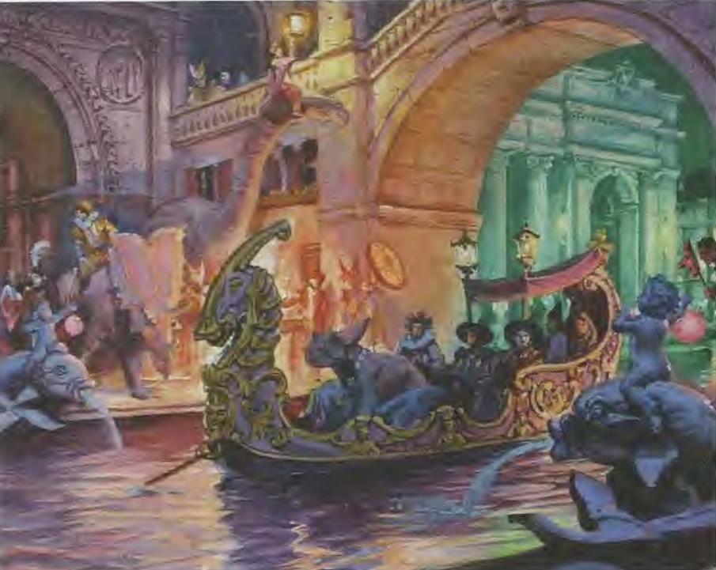
8 · Hidden Light Sources
Bốn nguồn màu
- Ít nhất 4 nguồn có màu: xanh lam ở tiền cảnh phải, đỏ cam bên kia kênh, xanh lục qua mái vòm, và ánh ấm chạm đuôi thuyền.
- Nguồn đỏ cam giấu sau mũi thuyền. Nó làm silhouette con thuyền kịch tính hơn và khiến người xem tò mò về nhóm người ở bờ xa, được vẽ chủ yếu bằng đỏ và cam.
- silhouette
- hình bóng tối trên nền sáng
- rim of color
- viền màu từ nguồn phía sau
8 · Hidden Light Sources
Bài tập thực hành
Giấu một nguồn
Vẽ một cảnh có nguồn sáng bị che (sau cột, sau người, dưới bàn). Người xem phải đoán được nó ở đâu từ ánh sáng hắt ra.
Lạnh xuống, ấm lên
Chiếu một cảnh bằng 2 nguồn: lạnh từ trên, ấm từ dưới. So với bản chỉ có 1 nguồn.
Phân tích nguồn
Chọn 1 frame phim hoặc tranh concept art. Liệt kê tất cả nguồn sáng, màu của từng nguồn, và nguồn nào bị giấu.
Wrap-up
Tổng kết chương 2
- Mỗi nguồn sáng có tính cách riêng: màu, độ mạnh, cứng/mềm, tốc độ fall-off.
- Nguồn phụ phải phục tùng nguồn chính. Ngày nắng, trời xanh và ánh phản chiếu không được mạnh ngang mặt trời.
- Bóng nhận màu từ thứ nó "nhìn" thấy. Hướng lên trời thì lạnh, hướng xuống đất thì ấm.
- Vẽ cái mắt thấy, không phải cái máy ảnh thấy. Nhất là cảnh đêm và cảnh lửa.
- Hai nguồn tương phản thú vị hơn một nguồn, và nguồn giấu đi tạo bí ẩn.
Chương sau: Light and Form · ánh sáng tạo khối như thế nào.
Wrap-up
Glossary chương 2
- skylight
- ánh sáng từ bầu trời
- reflected light
- ánh sáng phản chiếu
- overcast light
- ánh sáng trời âm u
- diffuse
- khuếch tán
- bounce light
- ánh sáng dội ngược
- color temperature
- nhiệt độ màu
- halo
- quầng sáng
- fall-off
- độ sáng giảm theo khoảng cách
- inverse square law
- định luật nghịch đảo bình phương
- brightness
- độ sáng
- hard light
- ánh sáng cứng, bóng sắc
- soft light
- ánh sáng mềm, bóng mờ
- color cast
- sắc ám
- Kelvin
- đơn vị nhiệt độ màu
- spectral power distribution
- phổ năng lượng theo bước sóng
- incandescence
- phát sáng do nóng
- luminescence
- phát quang lạnh
- bioluminescence
- phát quang sinh học
- fluorescence
- huỳnh quang
- hidden light source
- nguồn sáng ẩn
- silhouette
- hình bóng
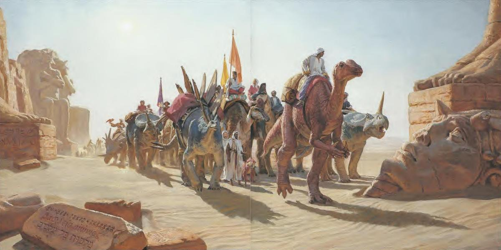
James Gurney · Color and Light
Chương 3
Light and Form
Ánh sáng chiếu lên khối tạo ra một chuỗi tone có quy luật. Nắm được quy luật đó là chìa khóa để vẽ vật trông đặc và thật.
Vuốt hoặc dùng phím ← → để chuyển slide. Chạm vào tranh để xem lớn.
Chương này để làm gì
Đây là chương nền tảng nhất về sáng tối. Gurney bắt đầu bằng form principle, sau đó đi qua từng kiểu bố trí ánh sáng mà họa sĩ hay dùng, và kết thúc bằng giới hạn của nguyên lý này.
- The Form Principle · chuỗi tone trên khối
- Separation of Light and Shadow · khoảng cách sáng tối
- Cast Shadows · bóng đổ
- Half Shadow · nửa sáng nửa tối
- Occlusion Shadows · bóng ở điểm tiếp xúc
- Three-Quarter Lighting · sáng chéo 45 độ
- Frontal Lighting · sáng trực diện
- Edge Lighting · viền sáng
- Contre Jour · ngược sáng
- Light from Below · sáng từ dưới
- Reflected Light · ánh sáng phản chiếu
- Spotlighting · đèn rọi
- Limitations of the Form Principle · khi nguyên lý không đủ
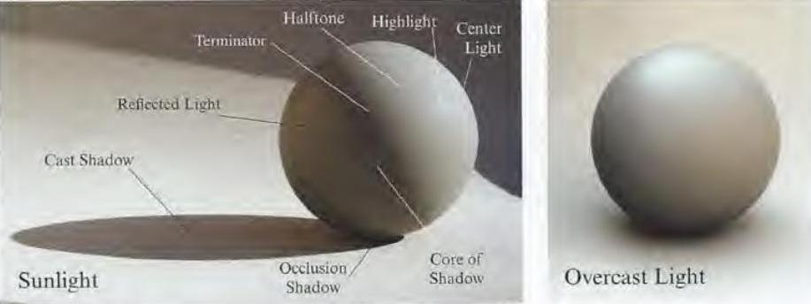
1 · The Form Principle
Bản đồ tone trên quả cầu
Form principle: nhìn thiên nhiên như các khối hình học, vẽ theo quy luật tương phản tone.
- Dưới nắng, sáng và tối chia rõ. Phía sáng gồm: highlight, center light, các halftone sáng và tối.
- Terminator: đường chuyển từ sáng sang tối, nơi tia sáng tiếp tuyến với bề mặt. Nguồn mềm thì chuyển từ từ.
- Core of the shadow: dải tối ngay sau terminator. Chỉ hiện rõ khi nguồn phụ không lấn vào. Giữ được core thì khối mạnh hơn.
- Bên trong bóng không phải màu tối, mà là ánh của các nguồn yếu hơn: trời xanh, reflected light từ mặt đất.
- Tối nhất là điểm tiếp xúc: occlusion shadow. Cast shadow chỉ xuất hiện về phía đối diện nguồn sáng.
- terminator
- đường ranh sáng tối
- halftone
- vùng chuyển trung gian
- core shadow
- dải tối nhất trong bóng khối
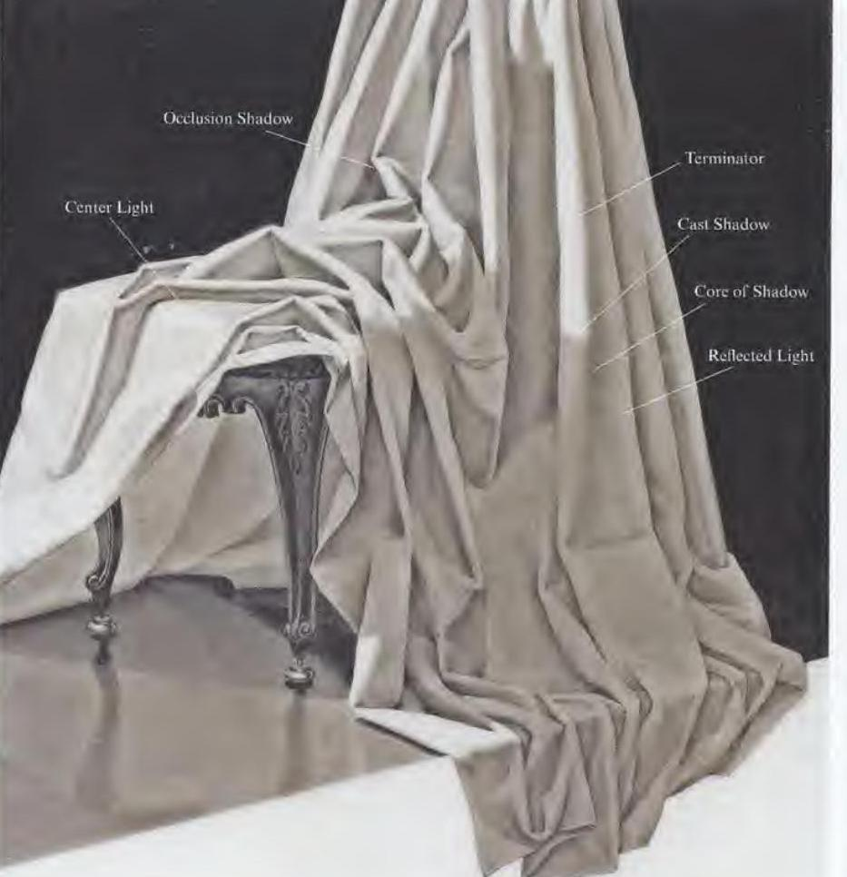
1 · The Form Principle
Nhận diện trên vật thật
- Bản vẽ tấm vải có ghi rõ tên từng vùng: center light, terminator, core of shadow, reflected light, cast shadow, occlusion shadow.
- Nguồn chính từ trái, các nguồn phụ khuếch tán lấp bóng từ phải.
- Vải trắng nhưng đi hết thang tone, đến tận đen ở nếp gấp sâu nhất.
Mẹo của Gurney: dựng mẫu hoặc maquette, để nguồn chính và nguồn phụ cách xa nhau đủ để thấy core bắt đầu hiện ra. Muốn kiểm tra vùng nào sáng vùng nào bóng, đặt cây bút chì lên vật: bóng đổ của bút chỉ hiện ở phía sáng.
- center light
- vùng nhận sáng thẳng nhất
- form shadow
- bóng thuộc về khối, khác bóng đổ
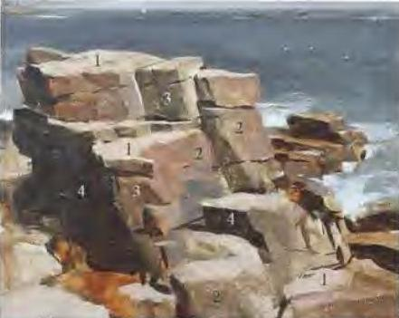
1 · The Form Principle
Gom mặt phẳng và texture
Grouping planes: với vật phức tạp như vách đá, gom các mặt gần song song thành nhóm. Ở đây đá gãy thành 4 nhóm:
- Mặt trên (sáng nhất)
- Mặt bên, halftone sáng
- Mặt trước, halftone tối
- Mặt bên trong bóng
Dù chi tiết phức tạp đến đâu, hãy nói sự thật đơn giản nhất trước: sáng và tối. Tranh đọc được ngay và tiết kiệm thời gian.
Texture ở terminator: lỗi hay gặp là vẽ texture đều khắp khối. Thực tế texture rõ nhất ở vùng halftone tối ngay trước terminator (half-light, ánh sáng sượt), và gần như biến mất trong bóng.
- grouping planes
- gom các mặt phẳng theo hướng
- raking light
- ánh sáng sượt bề mặt
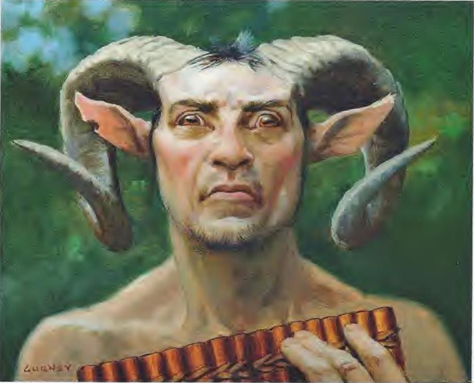
1 · The Form Principle
Ánh sáng khuếch tán
- Dưới ánh sáng mềm như trời âm u, không có phía sáng, phía bóng, terminator hay core rõ ràng.
- Thay vào đó, mặt nào hướng lên nhận nhiều ánh sáng từ trần mây hơn thì sáng hơn.
- Ở tượng thần satyr: trán, sống mũi, gò má hướng về phía trời sáng nên lạnh hơn các mặt khác.
- diffuse light
- ánh sáng khuếch tán
- upfacing planes
- các mặt hướng lên
1 · The Form Principle
Bài tập thực hành
Quả cầu dưới 2 kiểu sáng
Vẽ một quả cầu (hoặc quả cam) dưới đèn bàn và dưới ánh sáng âm u. Ghi tên từng vùng tone trên bản đèn bàn.
Gom 4 nhóm mặt phẳng
Chọn ảnh một vách đá hoặc tòa nhà. Vẽ lại chỉ bằng 4 tone, mỗi tone cho một nhóm mặt phẳng.
Texture đúng chỗ
Vẽ một khối có texture (vỏ cây, da khủng long). Chỉ vẽ texture rõ ở vùng sát terminator, làm mờ ở vùng sáng và gần như bỏ trong bóng.
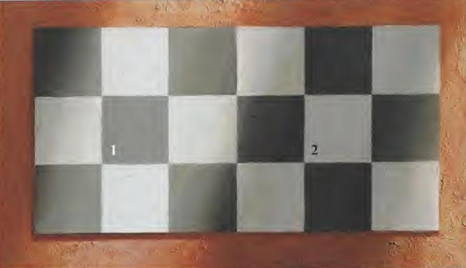
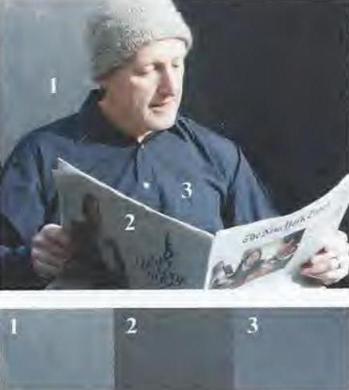
2 · Separation of Light and Shadow
Mắt bị đánh lừa
Value là độ sáng tối của một màu khi so với thang xám từ trắng tuyệt đối đến đen tuyệt đối.
- Bàn cờ: ô sáng nằm trong bóng (2) bằng đúng ô tối nằm ngoài sáng (1). Não dùng ngữ cảnh để ghi đè thông tin thật.
- Ảnh người đọc báo: tờ báo trắng trong bóng lại tối hơn chiếc áo đen ngoài nắng.
- Quy tắc cần nhớ: dưới nắng gắt, tờ báo trong bóng tối hơn áo đen ngoài sáng.
- value
- độ sáng tối
- value scale
- thang xám
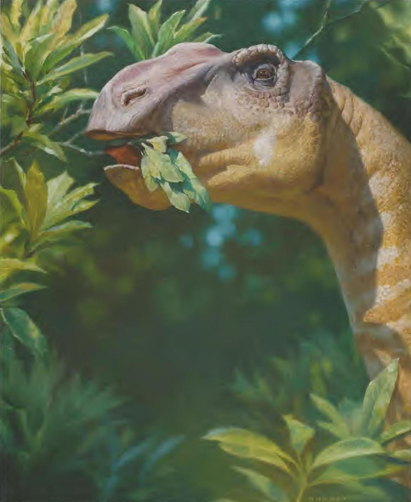
2 · Separation of Light and Shadow
Giữ khoảng cách tone
Dưới nắng, phía sáng và phía tối của khối có thể cách nhau đến 5 bậc trên thang tone 10 bậc (tương đương 2 f-stop máy ảnh). Như nhạc sĩ ý thức về quãng giữa các nốt, họa sĩ phải giữ khoảng cách tone nhất quán.
- Dân quay phim gọi đây là lighting ratio và thường giảm nó để tránh bóng gắt.
- Người mới vẽ hay bỏ qua sự áp đảo của nắng và đẩy nguồn phụ quá mạnh, khiến bóng quá sáng.
- Khoảng cách này giảm khi có mây cao, khí quyển mờ, hoặc mặt đất sáng màu.
- lighting ratio
- tỷ lệ sáng giữa phía sáng và phía bóng
- tonal interval
- khoảng cách tone
2 · Separation of Light and Shadow
Bài tập thực hành
Báo trắng vs áo đen
Chụp ảnh ngoài nắng có vật trắng trong bóng và vật đen ngoài nắng. Dùng eyedropper đo value của cả hai.
Thang 10 bậc
Vẽ một thang xám 10 bậc. Sau đó vẽ một quả cầu với phía sáng và phía bóng cách nhau đúng 5 bậc.
Check value bằng grayscale
Chuyển một tranh của bạn sang grayscale. Bóng có đang quá sáng so với phía được chiếu không?
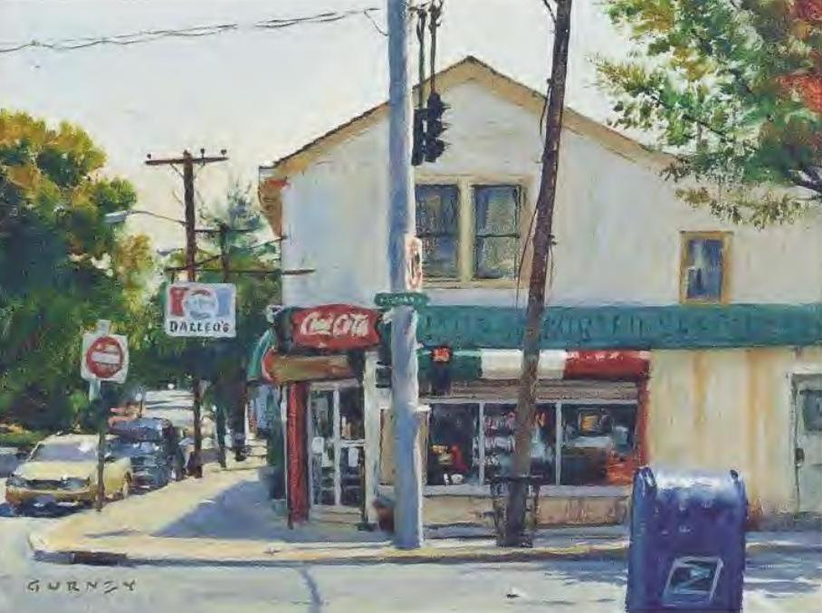
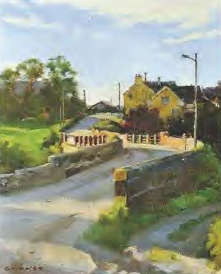
3 · Cast Shadows
Con mắt trên lưng con kiến
Bóng đổ là hình tối khi một vật chặn ánh sáng. Nó là công cụ bố cục: gợi chiều sâu hoặc nối các yếu tố trong và ngoài khung tranh.
- Ngoài vũ trụ bóng đen kịt vì không có khí quyển. Trên Trái Đất, bóng được nhiều nguồn chiếu vào.
- Hình dung bạn là một con mắt gắn trên lưng con kiến đi qua vùng bóng: nhìn lên, bạn thấy những mảng sáng nào (trời xanh, mây trắng, tòa nhà, vật sáng) thì chúng quyết định độ sáng và màu của bóng.
- Ngày nắng bóng xanh chỉ vì nhìn lên thấy trời xanh. Ngày mây rải rác, bóng trắng hơn.
- Cây cầu ở Ireland: các dải bóng song song mà người xem phải "đi qua" để vào làng, tạo chiều sâu.
- cast shadow
- bóng đổ
- ambient
- ánh sáng môi trường xung quanh
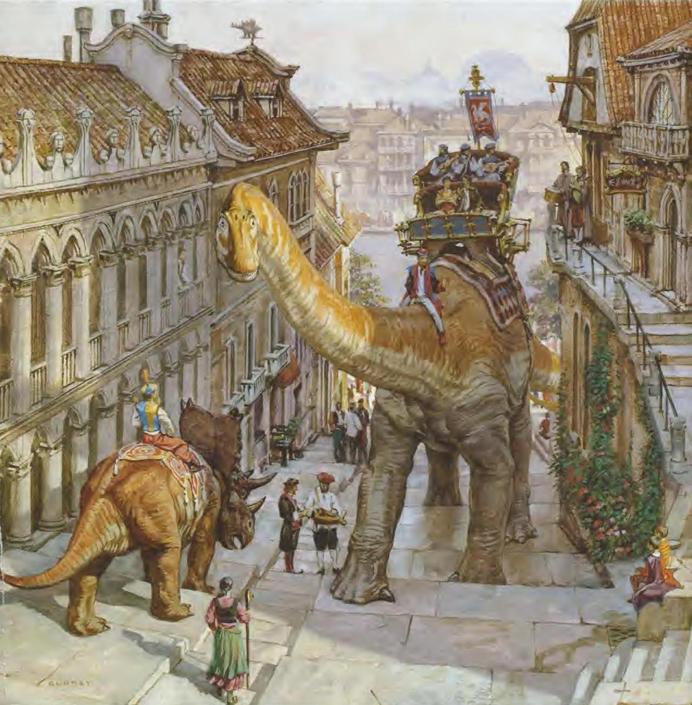
3 · Cast Shadows
Mép bóng
- Mép bóng phụ thuộc nguồn sáng: nguồn mềm cho mép mờ, nguồn cứng cho mép tương đối sắc. Hai nguồn cạnh nhau (như đèn pha ô tô) cho 2 bóng cạnh nhau.
- Mép bóng mềm dần khi càng xa vật. Bóng một tòa nhà 4 tầng sắc ở chân tường, nhưng mép có thể rộng gần 15 cm khi đổ xuống mặt đường.
- Trong tranh: bóng dài mềm dần khi đi qua bậc thang, rồi mềm hơn nữa khi lan sang tòa nhà bên kia đường.
- shadow edge
- mép bóng
- penumbra
- vùng mép bóng chuyển mờ
3 · Cast Shadows
Bài tập thực hành
Bài tập con kiến
Đứng trong một vùng bóng ngoài trời, nhìn lên và liệt kê các mảng sáng bạn thấy. Đoán bóng sẽ ngả màu gì, rồi chụp ảnh kiểm tra.
Mép bóng theo khoảng cách
Dựng một cây bút đứng dưới đèn. Vẽ bóng của nó, chú ý mép sắc ở gốc và mờ dần ở đầu xa.
Bóng làm bố cục
Thiết kế một thumbnail dùng các dải bóng song song để dẫn mắt vào chiều sâu.
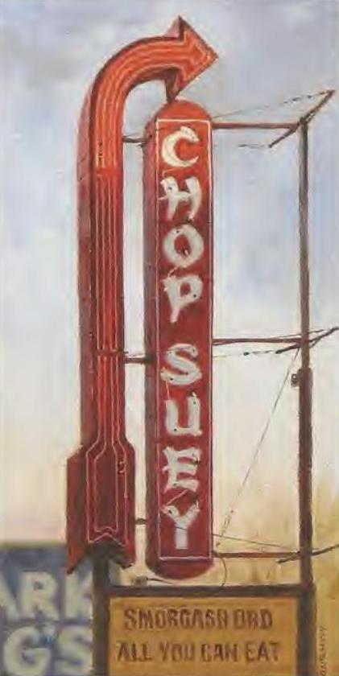
4 · Half Shadow
Nửa trên nhận nắng
Một cách tạo kịch tính, nhất là với vật đứng: chiếu sáng nửa trên, để phần còn lại trong bóng.
- Biển neon: đỏ trong nắng sáng hơn và rực hơn đỏ trong bóng. Chữ trắng trong bóng thật ra là xám xanh xỉn. Mép bóng mềm cho thấy vật che ở khá xa.
- Tháp minaret: gạch vàng và sọc trắng phải đổi cùng một lượng khi đi vào bóng. Vì watercolor không pha sẵn như sơn dầu, Gurney phủ một lớp Payne's gray lên vùng bóng trước rồi mới tô màu.
- half shadow
- nửa sáng nửa bóng
- wash
- lớp màu nước loãng phủ đều
4 · Half Shadow
Ánh sáng kết thúc câu chuyện
- Gideon và pterosaur Avatar vừa đánh bại đội quân máy móc.
- Ánh sáng chỉ chạm phần trên của nhân vật và vách đá, phần dưới chìm vào bóng chiều.
- Sáng tối ở đây gợi cảm giác cuối ngày, tức là kết thúc kịch tính của một câu chuyện sử thi.
- mood
- không khí, cảm xúc của tranh
- dramatic lighting
- ánh sáng kịch tính
4 · Half Shadow
Bài tập thực hành
Một màu, hai vùng
Vẽ một vật màu đỏ (hoặc màu bất kỳ) nửa trong nắng, nửa trong bóng. Vùng bóng không chỉ tối hơn mà còn kém bão hòa hơn.
Kỹ thuật phủ bóng trước
Trong digital: tô màu phẳng cả vật, sau đó phủ một layer Multiply màu xám lạnh lên vùng bóng. So với tô bóng thủ công.
Kết thúc bằng ánh sáng
Vẽ một nhân vật chỉ sáng phần đầu và vai. Thử kể cảm xúc 'cuối ngày' bằng ánh sáng.
5 · Occlusion Shadows
Điểm tối ở chỗ tiếp xúc
Khi các vật đủ gần nhau để chặn ánh sáng, xuất hiện một vùng bóng nhỏ và đậm. Thường gặp ở nếp gấp và chỗ vật chạm mặt đất.
- Trong cảnh gia đình này, mỗi điểm người, sinh vật, đồ vật chạm mặt phẳng đều có một nét tối nhỏ.
- Còn gọi là crevice shadow. Thử ép hai ngón tay vào nhau, nhìn đường tối ở chỗ chúng chạm.
- Không cần chạm thật: vật chỉ cần đủ gần, ví dụ góc trong nơi hai bức tường gặp nhau.
- Phần mềm 3D thời đầu không tự tạo được hiệu ứng này, phải thêm bằng tay.
- occlusion shadow
- bóng che khuất ở điểm tiếp xúc
- crevice shadow
- bóng khe
5 · Occlusion Shadows
Neo vật xuống mặt đất
- Bí ngô, giỏ tre đứng vững trên mặt đất nhờ dải tối mỏng ở đáy.
- Thiếu occlusion shadow, vật trông như đang lơ lửng hoặc bị dán lên nền.
- grounding
- neo vật vào mặt đất
- contact shadow
- bóng tiếp xúc
5 · Occlusion Shadows
Bài tập thực hành
Test ngón tay
Vẽ bàn tay ép các ngón vào nhau. Nhấn đường tối ở chỗ tiếp xúc.
Vật lơ lửng vs vật đứng
Vẽ một vật trên bàn 2 lần: không có và có occlusion shadow. Cái nào nặng và thật hơn?
Săn occlusion
Chụp 5 ảnh quanh nhà: chân ghế, góc tường, nếp chăn, ly trên bàn, sách chồng nhau. Khoanh vùng occlusion shadow.
6 · Three-Quarter Lighting
Key light và fill light
Phần lớn chân dung vẽ với ánh sáng khoảng 45 độ phía trước mẫu. Sáng phần lớn khuôn mặt, chỉ một phần nhỏ trong bóng, và đủ thấp để chiếu cả hai mắt.
- Ở chân dung người và khủng long: bóng mũi đổ lên má xa, để lại tam giác sáng trên má trong bóng. Kiểu này gọi là three-quarter lighting, cũng gọi broad lighting vì nhấn phía mặt rộng, gần người xem.
- Nguồn chính gọi là key light. Nguồn yếu hơn lấp vào bóng gọi là fill light. Trong phim có đèn fill riêng, còn họa sĩ thường dùng ánh sáng phản chiếu tự nhiên.
- key light
- nguồn sáng chính
- fill light
- nguồn sáng phụ lấp bóng
- broad lighting
- chiếu phía mặt rộng
6 · Three-Quarter Lighting
Broad, short và Rembrandt
- Người đàn ông vùng núi: broad lighting kịch tính, bóng làm rõ nếp nhăn trán, mặt trời thấp khiến mắt nheo. Mặt bên của má nhận ánh xanh của trời phía sau, gắn mặt vào nền.
- Chân dung phải: ánh sáng ở phía xa của khuôn mặt (phía bị co ngắn). Gọi là short lighting, giúp mặt trông gầy hơn.
- Khi short lighting được bố trí để bóng mũi nhập vào bóng má, tạo tam giác sáng trên má gần người xem, gọi là Rembrandt lighting.
- Các kiểu này đều tôn dáng và kín đáo, nên được dùng gần như phổ biến.
- short lighting
- chiếu phía mặt hẹp, phía xa
- Rembrandt lighting
- tam giác sáng trên má trong bóng
6 · Three-Quarter Lighting
Bài tập thực hành
Ba kiểu chân dung
Chụp selfie (hoặc chụp người thân) với đèn bàn ở 3 vị trí: broad, short, Rembrandt. Vẽ thumbnail cả 3.
Key + fill màu
Vẽ một chân dung với key light ấm và fill light lạnh, hơi lục như tranh Green Eyes.
Tìm tam giác
Tìm 3 bức chân dung nổi tiếng có Rembrandt lighting. Khoanh tam giác sáng.
7 · Frontal Lighting
Ánh sáng từ phía người xem
Frontal lighting: ánh sáng chiếu thẳng vào mẫu từ phía người xem. Có thể cứng như đèn flash hoặc mềm như cửa sổ hướng bắc. Thấy rất ít bóng.
- Key light hơi lệch trái và từ trên. Phần bóng chỉ là: mặt dưới mũi, môi dưới, cằm, phía trước cổ.
- Phía sáng được tạo khối bằng các value rất gần nhau, dùng biến đổi đỏ và lục nhiều hơn biến đổi tone.
- Xử lý phẳng như poster giúp tranh đọc rõ từ xa.
- frontal lighting
- ánh sáng trực diện
- color modeling
- tạo khối bằng đổi màu, không đổi tone
7 · Frontal Lighting
Khi outline có thật
- Frontal lighting xảy ra khi bạn ký họa ai đó với nguồn sáng ở sau lưng mình. Bản chì này vẽ trên máy bay, cửa sổ phía sau người vẽ, tạo đường sáng mảnh dọc profile.
- Frontal lighting nhấn mạnh thiết kế 2D hơn khối điêu khắc. Hợp khi muốn khoe local color hoặc hoa văn, như thời trang.
- Đây là một trong số ít trường hợp outline xuất hiện thật: viền bóng mảnh ở mép khối. Độ dày của nó tỷ lệ với độ rộng mặt phẳng đang quay đi.
- outline
- đường viền
- pattern
- hoa văn, mảng trang trí
7 · Frontal Lighting
Bài tập thực hành
Chân dung phẳng
Vẽ một khuôn mặt với frontal lighting. Hạn chế đổi value, tạo khối chủ yếu bằng chuyển màu ấm/lạnh, đỏ/lục.
Outline có độ dày
Vẽ một vật tròn dưới frontal lighting. Viền tối dày hơn ở chỗ mặt phẳng quay đi rộng, mỏng ở chỗ hẹp.
Khoe hoa văn
Vẽ một nhân vật mặc trang phục có họa tiết. Dùng frontal lighting để họa tiết là nhân vật chính.
8 · Edge Lighting
Viền sáng từ phía sau
Edge lighting chiếu từ phía sau, chạm vào mép khối và tách nó khỏi nền. Trong phim gọi là rim light hoặc kicker. Thường cần nguồn khá mạnh.
- Ngoài trời, nó xuất hiện khi mặt trời thấp và chiếu về phía người xem.
- Ký họa cừu chờ xén lông: mặt trời ngay trên mép trên khung tranh, bóng đổ thẳng về phía người xem, đây là một dạng backlight.
- Quầng ấm chạm vào viền trên và hai bên mỗi con cừu. Màu viền sáng là phiên bản sáng hơn của màu len trắng hoặc nâu.
- edge / rim light
- viền sáng
- kicker
- đèn viền trong điện ảnh
8 · Edge Lighting
Viền không chỉ là đường trắng
- Nền đủ tối để viền sáng nổi bật, thấy rõ từng sợi lông.
- Một chùm sáng tỏa (starburst) ở trán gợi bề mặt xương cứng, phản chiếu nhiều sáng hơn.
- Độ rộng của rim light phụ thuộc kích thước các mặt phẳng hướng về phía nguồn sáng. Ở tượng Lincoln, viền rộng nhất là ở trán vì đó là mặt phẳng lớn nhất.
- starburst
- chùm tia sáng tỏa
- flare
- ánh lóa
8 · Edge Lighting
Bài tập thực hành
Rim light trên nền tối
Vẽ một con vật có lông trên nền tối, chỉ sáng ở viền. Màu viền là màu lông nhưng sáng hơn, không phải trắng.
Viền có độ rộng
Vẽ một khuôn mặt nghiêng có rim light. Cho viền rộng ở trán, gò má, hẹp ở chỗ khác.
Từ ảnh thật
Chụp người/thú cưng lúc hoàng hôn, mặt trời phía sau. Vẽ lại chỉ bằng 3 tone + viền.
9 · Contre Jour
Ngược sáng
Contre-jour là kiểu backlight khi chủ thể chặn nguồn sáng, đứng trước bầu trời sáng hay khung cửa sáng. Vùng sáng như bao quanh và thấm vào mép vật.
- Silhouette nổi bật, màu mất bão hòa, bóng kéo dài về phía trước, chi tiết biến mất vì ánh lóa tràn qua mép. Mặt trời thường nằm trong khung, khiến người xem nheo mắt.
- Đừng coi vùng sáng phía sau là sơn trắng phẳng, hãy coi là một biển hơi nước phát sáng làm tan mép vật.
- Trong tranh: ánh sáng sữa tràn qua vai, sáng mặt bên mũ và gò má. Đây cũng là cách vignette chủ thể trên trang giấy trắng.
- contre-jour
- ngược sáng
- vignette
- chủ thể tan dần vào nền
9 · Contre Jour
Giữ màu trong haze
- Nhà trắng và biển trắng trước một bầu trời còn sáng hơn.
- Không khí rất mờ, giống như nhỏ chút sữa vào ly nước. Mặt gần người xem của các vật lạnh hơn và tối hơn.
- Mẹo: giữ chút màu trong lớp haze nền và hạ nó xuống dưới trắng. Bầu trời ở đây trộn xám lạnh và trắng vàng cùng value.
- haze
- lớp không khí mờ
- desaturation
- giảm độ bão hòa
9 · Contre Jour
Bài tập thực hành
Silhouette trước cửa sổ
Vẽ một người đứng trước cửa sổ sáng. Cho ánh sáng ăn vào mép vai, tóc, làm mất chi tiết.
Trời không trắng
Vẽ một bầu trời sáng bằng 2 màu cùng value (xám lạnh + vàng nhạt) thay vì trắng tinh.
Vignette nhân vật
Vẽ một nhân vật mà phần lưng tan vào nền trắng giấy, như minh họa sách.
10 · Light from Below
Sáng từ dưới gây chú ý
Ánh sáng mạnh hiếm khi đến từ dưới, nên khi có là ta chú ý ngay. Ta liên tưởng nó với lửa hoặc đèn sân khấu, gợi cảm giác ma thuật, đáng sợ hoặc kịch tính.
- Gương mặt quen thuộc (người thân, người nổi tiếng) gần như luôn được chiếu từ trên, nên mặt sáng từ dưới trông lạ.
- Nguồn từ dưới thường có màu mạnh: cam của lửa, xanh của màn hình.
- Nhân vật Lee Crabb cầm viên đá phát sáng màu hồng ngọc, trông thèm khát quyền lực.
- Không phải lúc nào cũng xấu: người đọc sách dưới nắng được trang sách phản sáng lên mặt, cảm giác lại tích cực.
- underlighting
- ánh sáng từ dưới lên
- footlights
- đèn chân sân khấu
10 · Light from Below
Làm vật lớn trông lớn hơn
- Poster cho một festival khoa học viễn tưởng ở Nantes, quê Jules Verne. Năm 1893, một cỗ máy bay cất cánh ban đêm từ quảng trường.
- Vẽ ban ngày cũng được, nhưng ban đêm thì kỳ ảo hơn. Nguồn sáng giấu sau đài phun nước, chiếu vào khói bụi bốc lên do cánh đập.
- Ánh sáng mạnh hơn nhiều ở gốc cánh, kéo mắt xuống dưới.
- Mẹo: muốn vật to trông to hơn trong cảnh đêm (tàu vũ trụ, tàu biển, tòa cao ốc), chỉ chiếu sáng một phần từ dưới bằng nguồn nhỏ, yếu, tắt nhanh.
- Gurney làm maquette để thử với ánh sáng thật.
- maquette
- mô hình nhỏ để nghiên cứu
- scale
- cảm giác kích thước
10 · Light from Below
Bài tập thực hành
Đèn pin dưới cằm
Chụp mặt mình với đèn pin chiếu từ dưới, có và không có lớp màu (giấy kính đỏ/xanh). Vẽ thumbnail cảm xúc mỗi bản.
Nhân vật phản diện
Vẽ một nhân vật cầm vật phát sáng, chiếu từ dưới lên mặt.
Làm to vật bằng ánh sáng
Vẽ silhouette một vật khổng lồ ban đêm, chỉ sáng một phần ở đáy. So với bản chiếu sáng đều.
11 · Reflected Light
Mọi vật được chiếu là một nguồn sáng
Giống mặt trăng phản ánh mặt trời vào đêm, mọi vật nhận ánh sáng mạnh đều thành nguồn sáng của riêng nó và ảnh hưởng vùng bóng gần đó.
- Gurney chụp bóng croquet, rồi đổi chỗ bóng bằng Photoshop. Lộ ngay vì màu phản chiếu sai: quả bóng xanh làm bóng của quả vàng ngả vàng lục, quả đỏ làm nó ngả cam.
- Ánh phản chiếu giảm nhanh khi xa nguồn, và các màu trộn vào nhau ở vùng giữa.
- Tượng Lincoln: bóng nhuộm cam mạnh nhờ tấm bìa cam để gần trong nắng, còn các mặt hướng lên ăn màu trời xanh.
- reflected light
- ánh sáng phản chiếu
- color bleeding
- màu lan sang vật bên cạnh
11 · Reflected Light
Mặt hướng lên lạnh, hướng xuống ấm
Ta hay nghĩ bóng là màu xanh. Đúng một phần: mặt trong bóng hướng lên trời thì ngả xanh trong ngày nắng. Nhưng mặt hướng xuống nhận ánh ấm phản chiếu từ mặt đất được chiếu sáng.
- Bóng đổ trên vỉa hè: nhiều màu xanh.
- Mái tam giác trắng phía trên hàng cột: chỗ các khối nhô ra hướng xuống, bóng ấm rõ rệt, không xanh chút nào.
- Thêm ví dụ: hẻm ở Toledo, mặt bóng của tòa nhà vàng thành cam đậm vì phản chiếu tòa nhà đỏ đang nhận nắng bên kia đường.
- upfacing plane
- mặt hướng lên
- downfacing plane
- mặt hướng xuống
11 · Reflected Light
5 sự thật về reflected light
- Trong bóng, mặt hướng lên thì lạnh, mặt hướng xuống thì ấm.
- Ánh phản chiếu giảm rất nhanh khi ra xa nguồn, trừ khi nguồn rất lớn (như cả bãi cỏ).
- Hiệu ứng rõ nhất khi loại bỏ các nguồn phản chiếu và fill light khác.
- Màu của bóng = tổng các nguồn phản chiếu + local color của chính vật.
- Ngày nắng, mặt đứng trong bóng thường nhận 2 nguồn: ánh ấm từ mặt đất và ánh xanh từ trời.
11 · Reflected Light
Bài tập thực hành
Thí nghiệm bìa màu
Đặt một vật trắng (cốc, tượng) dưới đèn. Để một tờ giấy màu gần vùng bóng. Vẽ lại sự thay đổi màu của bóng.
Hai nguồn trong một bóng
Vẽ một bức tường trắng trong bóng ngày nắng: phần dưới ấm (ánh đất), phần trên lạnh (ánh trời).
Bắt lỗi ảnh ghép
Tìm một ảnh/tranh có vật được 'dán' vào cảnh. Kiểm tra: màu phản chiếu xung quanh có khớp không?
12 · Spotlighting
Spotlight và ambient light
Trên sân khấu, ánh sáng gần như không bao giờ đều. Vùng ít quan trọng chìm vào bóng, còn spotlight giữ chặt sự chú ý vào phần quan trọng nhất.
- Ký họa concept: ánh sáng từ phải đổ bóng dài của người đang chạy.
- Bóng đó phải cùng màu với vỉa hè phía trước chùm sáng, vì cả hai cùng chỉ nhận ambient light: phần ánh sáng còn lại khi bỏ key light đi.
- Hình dạng chùm sáng bọc qua khối nhà cho thấy nguồn tròn, gợi cảm giác người đàn ông đang bị theo dõi.
- spotlight
- đèn rọi
- ambient light
- ánh sáng môi trường còn lại
12 · Spotlighting
Hai spotlight màu
- Người đứng trên gờ tường trong một thanh sáng xiên chiếu từ dưới.
- Bóng cánh tay đỏ ở dưới, xanh ở trên, gợi 2 spotlight màu đặt cạnh nhau: đỏ dưới, xanh trên.
- Kiểu đèn sân khấu này tạo bóng có mép màu (chromatic edges).
- Spotlight cũng dùng được trên vùng nhỏ như khuôn mặt. Phim kinh điển hay dùng "eyelights" để dồn chú ý vào đôi mắt.
- chromatic edge
- mép bóng có màu
- eyelight
- đèn rọi riêng vào mắt
12 · Spotlighting
Bài tập thực hành
Dẫn mắt bằng spotlight
Vẽ một cảnh nhiều nhân vật, chỉ rọi sáng 1 người. Mọi thứ khác trong ambient light.
Màu bóng = màu ambient
Vẽ một bóng đổ nằm cạnh mép chùm spotlight. Kiểm tra màu bóng khớp với vùng nền ngoài chùm sáng.
Hai đèn màu
Vẽ một vật được chiếu bởi 2 đèn màu khác nhau (đỏ/lam). Quan sát bóng có mép màu.
13 · Limitations of the Form Principle
Mây không phải cục thạch cao
Vật đặc, mặt mờ cư xử có quy luật dưới nắng: phía sáng, phía bóng, reflected light. Nhưng mây, lá, tóc, kính, kim loại phản ứng khác và cần cách linh hoạt hơn.
- Mây thay đổi rất nhiều về mật độ, độ dày, cấu tạo. Có lúc có phía sáng/tối rõ, có lúc không.
- Điều chắc chắn: mây truyền sang phía bóng nhiều ánh sáng hơn nhờ tán xạ bên trong, nhiều hơn lượng nó nhận từ các nguồn phụ.
- Trong tranh: một khối mây nhô lên trên các lớp mây trong bóng, đón nắng sớm. Ánh sáng xuyên qua và làm sáng cả phía gần.
- Vẽ mây đúng form principle cứng nhắc sẽ thành những cục thạch cao treo lơ lửng.
- subsurface scattering
- tán xạ ánh sáng bên trong vật
- translucent
- trong mờ, cho sáng xuyên qua
13 · Limitations of the Form Principle
Lá cây và điểm khởi đầu
- Lá cũng biến đổi mạnh trong cách tương tác với ánh sáng.
- Cây du phía trước đủ dày và đục để thấy phía sáng và phía bóng. Hàng cây phía sau đủ thưa để ánh sáng xuyên hẳn qua.
- Form principle với light, halftone, shadow, reflected light chỉ là điểm khởi đầu. Thế giới không làm bằng thạch cao. Các chất liệu khác sẽ học ở chương 9 và 10.
- form principle
- nguyên lý khối
- opaque
- đục, không cho sáng qua
13 · Limitations of the Form Principle
Bài tập thực hành
Mây có ánh sáng bên trong
Vẽ một đám mây cumulus. Cho phía bóng sáng hơn bạn nghĩ và có chút màu ấm thấm qua, đừng tô như khối đá.
Dày vs thưa
Vẽ 2 cái cây: một tán dày (có sáng/tối rõ), một tán thưa (ánh sáng xuyên qua). So sánh cách tô.
Liệt kê ngoại lệ
Đi quanh nhà, tìm 5 vật không theo form principle (kính, tóc, vải mỏng, kim loại, nước). Ghi lại chúng khác ở điểm nào.
Wrap-up
Tổng kết chương 3
- Ánh sáng trên khối có trật tự: highlight, center light, halftone, terminator, core, reflected light, occlusion, cast shadow.
- Giữ khoảng cách tone nhất quán giữa sáng và bóng. Dưới nắng, khoảng cách đó lớn hơn bạn nghĩ.
- Bóng không phải bóng tối, mà là ánh sáng của các nguồn yếu hơn: trời, mặt đất, vật xung quanh.
- Hướng sáng là công cụ kể chuyện: 3/4 dễ chịu, frontal phẳng và thời trang, rim tách nền, contre-jour mơ màng, từ dưới thì kỳ bí.
- Form principle là điểm xuất phát, không phải luật cứng. Mây, lá, tóc, kính phá vỡ nó.
Chương sau: Elements of Color · hue, chroma, value và các thành phần của màu.
Wrap-up
Glossary chương 3
- form principle
- nguyên lý khối
- highlight
- điểm sáng nhất
- center light
- vùng sáng chính
- halftone
- vùng chuyển trung gian
- terminator
- ranh sáng tối
- core shadow
- dải tối nhất trong bóng khối
- form shadow
- bóng của khối
- cast shadow
- bóng đổ
- occlusion shadow
- bóng ở điểm tiếp xúc
- reflected light
- ánh sáng phản chiếu
- raking light / half-light
- ánh sáng sượt
- value
- độ sáng tối
- lighting ratio
- tỷ lệ sáng/bóng
- key light
- nguồn chính
- fill light
- nguồn phụ lấp bóng
- broad / short lighting
- chiếu mặt rộng / mặt hẹp
- Rembrandt lighting
- tam giác sáng trên má
- frontal lighting
- ánh sáng trực diện
- rim light / kicker
- viền sáng
- contre-jour
- ngược sáng
- underlighting
- sáng từ dưới
- maquette
- mô hình nghiên cứu
- ambient light
- ánh sáng môi trường
- spotlight
- đèn rọi
- subsurface scattering
- tán xạ bên trong
- translucent
- trong mờ
James Gurney · Color and Light
Chương 4
Elements of Color
Hue, chroma, value: ba chiều của màu. Chương này giúp bạn "nói" về màu chính xác và nhìn màu như một họa sĩ.
Vuốt hoặc dùng phím ← → để chuyển slide. Chạm vào tranh để xem lớn.
Chương này để làm gì
Chương 2-3 nói về ánh sáng. Từ chương 4, Gurney chuyển sang màu: màu được tổ chức thế nào, đo bằng gì, và vì sao một số màu (xám, xanh lá) lại khó dùng.
- Rethinking the Color Wheel · xem lại bánh xe màu
- Chroma and Value · độ bão hòa và độ sáng
- Local Color · màu thật của vật
- Grays and Neutrals · màu xám và trung tính
- The Green Problem · vấn đề màu xanh lá
- Gradation · chuyển màu
- Tints · màu pha trắng
Cách học: đọc ghi chú → nhìn lại tranh tìm đúng điều được nói → làm bài tập cuối mỗi phần.
1 · Rethinking the Color Wheel
Bánh xe màu truyền thống
Ánh sáng trắng qua lăng kính tách thành dải màu liên tục. Uốn dải đó thành vòng tròn ta có hue circle, tức bánh xe màu. Newton nối hai đầu đỏ và tím, gọi tên 7 màu ROYGBIV. Họa sĩ thường bỏ chàm, giữ 6 màu cơ bản.
- Artist's primaries: đỏ, vàng, lam. Ý tưởng là pha được mọi màu từ 3 màu này. Thực tế pha được cam trong, nhưng xanh lá và tím rất đục.
- Secondary colors: tím, xanh lá, cam, nằm giữa các màu chính.
- Complement: màu đối diện trên vòng. Pha hai màu bổ túc ra xám trung tính. Ở afterimage (dư ảnh thị giác), cặp hơi khác: lam đối vàng, không phải cam.
- Chroma: độ mạnh cảm nhận của màu bề mặt so với trắng. Ở tâm vòng là xám. Saturation là từ gần nghĩa nhưng đúng hơn dùng cho độ tinh khiết của ánh sáng.
- primary / secondary
- màu chính / màu phụ
- complement
- màu bổ túc
- chroma
- độ bão hòa của màu bề mặt
1 · Rethinking the Color Wheel
Vấn đề của bánh xe cũ
- Đỏ-vàng-lam không phải "chân lý". Bất kỳ màu nào ở viền vòng cũng có thể làm màu chính. Xanh lá cũng không "phụ" hơn lam.
- Khoảng cách màu bị lệch: vùng vàng-cam-đỏ bị kéo giãn quá mức, vì mắt nhạy với khác biệt màu ấm hơn và có nhiều pigment ấm hơn.
- Munsell: 10 hue cách đều (Y, GY, G, BG, B, PB, P, RP, R, YR), mô tả màu được bằng số.
- Ngành in dùng CMY(K), ánh sáng dùng RGB. Đặt RGB xen giữa CMY cách đều ta có vòng 6 màu chính: YRMBCG, dễ nhớ là "You Ride My Bus, Cousin Gus".
- Kết luận của Gurney: nên học vòng màu lý tưởng này dù bạn dùng pigment nào. Quan trọng là biết màu của mình nằm đâu trên đó.
- Munsell
- hệ màu 10 hue cách đều
- CMY / RGB
- màu chính của in ấn / của ánh sáng
- Yurmby wheel
- vòng 6 màu Y-R-M-B-C-G
1 · Rethinking the Color Wheel
Bài tập thực hành
Vẽ vòng Yurmby
Vẽ một vòng 6 ô: vàng, đỏ, magenta, lam, cyan, xanh lá, cách đều. Sau đó pha các ô giữa.
Đặt màu của bạn lên vòng
Lấy bảng màu bạn hay dùng (sơn hoặc swatch digital). Đặt từng màu vào đúng vị trí trên vòng: nằm ở viền hay lọt vào trong?
Thử RYB
Chỉ dùng đỏ, vàng, lam pha thử xanh lá và tím. So với xanh lá, tím pha từ cyan và magenta.
2 · Chroma and Value
Ba chiều của màu
Mỗi màu có 3 chiều: hue (vị trí trên vòng), chroma (trong hay xám), và value (sáng tối, trục dọc). Ba chiều tạo thành một khối gọi là color space hay color solid.
- Munsell đặt tên màu bằng số: YR 7/2 nghĩa là hue vàng-đỏ, value 7 (thang 0 đen đến 10 trắng), chroma 2. Thay vì nói "be", "nâu đỏ" mơ hồ.
- Peak chroma value: mỗi hue đạt độ rực tối đa ở một value riêng. Vàng rực nhất khi rất sáng, lam rực nhất khi rất tối, đỏ rực nhất ở value trung bình.
- Trong bảng: chroma giữ nguyên theo cột dọc, value giữ nguyên theo hàng ngang.
- hue / value / chroma
- sắc / sáng tối / độ bão hòa
- peak chroma value
- value mà màu rực nhất
2 · Chroma and Value
Bài toán đèn neon đỏ
Vẽ trực tiếp, bạn phải "dịch" dải tone rộng của cảnh thật sang dải hẹp của palette. Đèn neon là ví dụ khó.
- Neon là một trong những vùng sáng nhất cảnh, và cũng rực nhất.
- Sơn trắng đủ sáng nhưng mất màu. Đỏ pha trắng thì yếu chroma, thành hồng hoặc cam. Đỏ nguyên tuýp thì đủ rực nhưng quá tối so với trắng.
- Giải pháp: vẽ bóng đèn bằng tint đỏ cam tinh khiết, và bao quanh bằng một vùng đỏ cam rực ở value trung bình, gợi ánh sáng tràn ra.
- color space
- không gian màu 3 chiều
- translation
- chuyển dải tone thật sang palette
2 · Chroma and Value
Bài tập thực hành
Bảng peak chroma
Chọn 1 màu (đỏ hoặc lam). Làm một bảng nhỏ: hàng ngang thay đổi chroma, cột dọc thay đổi value.
Đặt tên Munsell
Chọn 5 màu trong một bức tranh. Ước lượng hue, value (0-10), chroma (thấp/trung/cao) cho từng màu.
Vẽ nguồn sáng rực
Vẽ một biển neon hoặc đèn lồng. Dùng mẹo của Gurney: tâm là tint sáng, xung quanh là vùng màu rực ở value trung bình.
3 · Local Color
Màu thật vs màu cần pha
Local color là màu bề mặt của vật khi nhìn gần dưới ánh sáng trắng, như thể bạn ướm một mẫu sơn sát vào nó. Nhưng màu bạn thật sự pha để vẽ thường khác.
- Xe buýt ở Malta sơn sọc vàng, đỏ, trắng. Ký họa gần giống tô màu sách, nhưng vẫn phải chỉnh local color.
- Vàng được nâng sáng ở mặt phẳng phía trên bánh xe, nơi thân xe nhô ra.
- Sọc đỏ sáng hơn ở phần trên, nơi nó ngả về sau và nhận ánh trời. Trời xanh phản chiếu lên sọc đỏ làm nó thành tím nhạt.
- local color
- màu thật của bề mặt
- modulation
- biến đổi màu theo hoàn cảnh
3 · Local Color
Biến đổi local color
- Mỗi viên kẹo có mép sáng ở chỗ bắt ánh lóa của cửa sổ, tối dần ở phía quay về người xem, và có một highlight nhỏ ở giữa từ đèn huỳnh quang.
Quy tắc chung: màu bạn pha luôn là một biến thể của local color. Bạn có thể:
- Làm sáng hoặc tối để tạo khối.
- Làm xám đi để đẩy vật ra xa qua lớp khí quyển.
- Đổi hue để thể hiện ánh sáng phản chiếu từ vật khác.
- glare
- ánh lóa
- atmospheric graying
- làm xám do khí quyển
3 · Local Color
Bài tập thực hành
Swatch vs tranh
Chọn một vật một màu (cốc, áo). Tô một ô local color, rồi vẽ vật đó dưới đèn. Đếm có bao nhiêu biến thể khác ô gốc.
Phản chiếu trời
Vẽ một vật màu đỏ hoặc vàng ngoài trời. Thêm ánh xanh của trời lên các mặt hướng lên.
Bộ kẹo màu
Vẽ 5 viên bi/kẹo khác màu dưới cùng nguồn sáng. Mỗi viên có mép sáng, vùng tối, highlight.
4 · Grays and Neutrals
Xám là bạn thân
Xám bị coi là nhạt nhẽo, nhưng thật ra là bạn thân nhất của họa sĩ. Tranh hỏng vì quá nhiều màu rực nhiều hơn là vì quá nhiều xám.
- Xám là nền cho các điểm màu rực, tạo khoảng thở cho bố cục, tạo không khí trầm lắng.
- Trong tranh: các mảng xám nối điểm xanh lam và đỏ bằng các nốt chuyển tiếp tím nhạt và nâu.
- Không có một màu xám duy nhất. Xám có thể ánh lam, ánh cam. Nhận ra sắc trong màu xám cần luyện tập.
- Nên pha xám từ cặp bổ túc (lam + cam, đỏ + xanh lá, tím + vàng) thay vì trắng + đen.
- Xám trên trời ở đây có chứa cadmium red và cobalt blue, đúng là màu của các điểm nhấn trên thuyền, xe, biển hiệu, nên tất cả hài hòa.
- neutral
- màu trung tính
- accent
- điểm nhấn màu
4 · Grays and Neutrals
Xám không phẳng
- Một vùng xám có thể sống động hơn nếu bạn thay đổi value và hue trên bề mặt.
- Tòa nhà lớn bên trái: chuyển từ xám tối, lạnh sang xám sáng hơn, ấm hơn ở phía xa.
- Gurney gọi xám là "nước sốt" của color scheme. Ingres nói: "Thà xám còn hơn lòe loẹt."
- color harmony
- sự hài hòa màu
- garish
- lòe loẹt
4 · Grays and Neutrals
Bài tập thực hành
Xám từ bổ túc
Pha 3 màu xám từ 3 cặp: lam-cam, đỏ-xanh lá, tím-vàng. So với xám trắng-đen.
Tranh 90% xám
Vẽ một cảnh mà gần hết là xám, chỉ 1-2 điểm màu rực. Pha xám có chứa chút màu của điểm nhấn.
Xám chuyển sắc
Tô một bức tường xám chuyển từ lạnh tối sang ấm sáng. So với tường xám phẳng.
5 · The Green Problem
Vì sao xanh lá khó
Xanh lá phổ biến nhất trong tự nhiên nhưng lại làm khó họa sĩ và designer đến mức nhiều người loại hẳn khỏi palette.
- Xanh lá rất quan trọng: nhiều nhà tâm lý học coi là màu chính, mắt người nhạy nhất với vàng-lục.
- Nhưng trong thiết kế bìa sách có câu "bìa xanh lá không bán được". 79% quốc kỳ châu Âu có đỏ, chỉ 16% có xanh lá. Xanh lá thường trông kinh dưới đèn sân khấu. Khách mua tranh ít thích tranh ám xanh lá.
- 150 năm trước Durand đã nói về "định kiến với màu xanh lá", và trách họa sĩ vẽ mùa thu thay vì mùa hè để né nó.
- Cuối xuân đầu hè, lá mới có màu vàng-lục chói. Có họa sĩ pha sẵn "vegetable green" cực rực để bắt màu đó.
- vegetable green
- xanh lá rực của lá non
- color prejudice
- định kiến về màu
5 · The Green Problem
Bốn mẹo xử lý xanh lá
Study này giữ đúng màu quan sát, không chỉnh. Có nên làm xanh xám hơn không? Gurney nói tùy gu.
- Bỏ pigment xanh lá, tự pha từ lam và vàng. Màu yếu hơn và đa dạng hơn, đúng thứ bạn cần.
- Tránh đơn điệu: thay đổi các màu xanh ở cả quy mô nhỏ (lá này lá kia) và lớn (cây này cây kia).
- Pha sẵn một ít xám hồng/đỏ, đan vào giữa các mảng xanh. Họa sĩ Stapleton Kearns gọi là "smuggling reds" (buôn lậu đỏ).
- Lót nền canvas màu hồng hoặc đỏ để nó lộ ra đây đó, làm xanh lá sống động hơn.
- smuggling reds
- đan đỏ/hồng vào giữa xanh lá
- monotony
- sự đơn điệu
5 · The Green Problem
Bài tập thực hành
10 sắc xanh không tuýp xanh
Chỉ từ 2 lam và 2 vàng, pha 10 màu xanh lá khác nhau. Xếp thành bảng.
Smuggling reds
Vẽ một mảng cây bụi. Bản 1 chỉ xanh. Bản 2 đan thêm xám hồng. So sánh.
Nền đỏ
Tô nền đỏ cam, vẽ cảnh cây xanh lên trên, cố ý để nền lộ ra ở mép nét.
6 · Gradation
Glissando của màu
Như glissando trong nhạc, gradation chuyển mượt từ nốt này sang nốt khác: từ hue này sang hue khác, từ sáng sang tối, hoặc từ đục sang rực.
- Tranh có nhiều hệ chuyển màu cùng lúc: trời từ xanh nhạt ở trên xuống xám hồng ở dưới, kèm dải hồng mỏng ở chân trời.
- Gradation không tự nhiên mà có. Cần lên kế hoạch và thường phải pha sẵn màu trước khi tô.
- gradation
- chuyển màu dần
- premix
- pha màu sẵn trước
6 · Gradation
Không có gì đứng yên
- Cảnh mặt trời mọc dùng gradation để thể hiện độ chói: từ mặt trời ra mép tranh, màu đổi dần cả value, hue và chroma.
- John Ruskin (Modern Painters, 1843): màu chuyển dần so với màu phẳng giống như đường cong so với đường thẳng.
- Theo Ruskin, thiên nhiên luôn có chuyển màu ở mọi quy mô, kể cả trong một nét cọ hay một viên sỏi. Không có đường, màu, bóng nào của thiên nhiên đứng yên một sắc.
- value / hue / chroma shift
- đổi sáng tối / sắc / độ rực
- flat color
- màu phẳng
6 · Gradation
Bài tập thực hành
Bầu trời 3 hệ
Vẽ một bầu trời có ít nhất 2 gradation: trên xuống dưới (lam → xám hồng) và quanh mặt trời.
Thay màu phẳng
Lấy một tranh cũ có mảng màu phẳng lớn. Làm lại mảng đó với gradation nhẹ, so sánh.
Gradation trong một vật
Vẽ một viên sỏi hoặc chiếc lá, cho màu đổi dần từ đầu này sang đầu kia.
7 · Tints
Màu pha trắng
Thêm trắng vào màu ta được tint hay màu "pastel". Đây là đặc điểm của các màu ở xa trong ngày có haze. Tranh tường thường thành công với dải màu nhạt, gợi cảm giác ánh sáng.
- Như giai điệu chuyển lên quãng cao, một bộ màu cũng có thể "chuyển giọng" lên value cao, tạo cảm giác thoáng và tinh tế.
- Ở phong cảnh này, màu đậm ở tiền cảnh nhạt dần khi lùi xa.
- tint
- màu pha trắng
- high-key
- tranh tông sáng
7 · Tints
Hai cách làm tint
- Tranh fantasy này cũng dùng tint. Để tint high-key trông hấp dẫn, nên có vài mảng màu tối ở chỗ khác làm tương phản.
- Cách 1: thêm trắng. Thường làm màu ngả lam: đỏ pha trắng thành ngả magenta.
- Cách 2: phủ màu thành lớp mỏng trong suốt lên nền trắng. Thường cho tint rực hơn.
- whitening shift
- màu đổi sắc khi pha trắng
- transparent layer
- lớp màu trong suốt
7 · Tints
Bài tập thực hành
Hai cách tint
Pha đỏ + trắng, và phủ đỏ mỏng lên nền trắng (hoặc layer opacity thấp). So sắc của hai ô.
Tranh high-key
Vẽ một tranh nhỏ gần như toàn tint, chỉ giữ 1-2 mảng tối để tương phản.
Lùi xa bằng tint
Vẽ 3 lớp đồi: gần (màu đậm), giữa, xa (tint nhạt và ngả lam).
Wrap-up
Tổng kết chương 4
- Màu có 3 chiều: hue, value, chroma. Mỗi hue rực nhất ở một value riêng.
- Vòng RYB không phải chân lý. Hiểu vòng màu lý tưởng (Munsell, Yurmby) và biết màu của bạn nằm đâu trên đó.
- Local color chỉ là điểm xuất phát. Màu pha luôn là biến thể theo khối, khí quyển, phản chiếu.
- Xám là nước sốt. Thà xám còn hơn lòe loẹt. Pha xám từ cặp bổ túc.
- Xanh lá cần chế biến. Gradation và tint làm tranh sống và thoáng.
Chương sau: Paint and Pigments · chất liệu màu và cách sắp palette.
Wrap-up
Glossary chương 4
- hue
- sắc màu
- value
- độ sáng tối
- chroma
- độ bão hòa màu bề mặt
- saturation
- độ tinh khiết của ánh sáng
- primary / secondary
- màu chính / phụ
- complement
- màu bổ túc
- Munsell
- hệ màu 10 hue
- CMY / RGB
- màu chính của in / ánh sáng
- Yurmby
- vòng 6 màu Y-R-M-B-C-G
- color space
- không gian màu
- peak chroma value
- value rực nhất của hue
- local color
- màu thật của vật
- neutral
- màu trung tính
- accent
- điểm nhấn
- vegetable green
- xanh lá non rực
- smuggling reds
- đan đỏ vào xanh lá
- gradation
- chuyển màu
- tint
- màu pha trắng
- high-key
- tông sáng
James Gurney · Color and Light
Chương 5
Paint and Pigments
Hiểu chất liệu màu: nguồn gốc, độ bền, độ trong, cách lót nền, cách sắp palette và cuộc tranh luận về màu "bùn".
Vuốt hoặc dùng phím ← → để chuyển slide. Chạm vào tranh để xem lớn.
Chương này để làm gì
Chương này thực hành nhất cuốn sách: nói về vật liệu. Dù bạn vẽ digital, hiểu pigment thật vẫn giúp bạn hiểu vì sao một số màu hài hòa, vì sao có màu "bẩn", và cách giới hạn palette.
- The Search for Pigments · lịch sử tìm pigment
- Charting Pigments · đặc tính pigment
- Lightfastness · độ bền với ánh sáng
- Warm Underpainting · lót nền ấm
- Sky Panels · vẽ trời trước
- Transparency and Glazing · độ trong và glaze
- Palette Arrangements · sắp xếp palette
- Limited Palettes · palette giới hạn
- The Mud Debate · tranh luận màu bùn
Nếu bạn chủ yếu vẽ digital: phần 1, 3, 4, 7 đọc để hiểu; phần 2, 6, 8, 9 áp dụng trực tiếp được.
1 · The Search for Pigments
Pigment quý hơn vàng
Pigment là bột khô, không tan, hấp thụ và phản xạ chọn lọc bước sóng ánh sáng để tạo màu. Pigment lý tưởng phải bền, dồi dào, không độc. Phần lớn màu từ cây và động vật phai ngay.
- Từ thời tiền sử: đen (than, xương đốt), đỏ và vàng (oxit sắt). Thành phố Siena của Ý cho ra tên màu sienna (raw và burnt).
- Tím Tyrian của hoàng đế La Mã: 12.000 con ốc mới được 1,4 gram, nên tím thành màu vương giả.
- Đỏ thẫm của quân phục Anh, áo hồng y, son môi hiện đại: từ một loài côn trùng sống trên xương rồng, từng quý hơn vàng với người Tây Ban Nha.
- Ultramarine từ đá lapis lazuli ở Afghanistan, nghĩa là "bên kia biển". Đắt đến mức chỉ dành cho áo choàng Đức Mẹ.
- pigment
- bột màu
- ultramarine
- xanh lam từ lapis lazuli
1 · The Search for Pigments
Độc tính, tên màu, chất kết dính
- Độc: chì trắng, vermilion (từ thủy ngân), emerald green (arsenic, từng dùng làm thuốc trừ sâu). Cadmium vẫn phổ biến nhưng nghi gây ung thư: đeo găng, tránh phun airbrush, cẩn thận với phấn tiên và bột khô.
- Thế kỷ 19: Prussian blue, phthalo blue ra đời trong phòng thí nghiệm. Cobalt, cadmium xuất hiện đầu 1800. Ultramarine tổng hợp từ thập niên 1820.
- Color Index Name: P + chữ cái hue + số. Ultramarine là PB 29. Đọc mã này để biết màu thật, vì tên thương mại hay gây nhầm.
- "Light" trong tên màu nghĩa là ngả vàng, không phải sáng hơn. "Deep" là ngả đỏ. "Hue" nghĩa là màu pha thay thế một pigment lịch sử.
- Binder (chất kết dính): gum arabic (màu nước), dầu lanh (sơn dầu), lòng đỏ trứng (tempera). Hiện đại có alkyd, acrylic.
- Color Index Name
- mã pigment quốc tế, vd PB 29
- binder
- chất kết dính
- hue (trong tên màu)
- màu pha thay thế
1 · The Search for Pigments
Bài tập thực hành
Đọc nhãn tuýp
Lấy 5 tuýp màu (hoặc tra online bộ màu bạn có). Ghi lại Color Index Name của từng màu.
Phát hiện 'hue'
Tìm trong bộ màu xem có màu nào ghi 'hue' không. Tra xem nó thay thế pigment gì.
An toàn
Kiểm tra bộ màu có cadmium, cobalt hay không. Lập 3 quy tắc an toàn cho góc vẽ của bạn.
2 · Charting Pigments
Bản đồ pigment
Mỗi pigment có hue, value, chroma, và thêm: độ trong, thời gian khô, độ tương thích với pigment khác. Cách duy nhất để hiểu là thử nghiệm.
- Mỗi pigment nằm ở một vị trí trên vòng màu lý tưởng. Nhiều màu không chạm tới chroma tối đa, và có những khoảng trống không pigment nào lấp được.
- Convenience mixtures: màu pha sẵn để có màu dễ gọi tên (mauve) hoặc lấp khoảng trống (phthalo yellow-green). Payne's gray là xanh đen pha từ đen và ultramarine.
- convenience mixture
- màu pha sẵn
- gamut gap
- khoảng màu không có pigment
2 · Charting Pigments
Masstone, undertone, tinting strength
- Tinting strength: khả năng giữ chroma khi pha trắng.
- Độ trong / độ phủ: cadmium red trên tấm yên ngựa là đỏ rất đục, phủ mạnh.
- Cách thử: quét một lớp dày (masstone) lên nền gesso trắng. Bên cạnh quét một lớp mỏng (undertone) có vạch đen phía dưới để thử độ phủ.
- Inorganic (cadmium, cobalt, sắt, kẽm): đục hơn, nặng hơn, yếu hơn khi pha trắng. Organic tổng hợp: trong hơn, nhẹ hơn, tinting strength cao, giữ độ trong khi pha với organic khác nhưng có thể đục khi pha với inorganic.
- masstone / undertone
- lớp dày / lớp mỏng
- tinting strength
- sức nhuộm khi pha trắng
- organic / inorganic
- hữu cơ / vô cơ
2 · Charting Pigments
Bài tập thực hành
Bảng masstone
Kẻ một vạch đen trên giấy. Với mỗi màu bạn có: quét lớp dày, lớp mỏng qua vạch đen, và một ô pha trắng.
Đặt pigment lên vòng
Dùng bảng vừa làm, đặt từng màu lên vòng Yurmby. Màu nào gần viền nhất?
Bảng pha 2 màu
Như Figure 3 của sách: xếp 6 màu theo hàng và cột, tô ô giao nhau bằng hai lớp chồng lên nhau.
3 · Lightfastness
Màu nào phai
Lightfastness là khả năng chống phai khi tiếp xúc ánh sáng. Quần jean, hình xăm, sơn nhà đều phai. Gurney thử: cắt đôi mỗi dải màu, nửa để chỗ tối, nửa phơi nắng 8 tháng.
- Màu phai vì phân tử bị phá vỡ bởi ánh sáng, nhất là UV, "như búa đập vỡ chuỗi hạt".
- Oxit sắt, cobalt, cadmium rất bền. Dye (thuốc nhuộm, dùng trong marker) dễ phai, gọi là fugitive. Bút highlighter huỳnh quang phai rất tệ.
- Tiêu chuẩn ASTM: hạng I (rất bền) đến V (rất dễ phai). Alizarin crimson (PR 83) chỉ hạng III-IV. Thay thế: quinacridone, pyrrole, perylene (PR 202, PR 206, PR 264, PV 19).
- Pyrrole red còn gọi "Ferrari red". "Permanent" trên bút nghĩa là chống nước, không phải bền màu.
- lightfastness
- độ bền màu với ánh sáng
- fugitive
- dễ phai
- ASTM rating
- xếp hạng độ bền I-V
3 · Lightfastness
Bài tập thực hành
Test phai 1 tháng
Tô dải các bút/màu bạn có (marker, màu nước, bút gel). Cắt đôi, một nửa dán cửa sổ, một nửa cất tối. So sau 4 tuần.
Kiểm tra ASTM
Tra hạng ASTM của các màu chính trong bộ của bạn. Màu nào dưới hạng II?
Nếu bán tranh in
Nếu bạn bán print, tra độ bền mực của dịch vụ in. Áp dụng 4 quy tắc: hạng I-II, cất chỗ tối, kính lọc UV, tránh nắng trực tiếp.
4 · Warm Underpainting
Không bắt đầu từ trắng
Thay vì bắt đầu trên canvas trắng, nhiều họa sĩ lót màu trước, gọi là underpainting hoặc imprimatura.
- Lót bằng tint hoặc lớp trong suốt Venetian red hoặc burnt sienna cho một nền tốt với nhiều loại tranh.
- Nền ấm "dai dẳng" ép bạn phải phủ màu đục lên, tức là buộc phải ra quyết định pha màu.
- Rất hợp với tranh trời, cây lá, hoặc tranh tông lam/lục. Những chấm nền ấm lộ ra giữa nét làm xanh lam và xanh lá lấp lánh nhờ tương phản bổ túc.
- underpainting / imprimatura
- lớp lót màu
- complementary contrast
- tương phản bổ túc
4 · Warm Underpainting
Nền ấm dưới tranh lạnh
- Cả hai tranh đều bắt đầu trên nền ấm. Nhìn các mép nét để thấy màu nền lộ ra.
- Vẽ ngoài trời có thể lót bằng oil priming thay vì acrylic gesso: lớp sơn cuối "nổi" trên bề mặt thay vì thấm xuống. Cả hai đều ổn, thử để chọn.
- Mẹo đi vẽ: pha tint bằng dao, thêm vài giọt chất làm khô nhanh (cobalt drier) từ tối hôm trước để sáng hôm sau nền đã khô.
- oil priming
- lót bằng sơn dầu
- gesso
- lớp lót acrylic
4 · Warm Underpainting
Bài tập thực hành
Digital imprimatura
Tạo layer nền màu cam đất / nâu đỏ. Vẽ một cảnh trời và cây, cố ý để nền lộ ở mép nét.
So với nền trắng
Vẽ lại cùng cảnh trên nền trắng. Bản nào xanh lá trông sống hơn?
Nền cho style của bạn
Thử 3 màu nền (ấm, lạnh, xám) cho một tranh minh họa cute của bạn. Màu nào hợp mood nhất?
5 · Sky Panels
Vẽ trời trước, để khô
Sky panel là bề mặt đã vẽ sẵn gradation bầu trời làm lớp nền. Trước Ấn tượng, họa sĩ thường vẽ trời trước, để khô, rồi mới vẽ cây, mây lên trên.
- Ngày nay ta mặc định vẽ alla prima: bắt đầu từ canvas trống, xong trong một buổi, mọi vùng còn ướt cùng nhau.
- Alla prima cho nét mềm, tự do, nhưng khó vẽ chi tiết nhỏ trên nền trời sáng vì sơn trời ướt lẫn vào nét tối.
- Cây sồi này: trời vẽ trong xưởng, để khô, rồi mang ra hiện trường vẽ cành.
- Hợp khi trọng tâm là các chi tiết mảnh ở trung cảnh: biển báo, cột điện, buồm, cành cây, mây phức tạp.
- alla prima
- vẽ ướt chồng ướt trong một buổi
- sky panel
- tấm vẽ sẵn trời
5 · Sky Panels
Oiling out
- Study mây vẽ trên sky panel trời trong đã chuẩn bị sẵn.
- Trước khi vẽ, panel được oiled out: xoa một lớp medium mỏng lên bề mặt khô, giống bôi dầu khay nướng bánh. Nhờ vậy chi tiết vẽ lên không làm màu trời bị kéo lên và lẫn màu.
- Trời trong khá đều và dễ đoán, nên có thể làm sẵn nhiều sky panel vài ngày trước. Nếu chưa biết màu, dành vài buổi chỉ vẽ trời trong từ quan sát và giữ lại ghi chú màu.
- oiling out
- phủ lớp medium mỏng trước khi vẽ tiếp
- color notes
- ghi chú màu
5 · Sky Panels
Bài tập thực hành
Thư viện bầu trời
Làm 5 gradation trời trong (sáng, trưa, chiều, âm u, hoàng hôn) dưới dạng ô nhỏ hoặc file nền. Lưu làm 'sky panel' digital.
Chi tiết trên nền khô
Trên một sky panel, vẽ cành cây khô hoặc cột điện, dây điện. Chú ý độ sắc của nét.
So alla prima
Vẽ cùng cảnh nhưng trời và cây cùng lúc. Ghi nhận khác biệt về độ sạch của chi tiết.
6 · Transparency and Glazing
Ánh sáng đi xuyên qua màu
Màu trong suốt cho ánh sáng đi qua, dội lại từ bề mặt trắng bên dưới, rồi đến mắt sau khi bị hấp thụ một số bước sóng.
- Pigment đục chặn ánh sáng. Pigment trong suốt như kính màu: lọc bớt bước sóng, trả lại màu đặc trưng.
- Màu trong suốt nên dùng trên nền trắng, càng trắng càng tốt. Độ rực phụ thuộc lượng ánh sáng dội lại. Value do độ dày lớp màu quyết định.
- Pha xám: trộn bổ túc trên palette, hoặc chồng hai lớp bổ túc lên nhau. Lớp lam chồng lớp magenta ra tím.
- transparent / opaque
- trong suốt / đục
- optical mixing
- pha màu bằng chồng lớp
6 · Transparency and Glazing
Glaze
- Glaze là lớp trong suốt phủ lên một vùng sơn đã khô, để làm màu đậm hơn, sâu hơn, thống nhất hơn hoặc đổi màu.
- Trời xanh hay má hồng có thể giàu màu hơn nhờ glaze. Glaze được pha trong medium trong suốt.
- Mẹo nhỏ: cất tuýp màu nước trong lọ kín để không bị khô.
- glaze
- lớp phủ trong suốt
- medium
- chất pha loãng / dung môi vẽ
6 · Transparency and Glazing
Bài tập thực hành
Chồng bổ túc
Trong digital: layer lam Multiply chồng lên layer cam. So với màu xám pha trực tiếp.
Glaze thống nhất
Lấy một tranh có màu hơi rời rạc. Phủ một layer màu ấm trong suốt (Multiply/Overlay, opacity thấp). Tranh có hài hòa hơn không?
Value bằng độ dày
Với màu nước: tô 5 ô một màu, từ 1 đến 5 lớp chồng. Đó là thang value không cần đen.
7 · Palette Arrangements
Ba quyết định khi chuẩn bị palette
Ba lựa chọn: bề mặt (kính, gỗ, giấy), màu (nhiều hay giới hạn), và cách xếp (ấm sang lạnh hoặc sáng sang tối).
- Lịch sử: thời Trung cổ đựng màu trong vỏ sò, đĩa. Palette pha màu phổ biến từ đầu 1500. Cuối 1600 bắt đầu pha sẵn tint. Whistler mất cả giờ chuẩn bị màu. Trợ lý của Delacroix có khi mất nhiều ngày để sắp palette.
- Taboret palette gắn trên bàn, nghiêng được. Màu bóp lên thanh gỗ, pha trên giấy bọc thực phẩm.
- Palette kính: cạo bằng dao lam, đặt giấy trắng/xám phía dưới để đánh giá màu. Palette gỗ: lâu dần có lớp patina đẹp.
- taboret palette
- palette gắn bàn
- patina
- lớp màu thời gian trên bề mặt
7 · Palette Arrangements
Palette khởi đầu cho người mới
Palette đầy đủ có thể 12 đến 30 màu. Người mới nên bắt đầu ít để hiểu từng màu. Danh sách gợi ý:
Titanium white (PW 6), Cadmium yellow light (PY 35), Yellow ochre (PY 43), Burnt sienna (PBr 7), Venetian red (PR 101), Pyrrole red (PR 254), Quinacridone rose (PV 19), Ultramarine blue (PB 29), Phthalo cyan (PB 17).
- Palette cầm tay: bóp màu ở mép ngoài. Màu sáng, ấm ở trên gần lỗ ngón cái, tối và lạnh xa ra.
- Palette chữ nhật ngoài trời: trắng ở góc, ấm dọc cạnh trên, lạnh dọc cạnh bên.
- full palette
- palette đầy đủ
- arrangement
- cách sắp xếp màu
7 · Palette Arrangements
Bài tập thực hành
Sắp swatch digital
Sắp lại bảng màu digital của bạn theo logic: ấm sang lạnh hoặc sáng sang tối. Dùng 1 tuần xem có nhanh hơn không.
Palette 9 màu
Tạo bộ swatch 9 màu theo danh sách của Gurney. Vẽ 1 tranh nhỏ chỉ dùng bộ này.
Nền đánh giá màu
Thử pha màu trên nền trắng và nền xám trung tính. Nền nào giúp bạn đoán màu chuẩn hơn?
8 · Limited Palettes
Ăn kiêng màu
Limited palette (restricted palette) là bộ pigment ít, thường cho tranh thống nhất, hài hòa hơn. Nhiều màu không làm color scheme tốt hơn, thường ngược lại.
- Hài hòa hơn. Danh họa cổ dùng limited palette mặc định vì không có lựa chọn khác.
- Phá thói quen. Không có tuýp "grass green" thì bạn phải tự pha, và dễ ra đúng màu xanh hơn.
- Gọn, dễ mang, và đủ cho gần như mọi đề tài. Vẽ được gần như mọi thứ trong tự nhiên với 4-5 màu.
- limited palette
- bảng màu giới hạn
- color diet
- ăn kiêng màu
8 · Limited Palettes
Các công thức palette
- 3 màu: trắng + ultramarine + burnt sienna (tranh Blue Girl).
- 2 màu rực: phthalo blue + perinone orange.
- Plein-air gọn: trắng, cadmium yellow light, pyrrole red, permanent alizarin crimson, burnt sienna, ultramarine, viridian.
- Phong cảnh dịu: trắng, Venetian red, yellow ochre, ultramarine.
- Vẽ người, bảng màu Zorn: trắng, yellow ochre, cadmium scarlet, ivory black.
- Thử trước bằng vòng màu thử: chọn 1 màu chroma cao + 2 màu yếu hơn ở phía bên kia vòng. Màu chroma thấp như yellow ochre tương ứng một điểm nằm bên trong vòng màu.
- Zorn palette
- trắng, ochre, đỏ, đen
- gamut
- dải màu pha được
8 · Limited Palettes
Bài tập thực hành
Vòng màu thử
Chọn 3 màu (ví dụ yellow ochre, Venetian red, ultramarine) + trắng. Pha một vòng màu đầy đủ nhất có thể.
Zorn digital
Tạo swatch 4 màu Zorn. Vẽ một chân dung chỉ dùng 4 màu này và pha giữa chúng.
Hai màu
Vẽ một tranh nhỏ chỉ bằng 2 màu bổ túc + trắng. Ví dụ phthalo blue + cam.
9 · The Mud Debate
Hai trường phái
Trường phái "cẩn thận bùn": một số họa sĩ màu nước chỉ dùng màu chính chồng lớp trong suốt, không nâu, không đen, không xám, không pha trên palette. Daniel Parkhurst (học trò Bouguereau) viết năm 1903: pha quá 3 màu dễ ra bùn; nếu 3 màu không ra đúng tint thì có lẽ bạn chọn sai 3 màu. Ông khuyên giữ palette sạch, dùng nhiều cọ.
Trường phái "bùn là chuyện hoang đường": không có màu bùn, chỉ có quan hệ màu bùn. Một màu đúng hay sai tùy ngữ cảnh. Tranh xỉn thường do tổ chức value kém hơn là do pha màu. Delacroix: "Đưa tôi bùn, tôi sẽ biến nó thành da của Venus, nếu tôi được chọn những gì xung quanh."
- Có họa sĩ vét màu thừa trộn thành xám, cho vào tuýp gọi là "mud" hay "sauce", dùng để hạ chroma.
- mud
- màu bùn, đục
- overmixing
- pha quá kỹ
9 · The Mud Debate
Bệnh salad trái cây
- Cả hai trường phái đều có lý. Phe cẩn thận đúng ở chỗ pha hiệu quả: xám sống động hơn nếu pha dở dang, vẫn thấy các sắc trong nét cọ.
- Phe kia đúng ở chỗ: đừng coi xám, nâu là bẩn. Chúng là nước sốt của đầu bếp.
- Nhiều tranh mắc "fruit salad disease", quá nhiều màu thuần, hơn là bị bùn.
- Thuốc chữa cho cả hai: tổ chức value tốt, lên kế hoạch trước khi pha màu cuối.
- Không sai được với một scheme đơn giản: một màu rực (đỏ tươi của cò thìa) được nâng đỡ bởi các màu trung tính và bổ túc (xanh xám, nâu). Một mảng xám đặt đúng chỗ làm màu thuần "hát" lên.
- fruit salad disease
- tranh quá nhiều màu thuần
- broken mixture
- pha dở dang, còn thấy sắc
9 · The Mud Debate
Bài tập thực hành
Tuýp bùn
Gom các màu thừa trên palette (thật hoặc digital: eyedropper trung bình) thành một màu xám. Dùng nó để hạ chroma trong tranh tiếp theo.
Một màu hát
Vẽ một tranh chỉ có một màu rực, phần còn lại là xám, nâu và bổ túc của nó.
Chẩn đoán
Mở 3 tranh cũ của bạn. Tranh nào bị 'salad trái cây', tranh nào bị 'bùn'? Chuyển sang grayscale để kiểm tra value.
Wrap-up
Tổng kết chương 5
- Hiểu vật liệu: đọc Color Index Name, biết pigment nào đục, trong, bền, độc.
- Bền màu là trách nhiệm nếu bạn bán tranh: ASTM I-II, tránh nắng, kính UV.
- Nền và quy trình ảnh hưởng màu: lót ấm, sky panel, glaze đều là công cụ.
- Ít màu thường tốt hơn. Limited palette ép bạn pha và cho tranh hài hòa.
- Không sợ xám. Vấn đề là quan hệ màu và value, không phải "bùn".
Chương sau: Color Relationships · cách các màu tác động lẫn nhau trong tranh.
Wrap-up
Glossary chương 5
- pigment
- bột màu
- dye
- thuốc nhuộm
- binder
- chất kết dính
- Color Index Name
- mã pigment, vd PB 29
- convenience mixture
- màu pha sẵn
- tinting strength
- sức nhuộm khi pha trắng
- masstone / undertone
- lớp dày / lớp mỏng
- organic / inorganic
- hữu cơ / vô cơ
- lightfastness
- độ bền màu
- fugitive
- dễ phai
- ASTM rating
- xếp hạng bền màu
- underpainting / imprimatura
- lớp lót màu
- sky panel
- tấm vẽ sẵn trời
- alla prima
- vẽ một buổi, ướt chồng ướt
- oiling out
- phủ medium trước khi vẽ tiếp
- transparent / opaque
- trong / đục
- glaze
- lớp phủ trong suốt
- taboret palette
- palette gắn bàn
- limited palette
- palette giới hạn
- Zorn palette
- trắng, ochre, đỏ, đen
- mud
- màu bùn
- fruit salad disease
- quá nhiều màu thuần
James Gurney · Color and Light
Chương 6
Color Relationships
Màu không đứng một mình. Chương này nói về cách các màu kết hợp thành color scheme: đơn sắc, nóng lạnh, ánh sáng màu, bộ ba và điểm nhấn.
Vuốt hoặc dùng phím ← → để chuyển slide. Chạm vào tranh để xem lớn.
Chương này để làm gì
Chương 4 học từng màu, chương 5 học vật liệu. Chương 6 học cách các màu sống cùng nhau trong một bức tranh.
- Monochromatic Schemes · scheme đơn sắc
- Warm and Cool · nóng và lạnh
- Colored Light Interactions · ánh sáng màu giao nhau
- Triads · bộ ba màu
- Color Accent · điểm nhấn màu
Chương này ngắn nhưng áp dụng ngay được vào minh họa và sticker của bạn.
1 · Monochromatic Schemes
Một màu, nhiều sắc độ
Monochromatic scheme dùng một hue duy nhất, biến đổi qua nhiều value hoặc chroma. Có truyền thống lâu đời với tranh xám, nâu, lam.
- Bút chì, Conté tự động tạo ảnh đơn sắc. Grisaille (nghĩa là "xám") thường là bước chuẩn bị để lên value trước khi glaze màu.
- Thế kỷ 19-20, nhiếp ảnh, in halftone, phim, TV đều bắt đầu bằng đen trắng. New York Times mãi đến 1997 mới in ảnh màu trang nhất.
- Giờ màu là mặc định, đen trắng thành lựa chọn nghệ thuật. Scheme đơn sắc thu hút nhờ khác lạ và tiết chế.
- Trong truyện tranh, minh họa: đơn sắc gợi ảnh cũ, như bức này tạo cảm giác "ảnh tư liệu" cho thế giới Dinotopia. Flashback thường in sepia.
- monochromatic
- đơn sắc
- grisaille
- vẽ bằng thang xám
- sepia
- tông nâu ảnh cũ
1 · Monochromatic Schemes
Cách làm
- Với chất liệu khô hoặc màu trong suốt như màu nước: chỉ cần một màu.
- Với màu đục: pha màu chủ đạo thành một thang xám riêng trên palette.
- Khung oval và tông nâu làm tranh giống ảnh khắc hoặc ảnh cổ.
- value scale
- thang sáng tối
- tonal
- thuộc về tone
1 · Monochromatic Schemes
Bài tập thực hành
Một bút, một màu
Vẽ một minh họa chỉ bằng 1 màu (sepia, xanh lam, hồng) với đủ 5 bậc value.
Grisaille rồi màu
Vẽ value bằng xám trước, sau đó phủ layer màu Color/Overlay. So với tô màu trực tiếp.
Kể chuyện bằng đơn sắc
Vẽ 2 khung truyện: hiện tại full màu, flashback sepia.
2 · Warm and Cool
Nhiệt độ màu nằm trong đầu ta
Không đo được nhiệt độ màu bằng nhiệt kế, nhưng tác động của nó lên người xem là thật.
- Cắt đôi vòng màu: nửa ấm từ vàng-lục đến cam, đỏ. Nửa lạnh: lam-lục, lam, tím. Xanh lá và tím "lưng chừng", nhưng lam và cam rõ ràng đối lập.
- Lạnh gợi mùa đông, đêm, trời, bóng, giấc ngủ, băng: yên tĩnh. Ấm gợi lửa, gia vị, máu: năng lượng, đam mê.
- Ngôn ngữ Dani ở New Guinea chỉ có 2 từ chỉ màu: một nhóm tối/lạnh, một nhóm sáng/ấm.
- Tranh này: tổng thể vàng kim gợi sa mạc huyền bí. Một nốt lam-lục ở chân trời, đỉnh trời và mặt bóng hướng lên giữ cho tranh không đơn điệu.
- warm / cool
- ấm / lạnh
- color temperature
- nhiệt độ màu
2 · Warm and Cool
Nóng lạnh tương đối
- Hai cách hiểu: tuyệt đối (một ô màu là ấm hay lạnh) và tương đối (xanh lá nhiều vàng ấm hơn xanh lá ngả lam; lam thêm đỏ hoặc vàng thì ấm hơn).
- Vẽ toàn tông lạnh để gợi bí ẩn, u buồn. Hoặc đặt nốt ấm cạnh nốt lạnh để tạo hứng thú.
- Nóng lạnh vẫn hoạt động trong dải màu rất xám: ký họa Montreal chỉ dùng sepia và lampblack. Bức sơn dầu làm điều tương tự: ấm ở tiền cảnh, lạnh dần ra xa.
- relative temperature
- nóng lạnh tương đối
- grayed
- đã làm xám
2 · Warm and Cool
Bài tập thực hành
Cặp nâu-xám lam
Vẽ một cảnh chỉ bằng 1 nâu và 1 xám lam. Tiền cảnh ấm, hậu cảnh lạnh.
Một nốt lạnh
Vẽ tranh toàn vàng cam, thêm đúng 1-2 nốt lam-lục. Ghi nhận tranh 'thở' hơn thế nào.
Xếp nóng lạnh tương đối
Pha 5 màu xanh lá khác nhau, xếp từ lạnh nhất đến ấm nhất.
3 · Colored Light Interactions
Additive color mixing
Khi hai ánh sáng màu cùng chiếu một khối, vùng giao nhau tạo màu mới. Ánh sáng pha khác với pigment pha: gọi là additive color mixing vì ánh sáng cộng thêm ánh sáng.
- Đầu trên: ánh hổ phách từ dưới trái, ánh lam từ hướng gần đối diện. Gần như không chồng lên nhau. Chỉ vài chỗ không nhận ánh nào: hốc mắt, dưới tai.
- Đầu dưới: vàng-lục và magenta đặt gần nhau hơn, chồng lên ở đỉnh đầu, trán, gò má. Vùng chồng thành vàng nhạt, sáng hơn cả hai.
- Pha ánh sáng cho value cao hơn từng nguồn. Lục + đỏ ánh sáng ra vàng, còn pigment thì ra nâu xám.
- additive mixing
- pha màu ánh sáng
- subtractive mixing
- pha màu pigment
- gel
- tấm lọc màu đèn
3 · Colored Light Interactions
Bóng mang màu nguồn kia
- Ánh ấm chiếu từ dưới trái người xem lên nhân vật. Ánh xanh lam chiếu từ cửa phía sau, viền sáng nhân vật và đổ bóng về phía ta.
- Bóng trên sàn chỉ nhận ánh ấm, nên ấm rõ.
- Quy tắc: hai nguồn khác màu chiếu cùng một vật thì bóng của nguồn này mang màu của nguồn kia. Đèn lam tạo bóng màu hổ phách, đèn hổ phách tạo bóng màu lam.
- complementary shadow
- bóng màu bổ túc
- colored light
- ánh sáng màu
3 · Colored Light Interactions
Bài tập thực hành
Hai đèn màu
Dùng 2 đèn pin bọc giấy kính (hoặc app đèn điện thoại) chiếu một cái cốc. Vẽ lại 2 bóng màu.
Vùng chồng sáng hơn
Trong digital: tô 2 nguồn sáng màu bằng layer Add/Screen. Kiểm tra vùng chồng có sáng hơn không.
Cảnh hai nguồn
Vẽ nhân vật với key ấm phía trước, rim lạnh phía sau. Bóng đổ trên sàn mang màu gì?
4 · Triads
Bộ ba nhạc cụ
Triadic scheme gồm 3 màu cơ bản bất kỳ, không nhất thiết rực. Tranh này chủ yếu là đỏ lạnh, lam-lục và vàng xỉn.
- Có thể chọn đỏ-vàng-lam, cyan-magenta-vàng, hoặc bất kỳ 3 màu nào. Không cần là màu tuýp. Có thể 2 màu rực, màu thứ ba dịu.
- Hãy coi 3 màu như 3 nhạc cụ của ban nhạc: guitar, keyboard, sáo. Khai thác tối đa 3 nhạc cụ đó.
- Lam-lục: tint sáng, tông đồng tối, tán lá tươi. Đỏ: đỏ nâu, hồng tươi, đỏ rượu đậm. Vàng kim: cây đón nắng, áo cô gái, áo người đàn ông, đàn lute và harp.
- Mỗi màu đi qua đủ shade (pha đen), tone (pha xám), tint (pha trắng) và các màu trung gian. Có vài màu khác lọt vào (cam dưới cờ mặt trời), nhưng mục tiêu là giữ chúng ngoài.
- triad
- bộ ba màu
- shade / tone / tint
- pha đen / pha xám / pha trắng
4 · Triads
Swatch bộ ba
- Chọn 3 màu khởi đầu, đặt ở 3 góc.
- Pha các màu trung gian giữa chúng. Đó là toàn bộ "từ vựng" màu của bức tranh.
- Chương 7 sẽ nói kỹ cách biến ý tưởng này thành gamut mask.
- starting colors
- màu khởi đầu
- intermediate mixtures
- màu pha trung gian
4 · Triads
Bài tập thực hành
Swatch triad
Chọn 3 màu (ví dụ đỏ lạnh, lam-lục, vàng xỉn). Tô thành bảng: mỗi màu 4 bậc + các màu pha giữa.
Tranh 3 nhạc cụ
Vẽ một minh họa chỉ từ 3 màu đó và màu pha của chúng. Không thêm màu ngoài.
Phân tích triad
Chọn 1 tranh/poster bạn thích. Thử tìm 3 màu gốc của nó.
5 · Color Accent
Một chút màu dẫn mắt
Color accent là vùng màu nhỏ khác hẳn phần còn lại. Nó kéo mắt về tâm điểm.
- Ký họa góc chợ ở Puerto Rico: chút vàng ở trụ cứu hỏa và biển trường học phá vẻ xám của chì và mực.
- Tranh lớn: chiếc xe bay vàng nổi bật trên bến cảng xám.
- Accent thường là bổ túc hoặc gần bổ túc, và rực hơn phần còn lại. Nếu cả tranh gần đơn sắc, bất cứ màu khác nào cũng nhảy ra. Áo đỏ trong cảnh rừng sẽ hút mắt ngay.
- Accent cũng dùng như gia vị rải khắp tranh. Tranh ám tím mạnh thì lén thêm chút vàng hoặc cam: vài chấm, một đường viền, một phản chiếu lạ trên cửa kính. Giúp scheme không máy móc.
- color accent
- điểm nhấn màu
- center of interest
- tâm điểm
- seasoning
- gia vị màu
5 · Color Accent
Bài tập thực hành
Sketch + 1 màu
Ký họa đen trắng (chì hoặc digital), thêm đúng 1 màu ở tâm điểm.
Gia vị
Vẽ tranh ám tím. Rải 3-5 chấm vàng cam nhỏ ở những chỗ bất ngờ.
Áo đỏ trong rừng
Vẽ cảnh rừng gần đơn sắc xanh, đặt một nhân vật mặc màu bổ túc.
Wrap-up
Tổng kết chương 6
- Đơn sắc là lựa chọn nghệ thuật, gợi hoài niệm, ảnh tư liệu.
- Nóng lạnh là tương đối, hoạt động cả trong dải màu rất xám.
- Ánh sáng pha cộng: vùng chồng sáng hơn, bóng mang màu nguồn kia.
- Triad như ban nhạc 3 người: khai thác tối đa 3 màu.
- Accent nhỏ, rực, thường bổ túc để dẫn mắt hoặc làm gia vị.
Chương sau: Premixing · gamut mapping và gamut mask.
Wrap-up
Glossary chương 6
- monochromatic
- đơn sắc
- grisaille
- vẽ thang xám
- sepia
- tông nâu cũ
- warm / cool
- ấm / lạnh
- relative temperature
- nóng lạnh tương đối
- additive mixing
- pha ánh sáng
- subtractive mixing
- pha pigment
- gel
- tấm lọc màu
- complementary shadow
- bóng màu bổ túc
- triad
- bộ ba màu
- shade / tone / tint
- pha đen / xám / trắng
- color accent
- điểm nhấn màu
- center of interest
- tâm điểm
James Gurney · Color and Light
Chương 7
Premixing
Lên kế hoạch màu trước khi vẽ: color string, gamut mapping, gamut mask và color script. Chương "chiến lược" nhất cuốn sách.
Vuốt hoặc dùng phím ← → để chuyển slide. Chạm vào tranh để xem lớn.
Chương này để làm gì
Chương 6 nói về các kiểu color scheme. Chương 7 cho bạn công cụ để thiết kế và kiểm soát scheme: vẽ ranh giới màu lên vòng màu, rồi chỉ pha trong ranh giới đó.
- Mixing Color Strings · pha dãy màu sẵn
- Gamut Mapping · bản đồ gamut
- Creating Gamut Masks · tạo mặt nạ gamut
- Shapes of Color Schemes · các hình dạng scheme
- Mixing a Controlled Gamut · pha trong gamut
- Color Scripting · kịch bản màu
Đây là chương áp dụng trực tiếp nhất cho digital: gamut mask dùng được ngay trong Procreate/Photoshop.
1 · Mixing Color Strings
Pha sẵn, vẽ nhanh
Color string là một dãy cục màu cùng hue, pha bằng dao theo các bậc từ sáng đến tối. Lợi ích lớn: tiết kiệm thời gian khi vẽ từ quan sát.
- Hai cách: free mixing (pha từng nét từ màu tuýp) và premixing (pha sẵn từng mẻ).
- Premix không có nghĩa là dùng tuýp "màu da" sẵn, mà là pha cẩn thận từ quan sát ở đầu buổi vẽ.
- Chân dung này: buổi vẽ 3 tiếng, 30 phút đầu pha sẵn string cho 4 nhóm: tóc, da trong key light, da trong edge light lạnh, xám nền. Sau đó vẽ một chân dung trọn vẹn trong mỗi 30 phút còn lại.
- color string
- dãy màu pha sẵn theo value
- free mixing / premixing
- pha tự do / pha sẵn
1 · Mixing Color Strings
Phương pháp Reilly
Ưu điểm của premix:
- Tốn ít diện tích palette. Tranh này pha trên đúng một tờ giấy 9x12 inch, không cần cạo giữa chừng.
- Pha mẻ lớn bằng dao thay vì bằng cọ, tránh màu bị pha thiếu.
- Không mất thời gian pha lại cùng một màu.
- Frank Reilly (Art Students League) cho học trò pha nhiều string cho mỗi hue chính, kèm thang xám, đề xuất 10 bậc.
- Gurney thấy 4-5 bậc là đủ: 2-3 bậc trong sáng, 2 bậc trong bóng. Palette ở đây: string sáng/vừa/tối cho vàng xỉn, xám ấm, vài màu lam. Xanh lá pha từ string lam + vàng. Cần màu khác thì pha tự do.
- Reilly method
- pha string theo bậc tone
- value steps
- bậc sáng tối
1 · Mixing Color Strings
Bài tập thực hành
String digital
Tạo swatch: mỗi màu chính (da, tóc, nền) 4 bậc từ sáng đến tối. Vẽ một chân dung chỉ dùng swatch này.
30 phút pha, 30 phút vẽ
Dành 1/3 thời gian chuẩn bị bảng màu từ ảnh tham khảo, 2/3 để vẽ. So tốc độ với cách thường.
Tái dùng string
Dùng cùng bộ string cho 3 sketch khác nhau. Chúng có liền mạch như một series không?
2 · Gamut Mapping
Màu hay nhờ những gì bỏ đi
Gamut là toàn bộ màu có thể có trong một bức tranh, vẽ thành đa giác trên vòng màu. Màu đẹp đến từ những gì bạn bỏ ra ngoài, không chỉ những gì bạn đưa vào.
- Triad tạo gamut hình tam giác. Gamut mapping là vẽ ranh giới hình đó trên vòng màu để xác định giới hạn của scheme.
- Cảnh đêm ở quán rượu: chỉ có vàng-lục, lam-lục, và chút đỏ-tím xỉn. Không có vàng cam, đỏ rực, tím, nâu.
- gamut
- dải màu của một tranh
- gamut mapping
- vẽ ranh giới gamut trên vòng màu
2 · Gamut Mapping
Subjective primaries và neutral
- Gamut của Birdman: cyan và magenta mạnh, vàng, tím, xanh lá xỉn yếu hơn.
- Subjective primaries: các góc của gamut, tức màu khởi đầu. Giữa các cạnh là subjective secondaries. Màu ngoài gamut không pha được từ nguyên liệu ban đầu.
- Subjective neutral: màu ở tâm hình học của gamut, tức màu "trung tính" của riêng scheme đó. Nó lệch khỏi xám thật và chính là color cast. Trong cảnh quán rượu, xám ngả lục trông trung tính, còn xám thật lại trông hơi đỏ.
- Saturation cost: màu phụ của triad luôn kém rực hơn màu chính, vì điểm giữa mỗi cạnh gần tâm xám hơn các góc.
- subjective primary
- màu chính riêng của scheme
- subjective neutral
- trung tính riêng của scheme
- saturation cost
- màu pha bị giảm độ rực
2 · Gamut Mapping
Bài tập thực hành
Map một tranh
Chọn một tranh bạn thích. Eyedropper 8-10 màu, đặt lên vòng màu (Procreate có color wheel). Nối thành đa giác.
Tìm subjective neutral
Trong tranh đó, màu nào trông 'xám'? So với xám thật bằng eyedropper.
Liệt kê màu bị bỏ
Ghi lại những vùng vòng màu nằm ngoài gamut. Tranh mất gì nếu thêm chúng vào?
3 · Creating Gamut Masks
Mặt nạ trượt trên vòng màu
Nếu vẽ được hình gamut trên vòng màu, sao không cắt hình đó ra thành mặt nạ? Trượt nó quanh vòng màu để tạo scheme mới.
- Will with Scroll: đỏ, cam, vàng rực + một accent lam-xám chroma thấp. Không có xanh lá hay tím. Gamut là tam giác lệch về phía ấm.
- Mask digital làm trong Photoshop, mask giấy cắt từ giấy can đặt lên vòng Yurmby tự vẽ.
- Không phải góc nào cũng chạm mép vòng, vì không phải màu nào cũng ở độ rực tối đa.
- gamut mask
- mặt nạ giới hạn màu
- tracing vellum
- giấy can
3 · Creating Gamut Masks
Ba lợi ích của gamut mask
- Oviraptor: gamut chỉ là một khe hẹp từ cyan sáng đến vàng cam xỉn. Không có vàng-lục, đỏ hay tím mạnh.
- Không bị giới hạn bởi các palette pigment ngẫu nhiên. Chọn đúng màu chính bạn muốn.
- Xoay mask quanh vòng để nghĩ ra và xem trước scheme mới mà bạn chưa từng nghĩ tới.
- Màu trong gamut cùng subjective primaries và neutral tạo cảm giác đủ đầy, dù đã bỏ nhiều. Giống bộ lọc màu trong nhiếp ảnh, nhưng kiểm soát tốt hơn.
- slot gamut
- gamut dạng khe hẹp
- color filter
- bộ lọc màu
3 · Creating Gamut Masks
Bài tập thực hành
Mask trong Procreate
Trong Procreate/Clip Studio, mở color wheel. Chụp màn hình, vẽ một tam giác, dùng làm mask cho một tranh.
Xoay mask
Giữ nguyên hình tam giác, xoay sang 3 vị trí. Làm 3 thumbnail cùng nội dung, 3 scheme khác nhau.
Mask từ tranh mẫu
Lấy gamut của tranh Oviraptor (khe cyan → vàng cam), áp vào một nhân vật cute của bạn.
4 · Shapes of Color Schemes
Tam giác và atmospheric triad
- Hình gamut phổ biến nhất là tam giác: một hue chủ đạo rực, hai hue phụ chroma thấp để cân bằng. Tranh cứu hỏa: đỏ chủ đạo, vàng-lục và tím-xám yếu hơn.
- Palette ultramarine + Venetian red + yellow ochre (chương 5) cho tam giác rất hẹp, vì đỏ và vàng gần nhau.
- Atmospheric triad: tam giác đều lệch về một phía, không chứa tâm vòng màu. Mang mood chủ quan, rất hợp để làm color script cho truyện tranh hoặc phim.
- dominant hue
- hue chủ đạo
- atmospheric triad
- tam giác lệch, không chứa tâm
4 · Shapes of Color Schemes
Các hình khác
- Complementary gamut: hình thoi dài cắt ngang vòng. Đặt hai màu đối nhau nhưng khá ổn định vì trung tính trùng tâm vòng.
- Mood and accent: phần lớn tranh nằm trong một vùng màu, chỉ một accent từ phía đối diện, không có màu trung gian.
- Bổ túc lệch tâm (ví dụ tím và cam): hấp dẫn nhưng có thể hơi bất an, chói.
- Analogous: các hue liền kề nhau trên vòng, tự động hài hòa.
- Khi xoay mask giấy trên vòng màu, số hình bạn tạo ra là vô hạn.
- complementary gamut
- gamut hai màu đối nhau
- mood and accent
- vùng chủ đạo + 1 accent
- analogous
- các màu liền kề
4 · Shapes of Color Schemes
Bài tập thực hành
5 hình, 1 tranh
Làm 5 thumbnail cùng nội dung: tam giác, atmospheric triad, complementary, mood + accent, analogous.
Chọn hình cho mood
Viết 3 mood (ấm áp, bí ẩn, vui nhộn). Chọn hình gamut phù hợp cho từng mood và giải thích.
Phân tích scheme bạn thích
Lấy 3 artwork cute bạn ngưỡng mộ. Mỗi cái thuộc hình gamut nào?
5 · Mixing a Controlled Gamut
Từ mask đến palette
- Màu khởi đầu: dán vòng màu lên palette với vài màu tuýp. Ở đây: pyrrole red, cadmium yellow, cadmium lemon, ultramarine, titanium white.
- Muốn triad với chủ đạo đỏ cam: dùng dao pha 3 mẻ ứng với 3 góc tam giác: đỏ cam rực, đỏ-tím chroma thấp, vàng-lục chroma thấp.
- Pha string: kéo mỗi màu ra 4 bậc value, giữ nguyên hue và chroma. Các vạch giữa cạnh là subjective secondaries, có thể pha thêm. Tổng cộng 3-6 string.
- Bỏ màu tuýp ra khỏi palette, trừ trắng. Quan trọng, vì chúng nằm ngoài gamut.
- controlled gamut
- gamut được kiểm soát
- starting colors
- màu tuýp khởi đầu
5 · Mixing a Controlled Gamut
Với tay ra lấy accent
- Muốn cảm giác lạnh, huyền ảo: atmospheric triad lệch về lam-lục. Trong gamut này không thể pha màu ấm mạnh, kể cả khi muốn.
- Nhưng mắt tự thích nghi với mood màu, nên tranh vẫn trọn vẹn. Các màu ấm tương đối trông đủ ấm trong ngữ cảnh.
- Cách nghĩ đảo ngược: với palette đầy đủ, bạn luôn phải làm dịu màu. Với gamut kiểm soát, bạn nghĩ về việc với ra lấy accent. Hài hòa có sẵn trong quy trình.
- Mẹo: tắt white balance khi chụp tranh, nếu không máy ảnh sẽ xóa mất color cast bạn đã cố tạo.
- color mood
- không khí màu
- white balance
- cân bằng trắng của máy ảnh
5 · Mixing a Controlled Gamut
Bài tập thực hành
Palette khóa
Từ một gamut mask, tạo đúng 12 swatch (3 string x 4 bậc). Khóa palette, vẽ một tranh không dùng color picker tự do.
Mood lạnh, ấm tương đối
Vẽ cảnh ánh trăng với gamut lệch lam-lục. Kiểm tra màu 'ấm' nhất của bạn trên vòng màu thật sự nằm đâu.
Kiểm tra bằng ảnh
Chụp tranh thật với white balance auto và khóa. So color cast.
6 · Color Scripting
Màu theo dòng truyện
Trong truyện tranh, sách minh họa, phim hoạt hình, không có scheme nào đứng một mình. Mỗi trang, khung hình phải nhìn trong quan hệ với trang trước và sau.
- Color stylist của phim hay game lo việc thay đổi mood màu suốt câu chuyện.
- Color script cho Dinotopia: The World Beneath: mỗi trang đôi là một ô nhỏ, bán trừu tượng. Mỗi phân đoạn giữ trong một gamut, và gamut thay đổi theo truyện.
- Đoạn hang động: magenta và cyan, kỳ ảo. Đến đoạn khám phá cỗ máy ngủ: chuyển sang xanh lá và nâu xỉn. Lên mặt đất: cam nhạt, vàng, hồng, đỏ.
- color script
- kịch bản màu
- sequence
- phân đoạn truyện
6 · Color Scripting
Chính sự thay đổi tạo cảm xúc
- Lên color script bằng vòng màu và bộ mask di chuyển được.
- Muốn nhảy từ phân đoạn này sang phân đoạn khác: đổi gamut đột ngột báo hiệu ngay một cú cắt cảnh.
- Không chỉ đổi vị trí gamut, có thể đổi loại gamut: từ ánh trăng xanh gần như đơn sắc sang một gamut rộng cho lễ hội.
- Phản ứng với thay đổi ánh sáng màu gắn sâu với cảm xúc. Không chỉ màu sắc, mà chính sự thay đổi màu tạo hiệu ứng.
- gamut shift
- đổi gamut
- color stylist
- người phụ trách màu
6 · Color Scripting
Bài tập thực hành
Color script mini
Viết một câu chuyện 6 cảnh ngắn (ví dụ một ngày của nhân vật cute). Vẽ 6 ô màu nhỏ, mỗi ô một gamut.
Cú cắt bằng màu
Chọn 2 cảnh liên tiếp, làm gamut đổi đột ngột. Sau đó làm bản chuyển dần. So cảm giác.
Script cho Instagram
Lên color script cho 9 bài đăng tiếp theo trên profile của bạn để grid có nhịp màu.
Wrap-up
Tổng kết chương 7
- Premix tiết kiệm thời gian và giữ màu thống nhất. 4-5 bậc value là đủ.
- Màu đẹp nhờ những gì bỏ đi. Gamut là ranh giới đó.
- Gamut mask giúp phân tích scheme có sẵn và nghĩ ra scheme mới.
- Mỗi hình gamut một mood: tam giác, atmospheric triad, complementary, mood + accent, analogous.
- Gamut kiểm soát đảo cách nghĩ: hài hòa có sẵn, bạn với ra lấy accent. Trong chuỗi tranh, sự thay đổi gamut tạo cảm xúc.
Chương sau: Visual Perception · mắt và não nhìn màu như thế nào.
Wrap-up
Glossary chương 7
- color string
- dãy màu pha sẵn
- free mixing
- pha tự do
- premixing
- pha sẵn
- Reilly method
- string theo bậc tone
- gamut
- dải màu của tranh
- gamut mapping
- vẽ gamut lên vòng màu
- gamut mask
- mặt nạ gamut
- subjective primary / secondary
- màu chính / phụ riêng của scheme
- subjective neutral
- trung tính riêng
- color cast
- sắc ám
- saturation cost
- giảm rực khi pha
- atmospheric triad
- tam giác lệch không chứa tâm
- complementary gamut
- gamut bổ túc
- mood and accent
- vùng chủ đạo + accent
- analogous
- màu liền kề
- color script
- kịch bản màu
- white balance
- cân bằng trắng
James Gurney · Color and Light
Chương 8
Visual Perception
Mắt và não không "thấy" màu một cách khách quan. Hiểu các mánh khóe của thị giác giúp bạn vẽ cái người xem cảm nhận, không phải cái máy đo được.
Vuốt hoặc dùng phím ← → để chuyển slide. Chạm vào tranh để xem lớn.
Chương này để làm gì
Các chương trước nói về ánh sáng và màu "ngoài kia". Chương 8 nói về phần bên trong đầu người xem: não diễn giải màu thế nào, và họa sĩ tận dụng điều đó ra sao.
- A World Without Color · thế giới không màu
- Is Moonlight Blue? · ánh trăng có xanh không
- Edges and Depth · cạnh và chiều sâu
- Color Oppositions · đối cực màu
- Color Constancy · sự ổn định màu
- Adaptation and Contrast · thích nghi và tương phản
- Appetizing and Healing Colors · màu gợi ăn, màu chữa lành
1 · A World Without Color
Bánh kếp không có siro
Rút hết màu khỏi một cảnh mùa thu: vẫn hiểu chuyện gì đang diễn ra, nhưng mất phần lớn hương vị cảm xúc. Như ăn bánh kếp không có siro.
- Mỗi mùa thu, gần 4 triệu người đến Vermont ngắm lá, gấp khoảng 7 lần dân số bang, chi gần 1 tỷ đô.
- Khoảng 10% nam giới mù màu, phần lớn khó phân biệt đỏ và lục. Dưới 1% hoàn toàn đơn sắc. Gần như ai cũng phân biệt được lam và vàng.
- Người bình thường là trichromat (3 loại thụ thể màu). Chim, côn trùng là tetrachromat, có thể thấy tia UV hoặc hồng ngoại.
- color blindness
- mù màu
- trichromat
- người có 3 loại tế bào nón
1 · A World Without Color
Tone và màu: hai luồng riêng
- Võng mạc có 2 loại thụ thể: rods (tế bào que) cảm nhận sáng tối, hoàn toàn mù màu, hoạt động tốt khi thiếu sáng. Cones (tế bào nón) cảm nhận màu và tone, cần ánh sáng mạnh.
- Theo Margaret Livingstone (Harvard), não xử lý tone tách biệt với màu, từ võng mạc đến trung tâm thị giác. Vùng xử lý tone cách vùng xử lý màu vài inch, khác biệt như thị giác với thính giác.
- Luồng tone là luồng "where" (ở đâu): giỏi chuyển động, chiều sâu, tổ chức không gian, tách hình khỏi nền. Mọi loài có vú đều có.
- Luồng màu là luồng "what" (là gì): nhận diện vật thể, khuôn mặt và cảm nhận màu.
1 · A World Without Color
Bài tập thực hành
Rút màu
Chuyển 3 tranh của bạn sang grayscale. Tranh nào vẫn đọc tốt? Tranh nào sụp đổ?
Vẽ value trước
Làm thumbnail đen trắng cho một cảnh, sau đó mới thêm màu. So với bản tô màu ngay từ đầu.
Test mù màu
Dùng filter mô phỏng mù màu đỏ-lục (có sẵn trong Photoshop, app online). Minh họa của bạn có còn đọc được không?
2 · Is Moonlight Blue?
Ánh trăng thật ra hơi đỏ
- Trăng tròn yếu hơn nắng khoảng 450.000 lần. Tế bào nón gần như không hoạt động, tế bào que (mù màu) làm việc chính.
- Ánh trăng chỉ là nắng phản chiếu từ bề mặt xám của mặt trăng. Đo bằng máy, nó hơi đỏ hơn nắng. Vậy sao họa sĩ vẽ trăng xanh?
- Thí nghiệm: vài thẻ màu cùng value, ra ngoài trăng tròn, chờ mắt quen 15 phút, xáo trộn rồi đoán màu. Gurney thấy mọi thứ xỉn, tối, mờ. Vẫn đoán được nhóm màu cơ bản, nhưng thẻ xám gây nhầm. Dưới trăng bán nguyệt, mọi thứ thành đơn sắc.
- Purkinje shift: tế bào que nhạy nhất với bước sóng hơi lục, nên trong bóng tối màu lam-lục trông sáng hơn. Thẻ đỏ và lục cùng value trong nhà, ra trăng thì lục trông sáng hơn. Hoa hồng đỏ trông đen.
- rods / cones
- tế bào que / tế bào nón
- Purkinje shift
- lục-lam sáng hơn khi thiếu sáng
2 · Is Moonlight Blue?
Dịch trải nghiệm que sang trải nghiệm nón
- Giả thuyết Khan/Pattanaik (Đại học Central Florida): ánh xanh là ảo giác, do hoạt động của tế bào que "tràn" sang tế bào nón cảm nhận lam ở bên cạnh. Gurney ví như người mất ngủ trở mình làm vợ/chồng đang ngủ bên cạnh tỉnh giấc.
- Vẽ trực tiếp dưới trăng gần như không thể vì không phân biệt được màu. Hiệu ứng chủ quan cũng không chụp được.
- Cách làm: quan sát kỹ, ghi nhớ, rồi dựng lại trong xưởng sáng đèn. Vẽ cảnh đêm trăng là dịch một trải nghiệm của tế bào que thành trải nghiệm của tế bào nón.
- Các họa sĩ vẽ đêm trăng nổi tiếng: Turner, Whistler, Remington, Maxfield Parrish, Atkinson Grimshaw, John Stobart.
- nocturne
- tranh cảnh đêm
- perceptual illusion
- ảo giác tri giác
2 · Is Moonlight Blue?
Bài tập thực hành
Test thẻ màu dưới trăng
Làm thí nghiệm của Gurney với 5-6 tờ giấy màu cùng value. Ghi lại màu bạn đoán.
Ghi nhớ rồi vẽ
Ra ngoài một đêm sáng trăng 10 phút, không chụp ảnh. Về vẽ lại từ trí nhớ.
Nocturne mềm
Vẽ cảnh đêm: giảm chroma, tăng lam-lục, làm mờ chi tiết. So với bản 'ban ngày tối đi'.
3 · Edges and Depth
Depth of field
Edges là cách họa sĩ điều khiển độ nhòe ở ranh giới của khối. Dùng tốt sẽ truyền được chiều sâu hoặc cảm giác thiếu sáng.
- Ảnh chân dung, động vật hoang dã, thể thao đều có nền mờ. Nhưng họa sĩ lại hay vẽ mọi thứ sắc nét.
- Lý do: mắt ta tự lấy nét khi nhìn quanh, nên não dựng lên ấn tượng là mọi thứ đều rõ.
- Máy ảnh chỉ lấy nét một mặt phẳng. Depth of field nông rõ nhất với ống tele. Càng xa mặt phẳng nét càng mờ.
- Hai bức này dùng depth of field để trông thật như ảnh chụp động vật. Với sơn dầu: dùng cọ lớn, vẽ ướt chồng ướt ở vùng mềm.
- edges
- độ sắc/mềm của cạnh
- depth of field
- độ sâu trường ảnh
3 · Edges and Depth
Contour giao nhau và cạnh ban đêm
- Fig 1: mọi cạnh sắc → hình chữ nhật nằm trên nhưng cùng mặt phẳng. Fig 2: làm mềm các đường trắng → hình chữ nhật nổi lên, kiểu máy ảnh. Fig 3: mềm hình chữ nhật, giữ đường sắc → mơ hồ. Fig 4: đường trắng mờ dần khi đi ra sau hình chữ nhật → gần với mắt người, vì mắt liên tục đổi nét.
- Ban đêm: ra chỗ có trăng xa đèn đường, ta không thấy vết nứt, ngọn cỏ, cành nhỏ. Mọi thứ nhòe. Vì hố trung tâm võng mạc (fovea) toàn tế bào nón, chỉ hoạt động khi đủ sáng.
- Tannersville vẽ lúc chạng vạng mưa: làm mềm cạnh và giảm chi tiết khắp nơi, trừ đường mái nhà và cửa sổ sáng đèn, nơi đủ sáng.
- Nếu dùng ảnh đêm làm tham khảo, nhớ máy ảnh không thấy như mắt.
- fovea
- hố trung tâm võng mạc
- lost and found edges
- cạnh mất và hiện
3 · Edges and Depth
Bài tập thực hành
4 hình của Gurney
Vẽ lại 4 figure: hình chữ nhật trước dấu cộng, thay đổi cạnh như sách. Cảm nhận chiều sâu thay đổi.
Chân dung có DOF
Vẽ một nhân vật với nền và tiền cảnh mờ, chỉ mắt và mũi sắc.
Cảnh đêm ít cạnh
Vẽ một con phố lúc tối: chỉ giữ cạnh sắc ở chỗ có đèn.
4 · Color Oppositions
Goethe và các cặp đối
Màu bổ túc gợi sự đối lập của các nguyên tố, như lửa và băng. Lam đối vàng, magenta đối xanh lá. Các cặp này dường như khớp với cách hệ thị giác được "đi dây".
- Goethe, Theory of Colors (1810): màu sinh ra từ tương tác giữa sáng và tối. Lam là bóng tối được làm sáng, vàng là ánh sáng bị làm tối.
- Ông tìm hiệu ứng màu ở ranh giới sáng tối, và nhận ra nhìn đỏ lâu rồi nhìn tường trắng sẽ thấy dư ảnh xanh lá.
- Phía "dương" (vàng, đỏ): ánh sáng, sức mạnh, ấm áp, gần gũi. Gợi rạng rỡ, quyền lực, cao quý.
- Phía "âm" (lam): thiếu thốn, bóng tối, yếu đuối, lạnh lẽo, xa cách. Gợi sợ hãi, khao khát.
- complement
- màu bổ túc
- afterimage
- dư ảnh
4 · Color Oppositions
Lửa và băng
- Phần lớn kết luận khoa học của Goethe đã bị bác bỏ, nhưng ý tưởng của ông bổ sung cho Newton: Newton phân tích khách quan, Goethe nói về tâm lý, đạo đức, tinh thần của màu.
- Các cặp lam/vàng, lục/đỏ, sáng/tối của Goethe vang lại trong opponent process theory hiện đại: mọi màu ta thấy là kết quả tương tác giữa các cặp thụ thể đối lập.
- Ông truyền cảm hứng cho Turner, Pre-Raphaelites, thậm chí Beethoven.
- Tranh khôi phục khảo cổ cho National Geographic: một gia đình Eskimo sắp bị băng vùi lấp. Băng lạnh lam bên ngoài đối lập với ánh ấm bên trong nhà.
- opponent process theory
- thuyết quá trình đối lập
- color symbolism
- biểu tượng màu
4 · Color Oppositions
Bài tập thực hành
Dư ảnh
Nhìn một ô đỏ 30 giây rồi nhìn giấy trắng. Vẽ lại màu dư ảnh bạn thấy.
Lửa và băng
Vẽ một cảnh chia đôi: vùng lạnh lam bao quanh, vùng ấm vàng cam ở giữa.
Cảm xúc theo cặp
Chọn một cặp đối (lam/vàng hoặc lục/magenta). Vẽ 2 nhân vật đối lập tính cách bằng cặp màu đó.
5 · Color Constancy
Não sửa màu cho ta
Color constancy: thói quen tự động coi local color là ổn định, bất kể ánh sáng màu, bóng đổ hay biến đổi do tạo khối.
- Xe cứu hỏa trông đỏ dù dưới lửa cam, trời chạng vạng xanh hay đèn xe cứu thương nhấp nháy. Đỗ nửa trong bóng hay móp méo, ta vẫn tin là một màu đỏ.
- Ta không thấy màu khách quan. Não dựng một diễn giải chủ quan dựa vào ngữ cảnh, gần như không thể tắt.
- Khối lập phương: ô "đỏ" trong cảnh ánh lục và ô "lục" trong cảnh ánh đỏ thật ra cùng là một màu xám trung tính.
- Đây là vấn đề lớn khi học vẽ từ quan sát.
- color constancy
- sự ổn định màu
- context cues
- manh mối ngữ cảnh
5 · Color Constancy
Cách cô lập màu
- Nhìn qua lỗ nắm tay khép hờ, hoặc qua khe hai ngón tay.
- Tự làm thẻ cô lập màu: nửa trắng nửa đen, đục lỗ ở mỗi góc. So một màu với trắng hoặc đen, hoặc so hai màu cạnh nhau. Chấm thử màu đã pha cạnh lỗ.
- Giới hạn: ánh sáng thật có dải rộng hơn pigment, và chính thẻ trắng cũng đổi tone theo ánh sáng.
- Với tranh tưởng tượng: phải tạo màu từ hiểu biết về màu nguồn sáng + màu vật. Ở đây, ánh vàng cam ở tiền cảnh đẩy các màu đỏ sang cam. Chiếc xe ngựa đỏ ở phía xa phải làm xám đi để đúng trong ánh sáng mù sương từ cửa.
- color isolation
- cô lập màu
- viewing scope
- dụng cụ nhìn màu
5 · Color Constancy
Bài tập thực hành
Thẻ cô lập
Tự làm thẻ đen trắng có lỗ. Ra ngoài kiểm tra màu của 5 vật 'trắng'.
Eyedropper sự thật
Chọn ảnh chụp có vật màu trong bóng. Đoán màu trước, rồi eyedropper kiểm tra.
Đỏ dưới ánh cam
Vẽ một vật đỏ dưới 3 ánh sáng: trắng, cam, lam. Màu pha thật sự là gì ở mỗi trường hợp?
6 · Adaptation and Contrast
Dư ảnh và successive contrast
Trải nghiệm một màu ảnh hưởng đến cách ta thấy màu khác, cả trên mặt phẳng lẫn trong không gian 3D.
- Nhìn tâm vòng B dưới đèn sáng 20 giây, rồi nhìn tâm vòng trắng A: dư ảnh bổ túc hiện ra. Lam thành vàng, lục thành magenta, cyan thành đỏ.
- Lặp lại nhưng chuyển sang vòng cyan C: cyan mạnh nhất xuất hiện ở chỗ trước đó là ô đỏ. Gọi là successive contrast.
- Khi nhìn một màu, mắt thích nghi với nó, dư ảnh ảnh hưởng đến màu nhìn tiếp. Đó là lý do vài điểm accent bổ túc làm color scheme sống động.
- successive contrast
- tương phản nối tiếp
- adaptation
- thích nghi
6 · Adaptation and Contrast
Ánh sáng phụ đổi màu phía sáng
- Cả ba đầu thạch cao cùng một nguồn sáng trắng. Đầu nữ: fill trung tính, tranh gần như đơn sắc.
- Đầu nam đặt trên mặt bàn xanh lá: bóng ngả lục, khiến phía sáng trông đỏ cam nhờ tương phản. Đầu ngựa trên nền đỏ: phía sáng trông ngả lục.
- Ta không thấy màu khách quan. Nhiệt độ màu của fill light khiến phía sáng trông như màu bổ túc của bóng.
- Cool light, warm shadows: key light lạnh từ dưới, bóng ấm, cho cảm giác lạ, nhân tạo, vì chỉ môi trường bất thường mới chiếu như vậy.
- fill light
- ánh sáng phụ
- induced color
- màu bị cảm ứng
6 · Adaptation and Contrast
5 yếu tố ảnh hưởng cách thấy màu
- Simultaneous contrast: hue, độ bão hòa, độ sáng của nền gây ra phẩm chất ngược lại ở vật đặt trên nó.
- Successive contrast: nhìn một màu làm thay đổi màu nhìn ngay sau đó.
- Chromatic adaptation: như white balance của máy ảnh, mắt quen dần với màu ánh sáng.
- Color constancy: nhờ thích nghi và kinh nghiệm, local color trông ổn định dù ánh sáng thay đổi.
- Size of object: vật càng nhỏ, màu càng khó phân biệt. Chấm màu nhỏ mất chroma khi đứng xa.
6 · Adaptation and Contrast
Bài tập thực hành
Accent bổ túc
Vẽ tranh tông cam, thêm vài điểm lam. Nhìn lâu vùng cam rồi nhìn vùng lam: lam trông thế nào?
Bóng đổi màu sáng
Vẽ 2 đầu (hoặc 2 quả táo) cùng ánh sáng: một có bóng lục, một có bóng đỏ. Phía sáng trông khác không?
So 4 mốc
Khi pha một màu da, đặt nó cạnh trắng, đen, xám cùng value và màu da full chroma. Ghi nhận bạn học được gì.
7 · Appetizing and Healing Colors
Màu chữa lành
Carl Jung: "Màu sắc thể hiện các chức năng tâm lý chính của con người."
- Gurney cắt ngẫu nhiên các mảnh từ catalog New Age bán sản phẩm "bình an nội tâm": lam, tím, lục, đỏ lạnh, tránh đỏ nóng và vàng.
- Chromotherapy: niềm tin màu có tác dụng chữa bệnh. Bắt nguồn từ Ayurveda ở Ấn Độ, phòng kính màu ở Ai Cập cổ, Trung Quốc gắn màu với nội tạng.
- Liên tưởng phổ biến: đỏ là máu, bản năng, giận dữ, quyền lực. Cam là ấm áp, thèm ăn, năng lượng. Vàng là năng lượng mặt trời. Quảng cáo đồ ăn nhanh dùng màu ấm rực để kích thích thèm ăn.
- Rồi lục, lam, chàm, tím đi dần về trạng thái thanh thản, thiền định, gắn với 7 luân xa.
- chromotherapy
- liệu pháp màu
- color association
- liên tưởng màu
7 · Appetizing and Healing Colors
Khoa học hay thời trang
- Người hoài nghi coi đây là giả khoa học vì không chứng minh được bằng thử nghiệm lâm sàng. Nếu có tác dụng thì là hiệu ứng placebo.
- Biểu tượng màu trong catalog New Age theo mốt nhiều như theo sinh lý: catalog gần đây chuộng vàng kim, ô liu xỉn và Venetian red, khác hẳn mười năm trước.
- Kết luận của Gurney: dù khoa học chưa rõ, họa sĩ, designer và nhiếp ảnh gia nên cởi mở với ý tưởng rằng màu tác động lên cảm xúc và cơ thể.
- placebo
- hiệu ứng giả dược
- color trend
- xu hướng màu
7 · Appetizing and Healing Colors
Bài tập thực hành
Gamut ngành hàng
Chọn 2 ngành (đồ ăn nhanh và spa/wellness). Cắt 10 ảnh mỗi ngành, làm gamut map. Khác nhau thế nào?
Màu cho brand của bạn
Bạn muốn sản phẩm cute của mình gợi cảm giác gì? Chọn gamut tương ứng và giải thích.
Theo dõi trend
So sánh palette của 3 brand trong ngành bạn làm (5 năm trước và bây giờ).
Wrap-up
Tổng kết chương 8
- Tone và màu xử lý ở hai nơi khác nhau trong não: value lo chiều sâu, màu lo cảm xúc.
- Ánh trăng không xanh, mắt ta "thấy" nó xanh. Vẽ đêm là dịch trải nghiệm.
- Edges truyền chiều sâu và độ sáng. Đừng vẽ mọi thứ sắc nét.
- Não sửa màu theo ngữ cảnh. Phải cô lập và so sánh để thấy màu thật.
- Màu đối lập, tương phản, dư ảnh đều là công cụ. Màu có tác động cảm xúc thật, dù khoa học còn tranh cãi.
Chương sau: Surfaces and Effects · ánh sáng xuyên qua, tán xạ, phản chiếu, highlight.
Wrap-up
Glossary chương 8
- rods / cones
- tế bào que / nón
- trichromat
- 3 loại tế bào nón
- where / what stream
- luồng vị trí / luồng nhận diện
- Purkinje shift
- lục-lam sáng hơn khi tối
- nocturne
- tranh đêm
- edges
- độ sắc của cạnh
- depth of field
- độ sâu trường ảnh
- fovea
- hố trung tâm võng mạc
- afterimage
- dư ảnh
- opponent process theory
- thuyết quá trình đối lập
- color constancy
- ổn định màu
- simultaneous contrast
- tương phản đồng thời
- successive contrast
- tương phản nối tiếp
- chromatic adaptation
- thích nghi màu
- chromotherapy
- liệu pháp màu
James Gurney · Color and Light
Chương 9
Surfaces and Effects
Lá cây, da người, tóc, nước, kim loại: mỗi bề mặt tương tác với ánh sáng theo cách riêng. Chương này giải mã từng hiệu ứng.
Vuốt hoặc dùng phím ← → để chuyển slide. Chạm vào tranh để xem lớn.
Chương này để làm gì
Chương 3 kết thúc bằng câu "thế giới không làm bằng thạch cao". Chương 9 là phần tiếp theo: các chất liệu và hiệu ứng mà form principle không giải thích được.
- Transmitted Light · ánh sáng xuyên qua
- Subsurface Scattering · tán xạ dưới bề mặt
- Color Zones of the Face · vùng màu khuôn mặt
- The Hair Secret · bí quyết vẽ tóc
- Caustics · vệt sáng hội tụ
- Specular Reflections · phản chiếu gương
- Highlights · điểm sáng bóng
- Color Corona · quầng màu quanh nguồn sáng
- Motion Blur · nhòe chuyển động
- Photos vs. Observation · ảnh chụp và quan sát
1 · Transmitted Light
Hiệu ứng kính màu
Nắng đi xuyên qua vật mỏng, bán trong suốt sẽ có màu rất đậm. Ánh sáng dội từ bề mặt thì xỉn hơn nhiều. Hiệu ứng "kính màu" này gọi là transmitted light.
- Thấy rõ khi nắng xuyên qua lá cây, bóng bay màu, buồm, ô nylon.
- Cảnh rừng: hai chùm lá mộc lan hai bên nhân vật, chiếc lá vươn lên gần người xem nhất có màu vàng-lục rất rực.
- Cây được chiếu ngược có 4 nhóm màu lá ở quy mô lớn, kể cả khi không thấy từng chiếc lá. Rặng phong mùa thu: lá xuyên sáng ở mép dưới bên trái, vùng giữa tối và xỉn hơn vì chỉ nhận ánh trời lạnh.
- transmitted light
- ánh sáng xuyên qua
- translucent
- bán trong suốt
1 · Transmitted Light
Bốn loại ánh sáng trên lá
- Transmitted light: vàng-lục rực rỡ.
- Lá trong bóng, hướng xuống: xanh tối nhất. Thật ra còn tối hơn nếu không nhận ánh phản từ lá bên cạnh.
- Lá trong bóng, hướng lên: lam-lục vì nhận ánh trời.
- Nắng trên mặt lá: value cao nhất, texture rõ nhất, nhất là ở terminator. Nhưng chroma không mạnh, vì phần lớn ánh sáng dội ra từ lớp sáp bóng trên mặt lá.
Các màu trộn lại như pixel, nhóm theo vị trí của từng khối lá so với nguồn sáng.
- toplit
- nhận sáng từ trên
- waxy cuticle
- lớp sáp trên lá
1 · Transmitted Light
Bài tập thực hành
4 màu lá
Vẽ một bụi lá được chiếu ngược. Pha sẵn 4 màu theo 4 loại ánh sáng, chỉ dùng 4 màu đó.
Ô và bóng bay
Vẽ một chiếc ô hoặc bóng bay trước mặt trời. Phần xuyên sáng rực hơn hẳn phần phản chiếu.
Cây ở xa
Vẽ một cây xa được chiếu ngược, không vẽ từng lá, chỉ chia 4 mảng màu.
2 · Subsurface Scattering
Cam và bò nhựa
Ánh sáng đi vào da hoặc vật trong mờ, lan ra dưới bề mặt, tạo một quầng sáng rất đặc trưng. Subsurface scattering ảnh hưởng các khối có độ dày: tai người, ly sữa, trái cây.
- Chiếu từ trước: lát cam và con bò nhựa gần như cùng hue, value, chroma.
- Chiếu từ sau: lát cam phát sáng. Ánh sáng đi qua vỏ trong, nảy bên trong quả, rồi thoát ra phía gần. Chỗ mỏng sáng hơn vì đường đi ngắn hơn.
- Con bò: ánh sáng không phản xạ thì bị hấp thụ ngay bề mặt, nên phía bóng chỉ có ánh phản yếu.
- Rõ nhất khi đủ 3 điều kiện: chất liệu trong mờ, khối nhỏ, ánh sáng ngược. Phía được chiếu cũng có, chỉ là khó thấy hơn.
- subsurface scattering
- tán xạ dưới bề mặt
- backlighting
- chiếu ngược
2 · Subsurface Scattering
Da người phát sáng
- Giơ tay trước mặt trời hoặc đèn pin: khe giữa các ngón đỏ rực. Tai người đỏ thẫm khi bị chiếu ngược.
- Rubens vẽ da không như bề mặt đục mà như một lớp trong mờ, phát sáng.
- Học viên vẽ tượng thạch cao lâu năm thường ngạc nhiên khi chuyển sang vẽ người thật: da phát sáng, nhất là đầu ngón tay, cánh mũi, tai.
- Tượng sáp trông thật hơn thạch cao vì lớp ngoài phải hơi trong mờ. Robot hoạt hình thời đầu dùng latex quá đục, giờ chuyển sang silicone để tán xạ ánh sáng.
- SSS (digital)
- subsurface scattering trong 3D
- luminous skin
- da phát sáng
2 · Subsurface Scattering
Bài tập thực hành
Bàn tay trước đèn
Vẽ bàn tay giơ trước đèn: mép ngón đỏ cam rực, lòng bàn tay tối.
Tai và mũi nhân vật
Vẽ một nhân vật cute bị chiếu ngược. Thêm đỏ ấm ở tai, mũi, đầu ngón tay.
Trái cây
Vẽ lát cam/chanh và một vật đục cùng màu, chiếu từ sau. So sánh.
3 · Color Zones of the Face
Ba vùng màu
Theo Gurney, khuôn mặt da sáng chia thành 3 vùng:
- Trán: vàng nhạt. Vùng này ít cơ và ít mao mạch gần bề mặt.
- Từ trán đến chân mũi: hồng đỏ. Tai, má, mũi nằm trong vùng giữa, nhiều mao mạch mang máu giàu oxy. Người vận động nhiều thường đỏ hơn ở má, theo đường chéo từ khóe mắt đến góc hàm. Rượu bia, thời tiết lạnh có thể làm vỡ mao mạch vĩnh viễn.
- Từ mũi đến cằm: ngả lam, lục hoặc xám.
Ngoài đời các vùng này rất tinh tế, gần như không thấy, rõ hơn ở nam giới.
- color zones
- vùng màu
- capillaries
- mao mạch
3 · Color Zones of the Face
Vùng dưới khuôn mặt
- Một phần ba dưới, nhất là ở nam tóc sẫm, có thể ám xám lam do chân râu.
- Phụ nữ và trẻ em không có "râu năm giờ chiều" nhưng vùng quanh môi vẫn có thể hơi lục, vì có nhiều tĩnh mạch mang máu ít oxy hơn.
- Một số họa sĩ nhấn nhẹ sắc lam hoặc lục này để làm nổi màu đỏ của môi.
Lưu ý: mô hình này Gurney mô tả cho da sáng. Với da sẫm hơn, quan sát thực tế, đừng áp công thức.
- five o'clock shadow
- râu lún phún cuối ngày
- complexion
- nước da
3 · Color Zones of the Face
Bài tập thực hành
Ba dải màu
Vẽ một khuôn mặt bằng 3 dải màu phẳng (vàng, hồng, xám lam) trước, sau đó mới blend.
Nhân vật cute
Thêm má hồng theo đường chéo và chút lục rất nhẹ quanh môi cho một nhân vật chibi. Có làm mặt sống hơn không?
Quan sát thật
Chụp mặt 3 người quen (nam, nữ, trẻ em) dưới ánh sáng cửa sổ. Eyedropper 3 vùng.
4 · The Hair Secret
Tránh kiểu cây lau nhà
Như nước và lá cây, tóc luôn là thử thách. Bí quyết: cọ lớn, khối đơn giản, cạnh mềm, kiểm soát highlight.
- Vẽ quá nhiều lọn tóc khiến tóc trông như cây lau nhà. Gom sợi thành mảng lớn, dùng cọ bristle lớn quét các lọn thành mảng tone đơn giản.
- Chỗ tóc gặp trán: nếu cạnh quá cứng, tóc trông như mũ bảo hiểm da. Thay đổi cạnh ở ranh giới tóc và da, nhất là ở thái dương và gáy.
- Tranh người mẫu búi tóc: tóc ở gáy được vẽ thành mảng lớn, không thêm đường theo hướng mọc tóc.
- hair mass
- mảng tóc
- hairline
- đường chân tóc
4 · The Hair Secret
Tóc như dải ruy băng
- Hình dung mảng tóc như dải ruy băng. Trên ruy băng thật, highlight chạy ngang qua dải, không chạy dọc theo đường cong.
- Tóc ngắn hoặc buộc sát đầu: highlight chạy ngang cả đầu, cả mảng tóc tối dần khi quay khỏi vùng highlight.
- Tóc có vô số kiểu và màu (xoăn, gợn, thẳng, cạo ngắn), không có công thức. Kết hợp key light và edge light thường làm tóc hấp dẫn hơn.
- Lời khuyên chung nhất: cọ lớn, khối đơn giản, nêu mảng lớn nhất trước.
- ribbon highlight
- highlight ngang như ruy băng
- edge light
- viền sáng
4 · The Hair Secret
Bài tập thực hành
3 mảng trước, sợi sau
Vẽ tóc một nhân vật chỉ bằng 3 mảng value với brush lớn. Chỉ thêm tối đa 5 sợi lẻ.
Highlight ruy băng
Vẽ tóc đuôi ngựa với highlight là một dải ngang cắt qua, không phải các vệt dọc.
Chân tóc mềm
Vẽ lại đường chân tóc ở thái dương với cạnh mờ dần vào da.
5 · Caustics
Ánh sáng hội tụ
Ly nước, bình hoa có thể như thấu kính, hội tụ ánh sáng thành chấm hoặc vệt. Dưới nước, sóng cũng làm vậy. Lĩnh vực quang học này gọi là caustics.
- Caustic là chấm, cung, dải sáng gợn sóng chiếu lên bề mặt nhờ khúc xạ hoặc phản xạ qua kính cong hoặc sóng nước.
- Với vật trong suốt: ánh sáng dồn lại thành đường dọc ranh giới các hình học, đôi khi có viền cầu vồng. Thường nằm trong bóng đổ của vật thủy tinh. Hình dạng phụ thuộc độ cong.
- Dưới nước: sóng hội tụ thành mạng lưới vệt sáng nhảy múa trên đáy biển hoặc lưng sinh vật. Không xảy ra sâu hơn khoảng 6-9 m, chỉ có khi trời nắng, và chỉ trên mặt trên của vật.
- caustics
- vệt sáng hội tụ
- refraction
- khúc xạ
5 · Caustics
Caustic phản chiếu
- Gợn sóng nhỏ có thể phản chiếu caustic lên trên, lên các mặt hướng xuống của kiến trúc, cảnh quen thuộc ở Venice.
- Trong tranh: hoa văn caustic hiện ở mặt trong vòm cổng. Sóng nước như gương lõm, tập trung tia sáng phản chiếu.
- Caustic còn xuất hiện trong vật lõm sáng bóng như cốc, bát. Đáy cốc cà phê rỗng dưới đèn có hình quả thận (nephroid curve).
- Cầu vồng thật ra cũng là một dạng caustic.
- caustic reflection
- caustic phản chiếu
- nephroid
- đường cong hình thận
5 · Caustics
Bài tập thực hành
Ly nước ngoài nắng
Đặt 2-3 ly nước ở chỗ nắng. Vẽ hình caustic trong bóng của chúng.
Đáy hồ bơi
Vẽ cảnh nước nông có lưới caustic trên đáy, dùng brush mảnh màu sáng trên layer Add.
Gầm cầu
Vẽ gầm cầu hoặc vòm cổng cạnh mặt nước, thêm vệt sáng gợn sóng phản chiếu.
6 · Specular Reflections
Bề mặt như gương
Vật có bề mặt bóng như gương, phản chiếu mọi thứ xung quanh. Nắp capo phản chiếu cành cây, mâm xe phản chiếu đường và trời.
- Specular reflection: tia sáng bật ra theo đúng góc tới. Diffuse reflection: bật ra mọi hướng, như vỏ trứng mờ. Nhiều bề mặt là kết hợp cả hai.
- Muốn hiểu: đặt quả táo bóng hoặc bi-a cạnh quả cầu bạc trang trí Giáng sinh.
- Ký họa quán ăn: hộp đựng giấy ăn là chiếc gương không hoàn hảo, phản chiếu lọ đường. Vùng hình thoi dập nổi trên mặt crôm làm ngắt hình phản chiếu.
- Kho báu vàng không phản chiếu hình rõ, nhưng phải vẽ với dải value rộng hơn các cột đá phản xạ khuếch tán.
- specular reflection
- phản chiếu gương
- diffuse reflection
- phản xạ khuếch tán
6 · Specular Reflections
Ba quy tắc specular
- Lớp vỏ bóng của tàu phản chiếu cánh đuôi với họa tiết xám và đỏ, bị nén lại vì bề mặt hình trụ.
- Bề mặt càng phản chiếu, dải value càng rộng.
- Bề mặt lồi như crôm phản chiếu một cảnh thu nhỏ xung quanh vật, thường cả những thứ nằm ngoài khung tranh.
- Dù vẽ digital hay truyền thống, hoa văn phản chiếu là một lớp riêng đặt lên trên các yếu tố tạo khối thông thường.
Ví dụ: vẽ quả táo mờ như bình thường. Nếu quả táo được phủ sáp bóng, bạn vẽ lại các yếu tố tạo khối cộng thêm hiệu ứng phản chiếu.
- convex mirror
- gương lồi
- specular layer
- lớp phản chiếu
6 · Specular Reflections
Bài tập thực hành
Táo mờ, táo bóng
Vẽ quả táo mờ trên layer 1. Thêm layer 2 chỉ có phản chiếu cửa sổ và highlight. Bật tắt để so.
Thìa inox
Vẽ một chiếc thìa phản chiếu căn phòng thu nhỏ, méo theo độ cong.
Vàng kim
Vẽ một vật vàng kim (vương miện, đồng xu): dải value từ gần đen đến gần trắng.
7 · Highlights
Highlight định nghĩa mặt phẳng
Highlight là phản chiếu gương của nguồn sáng trên bề mặt ướt hoặc bóng. Hình dung đặt một chiếc gương bỏ túi cạnh vật, nghiêng để nó phản chiếu nguồn sáng vào mắt: mọi mặt phẳng song song với gương đó sẽ có highlight.
- Đầu tượng sơn bạc: đèn lục bên trái, magenta phía trước phải, lam xa hơn bên phải. Ánh sáng gần như không trộn trên các mặt phẳng. Mỗi nguồn tạo một bộ highlight riêng, mỗi bộ định nghĩa một nhóm mặt phẳng song song. Não dựng hình khối từ các mảnh thông tin này.
- Highlight trên con trăn khổng lồ cho thấy thân nó không tròn đều mà bẹp lại chỗ siết con cá sấu.
- highlight
- điểm sáng phản chiếu nguồn
- parallel planes
- các mặt song song
7 · Highlights
Highlight không phải trắng tinh
- Highlight trên vật bóng không phải trắng tinh, mà là kết hợp màu nguồn sáng và local color. Highlight trên làn da tối phản chiếu xanh của bầu trời.
- Annular highlights: highlight không chỉ ở giữa vật lớn. Chúng có thể xếp thành vòng tròn từ những vết xước trên kim loại hoặc cành cây.
- Rừng cành phủ băng mùa đông: chỉ những cành vuông góc với hướng ánh sáng bắt highlight. Các cành sáng xếp thành vòng đồng tâm quanh nguồn sáng, giúp người xem định hướng nguồn sáng trong tiềm thức.
- Tìm chúng ở: khay nướng bánh, nắp nồi inox, cửa sổ tàu lúc chiều, mạng nhện buổi sáng sương, cánh đồng ngô lúc hoàng hôn, cành cây quanh đèn đường đêm mưa.
- annular highlight
- highlight hình vòng
- local color + source
- màu vật + màu nguồn
7 · Highlights
Bài tập thực hành
Highlight có màu
Vẽ quả bóng đen dưới trời xanh: highlight màu lam nhạt, không trắng.
Vòng đồng tâm
Chụp nắp nồi inox có xước dưới đèn. Vẽ lại các vòng highlight quanh điểm sáng.
Highlight chỉ hình
Vẽ một sinh vật bóng (cá, rắn) chỉ bằng nền tối và các highlight. Có đọc được khối không?
8 · Color Corona
Quầng màu quanh nguồn sáng
Nguồn sáng cực mạnh như mặt trời lặn hay đèn đường thường được bao quanh bởi một vùng ánh sáng màu gọi là color corona. Có cả trong mắt người và trong ảnh chụp (lens flare).
- Ánh sáng dội từ các hạt lơ lửng trong không khí tạo quầng màu quanh nguồn. Trong mắt, nó còn tán xạ qua lông mi, giác mạc, thủy tinh thể, dịch nhãn cầu.
- Ánh sáng tràn ra làm sáng các value lân cận, phủ quầng vàng lên các khối tối.
- Lens flare của máy ảnh còn có tia sao, vòng tròn, lục giác.
- Ở đây, corona làm ấm nhẹ màu silhouette của núi.
- color corona
- quầng màu
- lens flare
- lóa ống kính
8 · Color Corona
Sáng hơn cả giấy trắng
- Corona xuất hiện quanh mọi nguồn rất sáng: đèn đường, đèn pha ô tô, nắng phản chiếu trên mặt ướt. Quầng mang màu gốc của nguồn.
- Cả hai tranh vẽ bằng sơn dầu, không chỉnh digital. Trong digital, có thể thêm corona bằng phần mềm chỉnh ảnh để tranh fantasy trông thật hơn.
- Ở đây, corona lan quanh phản chiếu của nguồn sáng trên mặt nước, từ chỗ nóng nhất, và làm sáng các silhouette bên cạnh.
- Corona có thể khiến nguồn sáng trông sáng hơn màu trắng của giấy, thậm chí làm người xem nheo mắt.
- glow
- quầng sáng
- halo
- vầng sáng
8 · Color Corona
Bài tập thực hành
Thêm corona
Lấy một tranh có nguồn sáng. Thêm layer Add/Glow mềm cùng màu nguồn, làm sáng các silhouette gần đó.
Đèn đường đêm mưa
Vẽ đèn đường với corona ấm, quầng lan lên tường và mặt đường ướt.
So sánh
Vẽ cùng một mặt trời có và không có corona. Bản nào trông chói hơn?
9 · Motion Blur
Motion blur
Có hai kiểu nhòe gợi chuyển động: motion blur (vật chạy nhanh trước người quan sát đứng yên) và speed blur (máy quay chạy theo vật nhanh).
- Mỗi frame phim người đóng đều có cạnh nhòe ở vật chuyển động nhanh. Khả năng mô phỏng motion blur là bước đột phá khởi động ngành CGI. Hoạt hình cũ và stop motion có cạnh cứng nên giật cục.
- Vũ công đang giữa nhịp nhảy: chân trái vung ra, tay vẫy lên. Bộ phận chuyển động càng nhanh càng nhòe, nhòe nhất theo hướng chuyển động.
- Vẽ người và nền ướt cùng lúc, rồi làm mềm cạnh theo hướng chuyển động. Chất liệu khô chậm sẽ dễ hơn.
- Đám đông bên kia đường được làm mờ để gợi máy quay chạy theo vũ công và độ nét nông.
- motion blur
- nhòe do vật chuyển động
- smear
- kéo nhòe
9 · Motion Blur
Speed blur
- Phi công cưỡi pterosaur bay thấp qua thành phố, để kéo người xem vào tốc độ.
- Giống cảnh phim máy quay bám theo vật bay nhanh qua không gian hẹp. Toàn bộ nền nhòe tỏa ra từ điểm tụ theo hướng bay.
- Càng ra mép tranh càng nhòe mạnh. Vật gần máy quay nhòe nhất.
- Chỉ các cạnh vuông góc với hướng chuyển động bị nhòe. Cạnh chạy dọc theo hướng chuyển động vẫn sắc.
- Cách vẽ: đặt tất cả màu ướt, rồi blend cạnh bằng cọ mềm.
- speed blur
- nhòe do máy theo vật
- vanishing point
- điểm tụ
9 · Motion Blur
Bài tập thực hành
Hai kiểu blur
Vẽ cùng một nhân vật chạy: bản 1 nhân vật nhòe, nền sắc. Bản 2 nhân vật sắc, nền nhòe.
Radial blur
Vẽ cảnh bay qua phố, dùng radial blur từ điểm tụ, mạnh dần ra mép.
Chỉ nhòe cạnh vuông góc
Vẽ một chiếc xe chạy ngang: làm nhòe cạnh trước và sau, giữ cạnh trên dưới sắc.
10 · Photos vs. Observation
Máy ảnh bóp méo màu
Ảnh hữu ích làm tham khảo, nhưng thường gây thất vọng về màu. Vẽ từ quan sát ghi được những sắc thái máy ảnh bỏ lỡ hoàn toàn.
- Bóng sâu thành đen tuyền, highlight thành trắng tuyền do clipping: cảm biến không phản ứng được với vùng quá sáng hoặc quá tối.
- Màu bị lệch hoặc yếu đi, ngả về đơn sắc. Các biến đổi nhỏ giữa ấm và lạnh liền kề thường mất.
- Các nguồn yếu như màu phản chiếu từ vật gần đó thường biến mất.
- clipping
- mất chi tiết ở vùng quá sáng/tối
- plein-air study
- bài vẽ ngoài trời
10 · Photos vs. Observation
Dùng ảnh mà không mất màu
- Nếu gấp, vẽ một color note nhanh bằng chất liệu của bạn, và chụp ảnh để lưu chi tiết.
- Chuyển ảnh tham khảo sang đen trắng để không bị màu của ảnh dẫn dắt.
- Làm như nhiếp ảnh gia: chờ ngày âm u khi sáng tối không quá gắt, hoặc dùng tấm hắt sáng trắng để đẩy sáng vào bóng khi chụp dưới nắng.
- Chụp hai lần phơi sáng: một cho vùng tối, một cho vùng sáng. Dùng riêng từng ảnh để tham khảo.
10 · Photos vs. Observation
Bài tập thực hành
So ảnh và mắt
Chụp một cảnh ngoài trời, đồng thời vẽ color note 10 phút. So vùng bóng và màu phản chiếu.
Tham khảo đen trắng
Lấy một ảnh tham khảo, chuyển grayscale, tự tô màu dựa trên hiểu biết về nguồn sáng.
Hai phơi sáng
Chụp cùng cảnh 2 lần (chạm vùng tối, chạm vùng sáng để lấy nét/phơi sáng). Ghép thông tin khi vẽ.
Wrap-up
Tổng kết chương 9
- Ánh sáng xuyên qua và tán xạ làm lá, da, trái cây phát sáng với màu rực hơn ánh phản chiếu.
- Da và tóc có quy luật riêng: 3 vùng màu mặt, tóc là mảng lớn với highlight như ruy băng.
- Bề mặt bóng là lớp riêng đặt lên trên tạo khối. Highlight mang màu nguồn + màu vật.
- Caustic, corona, blur là hiệu ứng làm tranh thuyết phục hơn, nếu hiểu cơ chế.
- Ảnh chụp nói dối về màu. Quan sát trực tiếp là nguồn màu đáng tin nhất.
Chương sau: Atmospheric Effects · bầu trời, sương mù, khói bụi, nước.
Wrap-up
Glossary chương 9
- transmitted light
- ánh sáng xuyên qua
- translucent
- bán trong suốt
- subsurface scattering
- tán xạ dưới bề mặt
- color zones
- vùng màu mặt
- hair mass
- mảng tóc
- caustics
- vệt sáng hội tụ
- refraction
- khúc xạ
- specular reflection
- phản chiếu gương
- diffuse reflection
- phản xạ khuếch tán
- highlight
- điểm sáng bóng
- annular highlight
- highlight hình vòng
- color corona
- quầng màu
- lens flare
- lóa ống kính
- motion blur
- nhòe chuyển động
- speed blur
- nhòe tốc độ
- clipping
- mất chi tiết sáng/tối
- color note
- ghi chú màu nhanh
James Gurney · Color and Light
Chương 10
Atmospheric Effects
Bầu trời, khí quyển, sương, cầu vồng, tia nắng, tuyết, nước. Chương dài nhất cuốn sách, nơi mọi kiến thức trước đó được dùng cùng lúc.
Vuốt hoặc dùng phím ← → để chuyển slide. Chạm vào tranh để xem lớn.
Chương này để làm gì
Chương 10 đưa ánh sáng và màu ra ngoài trời: khí quyển làm thay đổi mọi thứ ta thấy. 16 phần, chia 3 nhóm:
- Bầu trời và khí quyển · Sky Blue, Atmospheric Perspective, Reverse Atmospheric Perspective, Golden Hour, Sunsets, Fog/Mist/Smoke/Dust, Rainbows
- Ánh sáng qua cây và mây · Skyholes and Foliage, Sunbeams and Shadowbeams, Dappled Light, Cloud Shadows, Illuminated Foreground
- Tuyết và nước · Snow and Ice, Water Reflection and Transparency, Mountain Streams, Color Underwater
Mẹo: chương dài, nên học mỗi buổi một nhóm.
1 · Sky Blue
Trời không phải một màu lam phẳng
Bầu trời ban ngày có hai hệ chuyển màu chồng lên nhau: solar glare (phụ thuộc khoảng cách tới mặt trời) và horizon glow (phụ thuộc góc so với đường chân trời).
- Trời xanh do Rayleigh scattering: phân tử khí tán xạ bước sóng ngắn (tím, lam) mạnh hơn đỏ, nên ánh lam dội khắp mọi hướng.
- Nhìn về phía mặt trời: mây có tâm tối viền sáng, có vùng chói ấm làm màu lam xỉn thành xám-lục. Quay lưng lại: mây sáng nhất ở đỉnh và tâm, màu lam bão hòa hơn và ngả tím.
- Gurney dùng các mẫu sơn lam từ cửa hàng làm cyanometer để đo màu trời, và một tấm gương để so vùng trời gần mặt trời.
- Rayleigh scattering
- tán xạ Rayleigh
- solar glare / horizon glow
- chói quanh mặt trời / sáng ở chân trời
1 · Sky Blue
Bốn kết luận về trời xanh
- Mỗi hệ chuyển màu đổi cả value, hue và chroma. Hai hệ tương tác nên mỗi mảng trời đổi màu theo hai hướng cùng lúc.
- Từ thiên đỉnh xuống chân trời, trời sáng dần vì nhìn qua nhiều khí quyển hơn. Gần chân trời có thể từ lam cerulean nhạt đến xám ấm hoặc cam xỉn.
- Gần mặt trời, trời sáng và ấm hơn. Ở điểm đối diện mặt trời (antisolar point) cũng sáng lên một chút.
- Điểm lam đậm nhất gọi là well of the sky, chỉ nằm ở thiên đỉnh lúc bình minh, hoàng hôn. Chính xác là cách mặt trời lặn khoảng 95°. Các lúc khác khoảng 65° từ mặt trời.
- antisolar point
- điểm đối diện mặt trời
- well of the sky
- vùng trời lam đậm nhất
1 · Sky Blue
Bài tập thực hành
Cyanometer
Làm một dải 6-8 ô lam từ nhạt đến đậm. Ra ngoài, giơ lên so với trời ở các hướng khác nhau.
Trời 4 góc
Vẽ một mảng trời trong bằng 4 màu khởi đầu ở 4 góc, blend giữa chúng.
Chụp 2 hướng
Chụp trời cùng lúc, hướng về mặt trời và quay lưng. So màu bằng eyedropper.
2 · Atmospheric Perspective
Màu tiến về phía bầu trời
Atmospheric perspective: vật nhìn từ xa qua nhiều lớp không khí được chiếu sáng sẽ đổi dần, màu đậm ở tiền cảnh chuyển dần cho đến khi khớp với bầu trời.
- Vùng tối bị ảnh hưởng trước: sáng hơn và lam hơn. Thử giơ tấm bìa đen cạnh một cửa sổ mở ở xa: thứ tưởng đen tuyền thật ra đã thấm lam hoặc tím nhạt.
- Vòm trời xanh thật ra là lớp không khí bán trong suốt phủ trên nền đen của vũ trụ.
- Mặt được chiếu sáng mất độ bão hòa, xám dần. Màu ấm xỉn và lạnh đi. Lá vàng, cam, xanh lá lùi về xanh xám hoặc lam-lục.
- Tương phản giữa mặt sáng và mặt tối giảm dần cho đến khi thành một silhouette phẳng, nhạt. Độ rõ nét cũng giảm, trông nhòe dù chi tiết vẫn có.
- atmospheric perspective
- viễn cận không khí
- silhouette
- hình bóng phẳng
2 · Atmospheric Perspective
Vật trắng, bụi và khoảng cách
- Vật trắng làm ngược lại: càng xa càng ấm hơn. Mặt trời trắng gần chân trời thành cam đỏ. Mây trắng giữa trưa gần chân trời cam hơn và tối hơn. Nhà trắng trên đồi xa vẫn thấy rõ khi mọi thứ khác đã hòa vào silhouette.
- Hiệu ứng chỉ xảy ra khi khối khí bạn nhìn qua được chiếu sáng. Nếu mây che nửa khối khí giữa bạn và dãy núi, núi sẽ trông tối hơn phía sau vùng bị che.
- Ngày trong như ở tranh Chapel: đồi cách 3 dặm vẫn tối rõ, bóng mây tím đậm; cách 8 dặm đã lạnh đi, vùng tối thành lam trung bình. Ngày nhiều haze thì đồi giữa chỉ còn là silhouette nhạt.
- High Country: Gurney thêm hơi nước. Chỗ hơi nước nhận nắng, tone được nâng sáng và ấm hơn so với phía bóng của núi ở cùng khoảng cách.
- haze
- không khí mờ
- aerial perspective
- tên khác của viễn cận không khí
2 · Atmospheric Perspective
Bài tập thực hành
5 lớp núi
Vẽ 5 lớp núi từ gần đến xa. Mỗi lớp: tối sáng lên, lam hơn, tương phản giảm.
Nhà trắng ở xa
Thêm một ngôi nhà trắng ở lớp xa nhất. Cho nó ấm hơn, không lam.
Hơi nước có nắng
Vẽ thung lũng có sương, chỗ sương nhận nắng sáng và ấm hơn chỗ trong bóng.
3 · Reverse Atmospheric Perspective
Khi xa lại ấm hơn
Quy tắc chung là "màu ấm tiến lên, màu lạnh lùi lại". Nhưng trong những trường hợp hiếm hoi, quy tắc đảo ngược: cả cảnh ấm dần khi lùi xa.
- Xảy ra khi hơi ẩm hoặc bụi lơ lửng gần mặt trời, nhất là lúc bình minh hoặc hoàng hôn. Hạt lớn gần mặt đất tán xạ ánh cam ở góc nhỏ, tạo quầng chói cam quanh mặt trời.
- Ánh cam đỏ này tràn vào các khối tối ở xa mạnh hơn ánh lam thông thường.
- Rõ nhất khi nhìn về phía mặt trời chiều trong ngày có sương hoặc bụi. Ảnh này chụp ngay trước hoàng hôn ở Catskills sau một trận mưa lớn, hiệu ứng kéo dài khoảng 15 phút.
- Tiền cảnh thật ra lạnh hơn hậu cảnh.
- reverse atmospheric perspective
- viễn cận không khí đảo ngược
- forward scattering
- tán xạ về phía trước
3 · Reverse Atmospheric Perspective
Cảm giác lạ và phấn khích
- Vì hiếm trong tự nhiên, hiệu ứng này gợi cảm giác lạ lùng và phấn khích. Gurney dùng nó cho cảnh đầu tiên nhìn thấy thành phố Chandara.
- Thác nước: cố ý làm ấm silhouette cây và đá phía trên, bao quanh vùng chói của nắng sớm.
- Núi ấm gần mặt trời lặn là thủ pháp yêu thích của Hudson River School (Gifford, Church, Bierstadt), những người tránh màu lam chroma cao ở xa.
- Emerson gọi loại ánh sáng này là "ngọn lửa trời thiêu đốt", có thể "đốt cho đến khi mọi thứ tan thành sóng của biển ánh sáng".
- glare
- ánh chói
- halo
- quầng sáng
3 · Reverse Atmospheric Perspective
Bài tập thực hành
Ngược quy tắc
Vẽ một cảnh hoàng hôn có sương: lớp xa nhất ấm nhất, tiền cảnh lạnh.
Cảnh mở màn
Vẽ thumbnail 'lần đầu nhìn thấy' một thành phố tưởng tượng bằng reverse atmospheric perspective.
Săn hiện tượng
Chiều có sương hoặc sau mưa, nhìn về phía mặt trời. Chụp và ghi lại thời gian hiệu ứng kéo dài.
4 · Golden Hour Lighting
Giờ vàng
Màu mạnh trong tự nhiên rất ngắn ngủi. Lúc bình minh và hoàng hôn, nắng đi qua cả "đại dương không khí" nên màu trở nên đậm, kịch tính. Nhiếp ảnh gia gọi là golden hour hay magic hour.
- Mặt trời thấp, tia sáng gần như song song với mặt đất, như cây kim cắm xiên vào vỏ cam. Ánh sáng đi qua nhiều dặm khí quyển hơn buổi trưa.
- Nhiều bước sóng lam bị tán xạ hơn → trời phía trên lam đậm hơn. Ánh nắng còn lại yếu hơn và cam đỏ hơn.
- Vật được chiếu thành vàng kim, bóng lam hơn bình thường (do trời lam đậm hơn, và do mặt ấm cảm ứng màu bổ túc lên bóng).
- Nghĩa trang ở Ireland: ánh hồng của mặt trời mọc chỉ chạm đỉnh các thánh giá. Trời từ mây xám → vàng nhạt → cam đậm ngay trên đồi tím.
- Catalina: chỉ vài phút. Bóng của đảo leo dần lên tòa nhà trắng, trời lam đậm.
- golden hour
- giờ vàng
- raking sunlight
- nắng xiên thấp
4 · Golden Hour Lighting
Dùng ánh sáng cuối ngày
- Tranh kỷ niệm một hội sách ở New York.
- Tòa Empire State và Chrysler được đặt trong ánh sáng cuối cùng của ngày, trong khi các tòa thấp hơn đã chìm vào bóng.
- Kết quả: chiều cao của hai tòa nhà được nhấn mạnh. Ánh sáng giờ vàng là công cụ kể chuyện, không chỉ để đẹp.
- last light
- ánh sáng cuối ngày
- emphasis
- nhấn mạnh
4 · Golden Hour Lighting
Bài tập thực hành
Chỉ đỉnh được nắng
Vẽ một cụm vật cao thấp khác nhau, chỉ đỉnh cao nhất nhận ánh vàng, còn lại trong bóng lam.
Trời giờ vàng
Vẽ dải trời: lam đậm trên cùng → vàng nhạt → cam đỏ ở chân trời. Vùng gần mặt trời sáng và rực nhất.
Bóng lam đậm
Vẽ một vật trắng giờ vàng: mặt sáng vàng cam, bóng lam rõ hơn hẳn giữa trưa.
5 · Sunsets
Đọc một buổi hoàng hôn
Hoàng hôn có vô số màu vì mặt trời tương tác với nhiều lớp không khí, bụi, mây. Ảnh hiếm khi bắt đúng. Chuẩn bị tốt thì vẽ được từ quan sát.
- Không khí nhiều ẩm và bụi → mây đỏ, vàng rõ hơn. Vầng đỏ cam đậm nhất ở chỗ mặt trời chạm chân trời.
- Một vầng sáng yếu hơn ở antisolar point, phía đối diện mặt trời. Sau khi mặt trời lặn, một lớp xám dâng lên từ chân trời phía đó: chính là bóng của Trái Đất. Dần dần màu ấm rút hết, đôi khi chỉ còn một vầng tím mềm.
- Buổi sáng thứ tự màu đảo lại, thường hồng hơn vì ít bụi hơn.
- earth's shadow
- bóng Trái Đất trên bầu trời
- antisolar glow
- vầng sáng phía đối diện mặt trời
5 · Sunsets
Lớp mây và vẽ từ quan sát
- Ánh sáng chạm đỉnh mây thường vẫn khá trắng. Có nhiều lớp mây: mây cao trắng hơn, mây thấp vàng hoặc đỏ hơn, vì ánh sáng yếu và đỏ dần khi gần đường bóng của Trái Đất. Ở Winter Sunset, chỉ mây thấp nhận ánh đỏ cam rực.
- Vẽ ngoài trời: pha màu trước, đoán trước hiệu ứng muốn bắt. Khi ánh sáng tắt, vẽ chủ yếu từ trí nhớ. Có thể dùng đèn LED nhỏ soi palette.
- Hai tranh nhỏ vẽ cách nhau khoảng 15 phút. Ở tranh sau, mặt trời chìm vào mây, không khí đầy sương nên có thể nhìn thẳng.
- Ảnh thường bỏ qua màu của silhouette mặt đất: tối nhưng không đen. Mắt thấy chút local color, cộng thêm hiệu ứng color corona.
- cloud layers
- các lớp mây
- premix
- pha sẵn
5 · Sunsets
Bài tập thực hành
Nhật ký hoàng hôn
Một tuần, mỗi chiều làm một ô màu nhỏ ghi lại hoàng hôn (5 phút). So sánh độ đa dạng.
Pha trước
Trước khi vẽ hoàng hôn, pha sẵn 6 màu: trời trên, trời giữa, chân trời, mây cao, mây thấp, mặt đất.
Silhouette không đen
Vẽ silhouette đồi, cây dưới hoàng hôn bằng màu tối có chút local color, không dùng đen.
6 · Fog, Mist, Smoke, Dust
Tương phản biến mất
Trong sương dày, tương phản giảm rất nhanh khi vật lùi xa. Mặt trời không xuyên qua được lớp sương, nên ánh sáng tới mặt đất như đến từ mọi hướng.
- Bến cảng Maine: mặt nước phẳng lì, chỉ tối hơn trời đúng một bậc tone.
- Mọi thứ xám, trừ các chi tiết đỏ ở mực nước. Màu của các thuyền ở xa biến mất. Chiếc thuyền buồm xa chỉ còn là một bóng ma.
- fog / mist
- sương mù dày / sương mỏng
- lost edges
- cạnh tan biến
6 · Fog, Mist, Smoke, Dust
Sương thấp, nắng từ trên
- Phi công bay qua màn sương của thành phố thác nước. Màu ấm và tone nhạt ở xa tạo cảm giác nhẹ và thoáng.
- Lớp sương chỉ dâng đến lưng chừng các tòa nhà. Nhờ đó nắng trực tiếp xuyên xuống chạm vào khối, điều hiếm có trong cảnh sương.
- Có thêm ánh lam của trời tô lên mép thác và cánh gần của con bò sát bay.
- Khi sương sát mặt đất mà nắng chiếu từ trên xuống, bóng sẽ sáng hơn nhiều so với bình thường.
- airiness
- cảm giác thoáng khí
- light bounce in mist
- ánh sáng dội trong sương
6 · Fog, Mist, Smoke, Dust
Bài tập thực hành
Một bậc tone
Vẽ cảnh sương chỉ dùng 4 bậc tone rất gần nhau. Thêm đúng một chi tiết màu ở tiền cảnh.
Bóng ma
Vẽ một vật lặp lại 3 lần ở 3 khoảng cách trong sương: rõ, mờ, chỉ còn bóng.
Sương thấp
Vẽ tòa nhà nhô lên khỏi lớp sương, phần trên nhận nắng, bóng rất nhạt.
7 · Rainbows
Khoa học của cầu vồng
Cầu vồng từng là con đường giữa trời và đất (Hy Lạp), cây cầu giữa Asgard và Midgard (Bắc Âu), vết nứt trên trời được vá bằng đá 5 màu (Trung Quốc), lời hứa của Chúa (chuyện Noah). Có nhà thơ cho rằng Newton đã "tháo rời cầu vồng" và giết chết chất thơ, nhưng Turner, Constable vẫn yêu nó.
- Cầu vồng chính hình thành khi nắng phản xạ bên trong hàng triệu giọt mưa: khúc xạ khi vào, phản xạ một lần ở mặt trong, khúc xạ khi ra. Ánh trắng tách thành các tia màu ở các góc cố định.
- Cầu vồng không nằm ở một chỗ, mà ở một góc so với người xem.
- Cầu vồng chính ở khoảng 42° quanh antisolar point (điểm dưới chân trời, đối diện mặt trời). Mặt trời càng thấp, antisolar point càng lên cao, thấy được càng nhiều vòng tròn.
- Vì antisolar point ở tâm cầu vồng, mọi bóng đổ trong cảnh phải hướng về điểm đó.
- refraction / reflection
- khúc xạ / phản xạ
- antisolar point
- điểm đối nhật
7 · Rainbows
Cầu vồng phụ và kỹ thuật vẽ
- Secondary rainbow nằm ngoài cầu vồng chính, thứ tự màu đảo ngược, yếu hơn, ở khoảng 50°, do phản xạ hai lần trong giọt nước.
- Giữa hai cầu vồng, trời hơi tối hơn: Alexander's dark band. Đôi khi có các cầu vồng phụ mờ (supernumerary bows) ở phía trong cầu vồng chính.
- Quy tắc quang học: màu cầu vồng luôn sáng hơn nền, vì ánh sáng màu được cộng thêm vào ánh sáng phía sau.
- Với sơn đục: vẽ một cung trắng bán trong suốt, mép mềm trước, để khô, rồi glaze màu lên.
- Gurney gắn cọ vào một thanh gỗ xoay quanh cây đinh để có đường cong đều. Antisolar point nằm hơi dưới tâm tranh.
- secondary rainbow
- cầu vồng phụ
- Alexander's dark band
- dải tối giữa hai cầu vồng
7 · Rainbows
Bài tập thực hành
Bóng hướng về tâm
Vẽ cảnh có cầu vồng. Đánh dấu tâm vòng cung, cho mọi bóng đổ hướng về điểm đó.
Cầu vồng đôi
Thêm cầu vồng phụ với thứ tự màu ngược, và làm vùng trời giữa hai cung tối hơn một chút.
Cộng sáng
Trong digital: vẽ cầu vồng trên layer Add/Screen. Kiểm tra mọi màu đều sáng hơn nền.
8 · Skyholes and Foliage
Lỗ trời
Một cây sồi lớn có thể có 200.000 chiếc lá. Cố bắt hết chi tiết sắc nét sẽ mất đi sự mềm mại và cảm giác tán cây hòa vào bầu trời.
- Skyholes: những lỗ hở trong tán lá cho thấy bầu trời phía sau. Silhouette cây hiếm khi đặc hoàn toàn.
- Claude Lorrain dùng skyhole rất tiết chế, và chú ý làm sáng mép silhouette nơi gặp trời.
- Câu hỏi cho người vẽ màu đục: vẽ trời trước rồi vẽ lá đè lên, hay vẽ cây trước rồi chấm lỗ trời sau? Lỗ trời có cùng màu trời không?
- Lỗ nhỏ thường chứa mạng cành và lá li ti không thấy được từ xa, nên ít ánh sáng đi qua. Vì vậy lỗ nhỏ nên tối hơn màu trời một chút. Vẽ lỗ nhiều kích thước, mép lởm chởm như có lá viền.
- skyhole
- lỗ trời trong tán cây
- silhouette edge
- mép silhouette
8 · Skyholes and Foliage
Độ trong của tán lá
- Lá có nhiều mức trong suốt. Mùa xuân lá mới chỉ che hờ bầu trời, một lớp texture mỏng như hơi thở. Khi lá có thêm diệp lục và lớp bảo vệ, chúng tối hơn và dày hơn.
- Có cây che trời kín hơn: cây sồi trong chi tiết rất đục. Ở tranh này, cây vươn ra trời từ bên trái là cây liễu, texture mềm và mỏng.
- Tìm nhiều mức độ trong suốt trong cùng một bức tranh. Claude Lorrain hầu như luôn đặt một cây rất trong cạnh một cây đục hơn.
- foliage transparency
- độ trong của tán lá
- opaque
- đục
8 · Skyholes and Foliage
Bài tập thực hành
Lỗ trời đúng value
Vẽ một tán cây, chấm 10 lỗ trời: lỗ lớn cùng màu trời, lỗ nhỏ tối hơn một chút.
Liễu và sồi
Vẽ hai cây cạnh nhau: một tán thưa trong, một tán dày đục.
Không vẽ lá
Vẽ một cây chỉ bằng 3 mảng và các lỗ trời, không vẽ từng chiếc lá.
9 · Sunbeams and Shadowbeams
Ba điều kiện của tia nắng
Sunbeams là các luồng sáng hiện ra trong không khí có bụi hoặc hơi ẩm. Chỉ xảy ra trong điều kiện hiếm, và tranh phải thể hiện đủ điều kiện đó mới thuyết phục.
- Các tia trông như hội tụ về chỗ mặt trời xuyên qua mây, nhưng thật ra song song, chỉ hội tụ do phối cảnh.
- Có một màn chắn cao (mây, tán lá, kiến trúc) với vài lỗ hở, chặn phần lớn ánh sáng để tạo nền tối cho tia sáng hiện lên.
- Không khí có bụi, hơi nước, khói hoặc khói bụi.
- Nhìn về phía mặt trời. Hạt lớn tán xạ ánh sáng về phía trước. Quay lưng lại thì tia gần như vô hình.
- sunbeam
- tia nắng
- forward scattering
- tán xạ về phía trước
9 · Sunbeams and Shadowbeams
Vẽ tia nắng và tia bóng
- Gặp trong lều xiếc, tòa nhà đổ nát, rừng tối. Càng xa lỗ hở, mép chùm sáng càng mềm. Không có tia nắng từ đám mây xa chiếu một đốm nhỏ xuống bãi cỏ.
- Lỗ hở thường không đều, tạo cột sáng 3D có mặt cắt như con amip, mật độ và mép thay đổi.
- Tia nắng ảnh hưởng value của vùng bóng phía sau nhiều hơn phía sáng. Cách vẽ: quét một lớp sáng bán đục lên nền khô (có thể làm phấn, glaze lại để lấy chroma), hoặc premix: một string cho vùng trong tia nắng, một string riêng cho rừng tối.
- Shadowbeams: dải hơi tối hơn trời, xiên xuống (tranh phải). Thường gặp khi bóng của vệt khói máy bay thẳng hàng với tầm nhìn. Chỉ thấy khi trời phía sau mờ sáng.
- Cả hai rất hút mắt, nên dùng tiết chế.
- shadowbeam
- tia bóng
- contrail
- vệt khói máy bay
9 · Sunbeams and Shadowbeams
Bài tập thực hành
Rừng có tia nắng
Vẽ rừng tối, 3-4 tia nắng xiên qua. Kiểm tra đủ 3 điều kiện.
Hai string
Pha một bộ màu cho vùng trong tia nắng và một bộ cho vùng ngoài. Vẽ cảnh chỉ bằng 2 bộ đó.
Mép mềm theo khoảng cách
Vẽ 1 tia nắng: sắc ở lỗ hở, mềm dần khi xuống đất.
10 · Dappled Light
Mỗi kẽ lá là một máy chiếu
Nắng xuyên qua tán lá phủ xuống mặt đất những đốm sáng tròn hoặc elip gọi là dappled light. Đốm rải không đều và di chuyển khi gió lay ngọn cây.
- Mỗi kẽ hở giữa các lá hoạt động như máy chiếu lỗ kim. Đặt tay chặn một tia, lần ngược sẽ thấy mặt trời lấp lánh sau ngọn cây. Mây che mặt trời thì đốm biến mất.
- Các đốm tròn thật ra là hình chiếu của mặt trời. Ngày nhật thực một phần, mỗi đốm sẽ bị khuyết một miếng.
- Kích thước phụ thuộc độ cao tán cây: tán cao → đốm to hơn, mép mềm hơn. Trên mái nhà kho ở tranh trái, đốm khoảng 30 cm.
- dappled light
- đốm nắng
- pinhole projection
- chiếu lỗ kim
10 · Dappled Light
Elip theo mặt phẳng
- Khi nón ánh sáng chạm bề mặt nghiêng, đốm thành elip.
- Trên mặt đứng song song mặt tranh, trục dài của elip luôn nghiêng về phía nguồn sáng.
- Trong tranh: tia sáng đến từ bên phải, chiếu lên các thân tàu úp ngược. Đốm elip kéo dài dần khi thân tàu đỏ cong đi ở bên trái.
- ellipse
- hình elip
- picture plane
- mặt phẳng tranh
10 · Dappled Light
Bài tập thực hành
Đốm theo độ cao
Vẽ 2 cảnh: dưới tán cây thấp (đốm nhỏ, sắc) và tán cao (đốm to, mềm).
Elip trên khối cong
Vẽ đốm nắng trên một khối trụ (thân cây, cột). Đốm kéo dài khi bề mặt cong đi.
Nhân vật dưới tán
Vẽ một nhân vật cute dưới tán cây, đốm nắng đi qua mặt và quần áo theo form.
11 · Cloud Shadows
Dùng bóng mây dẫn mắt
Ngày mây rải rác, mây trôi qua chắn mặt trời, các mảng nắng trôi trên phong cảnh, bao quanh bởi bóng mây. Phân bố ánh sáng không đều này là công cụ điều khiển sự chú ý.
- Họa sĩ phong cảnh Hà Lan hay dùng bóng mây để làm đa dạng những cánh đồng phẳng đơn điệu. Mắt bị hút vào vùng được rọi.
- Vẽ cả một thị trấn lớn? Cho một nửa vào bóng. Cả hai tranh: phần giữa khu dân cư được chiếu sáng, phần còn lại chìm vào bóng.
- Ranh giới sáng tối phải mềm: mất khoảng nửa block phố để chuyển từ nắng hoàn toàn sang bóng hoàn toàn.
- Kích thước và khoảng cách bóng phải khớp với mây thấy trên trời.
- Bóng tối và lạnh hơn vùng nắng nhưng không lam bằng bóng ngày trời trong, vì ánh sáng vào vùng bóng là trung bình của trời xanh và ánh trắng khuếch tán từ mây.
- cloud shadow
- bóng mây
- spotlit area
- vùng được rọi
11 · Cloud Shadows
Bài tập thực hành
Nửa thị trấn trong bóng
Vẽ một cụm nhà, cho vùng tâm điểm nhận nắng, còn lại trong bóng mây.
Vẽ bóng trước
Vẽ toàn cảnh như đang trong bóng, sau đó mới thêm các vùng nắng ở bước cuối.
Glaze bóng
Trong digital: vẽ cảnh nắng đầy đủ, phủ layer Multiply xám lạnh lên vùng bóng mây, mép mềm.
12 · Illuminated Foreground
Tiền cảnh sáng, trung cảnh tối
Tranh châu Âu và Mỹ thường để tiền cảnh trong bóng. Một cách khác: đặt tiền cảnh trong ánh sáng, nhiều chi tiết, và đẩy trung cảnh vào bóng.
- Con đường mời ta bước vào tranh. Trung cảnh chìm vào bóng. Ánh sáng trở lại ở tòa nhà gạch đỏ giữa thị trấn, nơi hoạt động tập trung quanh ngã tư xa.
- Vẽ sự chuyển đổi này cần pha thêm một bộ màu lạnh và tối hơn cho đường, vạch vàng, vạch trắng, cỏ, vỉa hè.
- illuminated foreground
- tiền cảnh được chiếu sáng
- repoussoir
- tiền cảnh tối làm khung (cách truyền thống)
12 · Illuminated Foreground
Tập trung vào tiền cảnh
- Tiền cảnh sáng dồn sự chú ý vào voi con và chỗ đứng nguy hiểm dọc mép nước.
- Đàn voi phía sau lùi vào không khí mờ, trung cảnh và hậu cảnh trở thành nền yên tĩnh.
- focal area
- vùng tâm điểm
- staging
- dàn dựng
12 · Illuminated Foreground
Bài tập thực hành
Hai cách dàn dựng
Làm 2 thumbnail cùng một con phố: (a) tiền cảnh tối kiểu truyền thống, (b) tiền cảnh sáng, trung cảnh tối.
Bộ màu thứ hai
Với bản (b), pha một bộ màu tối lạnh hơn cho các vật lặp lại trong vùng bóng (đường, cỏ).
Nhân vật chính ở tiền cảnh
Vẽ nhân vật cute đứng ở tiền cảnh sáng, nền chìm trong bóng.
13 · Snow and Ice
Tuyết nhận màu xung quanh
Tuyết đặc hơn mây hay bọt nên trắng hơn. Nó nhận màu của mọi thứ xung quanh, nhất là trong bóng. Bóng đổ trên tuyết mang màu trời: trời xanh cho bóng xanh, trời mây rải rác cho bóng xám hơn.
- Tuyết có nhiều subsurface scattering, nhất là tuyết mới, bột. So với tượng trắng đặt cạnh: mép các bóng đổ nhỏ trên tuyết mềm và sáng hơn, như bóng đổ trên bát sữa.
- Tuyết bị chiếu ngược sẽ tán xạ ánh sáng vào vùng bóng, làm sáng mép dọc terminator.
- Ánh sáng tán xạ dưới bề mặt mang màu lam-lục riêng của tuyết (do hấp thụ bước sóng đỏ). Thấy rõ nhất trong hõm tuyết và băng ngày âm u.
- subsurface scattering
- tán xạ dưới bề mặt
- blue-green hollows
- hõm tuyết lam-lục
13 · Snow and Ice
Tuyết cũ và nước đen
- Tuyết cũ và nén chặt tối hơn, do bụi bẩn và do cho nhiều ánh sáng đi xuống hơn. Tinh thể lớn dần nên phản chiếu gương nhiều hơn, bóng hơn ở vài chỗ.
- Khác biệt giữa tuyết mới và cũ thấy rõ khi lớp tuyết mới mỏng bị gió thổi vào các hõm của tuyết cũ.
- Độ trắng của tuyết khiến dòng suối trông gần như đen. Nước ở đây không tối hơn mùa hè, chỉ trông tối so với tuyết sáng.
- Bóng phản chiếu của cây và trời trên nước tối hơn nhiều so với chính vật đó.
- specular snow
- tuyết bóng
- relative value
- value tương đối
13 · Snow and Ice
Bài tập thực hành
Bóng tuyết theo trời
Vẽ cùng một cảnh tuyết 2 lần: trời xanh (bóng lam) và trời âm u (bóng xám).
Hõm lam-lục
Vẽ một hõm tuyết hoặc khối băng, lòng hõm ngả lam-lục nhẹ.
Suối giữa tuyết
Vẽ dòng suối giữa tuyết, cho nước tối hẳn bằng tương phản.
14 · Water: Reflection and Transparency
Phản xạ và khúc xạ
Khi tia sáng chạm mặt nước tĩnh, một phần dội lên (phản xạ), một phần đi xuống (khúc xạ). Nước nông và trong thì thấy được đáy.
- Nước chỉ gần như gương khi nhìn rất xiên. Nhìn càng dốc, càng nhiều ánh sáng đi vào nước. Nhìn thẳng xuống thì ít phản xạ, nên hồ trông tối khi nhìn từ mạn thuyền.
- Phản chiếu của vật sáng (mây, nhà trắng) luôn hơi tối hơn vật thật.
- Tranh trái: đáy sông thấy rõ ở tiền cảnh. Phía trên, nhìn ngang mặt nước, phản chiếu xám của trời chiếm ưu thế.
- Nửa trái: đáy tối hơn vì ánh trời phản chiếu bị khối đá chặn. Kính râm phân cực cũng loại bớt chói để thấy đáy.
- reflection / refraction
- phản xạ / khúc xạ
- transparency
- độ trong
14 · Water: Reflection and Transparency
Vật tối và đường dọc
- Phản chiếu của vật tối phụ thuộc lượng bùn trong nước và lượng ánh sáng trên mặt nước. Nước đục được chiếu sáng thì vùng tối sáng lên và nâu đi, như dòng sông sau mưa lớn ở tranh trái. Lúc chạng vạng không có nắng trực tiếp, nước đục phản chiếu như nước trong.
- Sóng nhỏ làm méo hình phản chiếu. Đường ngang bị vỡ, đường dọc được giữ. Ruskin: "Mọi chuyển động trong nước kéo dài phản chiếu và ném chúng thành những đường dọc rối."
- Cạnh có tương phản mạnh (tường sáng trước trời, thân thuyền tối) vỡ ra lỏng nhưng có kiểm soát. Cạnh phụ hòa lẫn và mất: thấy mép đuôi thuyền nhưng không thấy chữ tên thuyền.
- Bóng đổ trên nước: "không đổ bóng lên nước sâu" chỉ đúng khi nước trong. Nước nhiều phù sa thì bóng rõ nhưng mép mềm.
- vertical streaks
- vệt dọc của phản chiếu
- sediment
- phù sa, cặn
14 · Water: Reflection and Transparency
Bài tập thực hành
Phản chiếu tối hơn
Vẽ một vật sáng bên hồ. Phản chiếu hơi tối hơn và xỉn hơn vật thật.
Đường dọc
Vẽ phản chiếu hàng cây bằng nét dọc, các đường ngang bị vỡ.
Đáy và trời
Vẽ mặt hồ: tiền cảnh thấy đáy, càng xa càng chỉ còn phản chiếu trời.
15 · Mountain Streams
Màu dưới đáy suối
Suối núi trong hơn, chảy nhanh và xoáy trên đáy đá, tạo ghềnh, gợn, xoáy nước.
- Nhìn xuống suối trong ngày nắng, thường có nhiều màu dưới mặt nước hơn trên. Nước lọc màu nên đá dưới nước là phiên bản tối hơn, ấm hơn của cùng local color.
- Sâu hơn khoảng 1m, màu lam dần và đáy kém rõ.
- Chi tiết đáy bị méo bởi gợn sóng. Có thể vẽ lỏng tay bằng nét màu pha chưa đều.
- Vùng nông màu ấm, vùng sâu chuyển lam và lục. Ở xa, mặt nước phản chiếu xanh lá của cây và lam của trời.
- color filtering
- nước lọc màu
- shallows / pools
- vùng nông / vũng sâu
15 · Mountain Streams
Bọt nước và mực nước
- Vùng nước trắng: dòng chảy kéo bọt xuống dưới mặt nước, nơi bọt trông ấm và tối hơn. Khi nổi lên, bọt tạo các vòng tròn quanh mỗi ô nước dâng lên.
- Bọt tan nhanh khi trôi ra. Để bọt "nổi" trên mặt nước, vẽ bọt sau cùng. Giống vệt bọt sau đuôi tàu ngoài biển.
- Mực nước suối núi thay đổi theo ngày, thậm chí trong một buổi vẽ. Sau mưa, mực nước có thể tụt vài inch trong vài giờ. Lớp nước để lại làm đá tối hơn, trừ chỗ bắt highlight.
- whitewater
- nước trắng xóa
- foam
- bọt
15 · Mountain Streams
Bài tập thực hành
Đá trên và dưới nước
Vẽ một hòn đá nửa nổi nửa chìm: phần chìm tối hơn và ấm hơn.
Bọt vẽ sau
Vẽ dòng suối, để bọt là layer cuối cùng, theo vòng tròn quanh các ô nước.
Nông ấm, sâu lạnh
Vẽ một vũng suối: mép nông màu vàng nâu, giữa sâu lam-lục.
16 · Color Underwater
Nước ăn mất màu đỏ
Nước lọc chọn lọc màu ánh sáng đi qua. Đỏ gần như bị hấp thụ ở độ sâu khoảng 3m. Cam và vàng mất ở khoảng 7-8m, để lại ám lam. Rất sâu chỉ còn tím và tia cực tím.
- Không chỉ ánh sáng đi xuống. Ánh sáng đi ngang dưới nước cũng vậy: một vật đỏ cách 15m trong nước nông trong cũng xỉn như khi nhìn gần ở độ sâu 15m.
- Nhiếp ảnh gia dùng đèn flash để khôi phục màu, nhưng tác dụng giảm nhanh theo khoảng cách.
- Tranh này vẽ sinh vật biển cổ như được chiếu bởi đèn flash dưới nước.
- selective absorption
- hấp thụ chọn lọc
- blue cast
- ám lam
16 · Color Underwater
Không có đỏ
- Tàu ngầm và bò sát biển được vẽ bằng xám, lam, lục. Mọi màu đỏ của các chi tiết đồng thau biến mất, nên chúng trông ngả lục.
- Sinh vật ở xa mất gần hết tương phản, gần trùng màu nền.
- Tạp chất làm đổi màu nước: bùn, đất sét cho màu nâu và giảm tầm nhìn mạnh. Tảo, thường ở hồ nước ngọt, cho nước màu lục.
- underwater perspective
- viễn cận dưới nước
- algae / silt
- tảo / bùn
16 · Color Underwater
Bài tập thực hành
Bỏ đỏ
Vẽ một cảnh dưới nước: không dùng đỏ, cam ít, sinh vật xa gần trùng màu nền.
Vật đỏ lặn dần
Vẽ cùng một con cá đỏ ở 3 độ sâu: gần mặt nước, 5m, 10m.
Ba loại nước
Vẽ cùng một sinh vật trong nước biển trong, nước hồ có tảo, nước sông đục.
Wrap-up
Tổng kết chương 10
- Bầu trời có cấu trúc: hai hệ chuyển màu, cần ít nhất 4 màu khởi đầu.
- Khí quyển là một lớp màu phủ lên mọi thứ: xa thì nhạt, lam, kém tương phản. Trừ khi nó đảo ngược.
- Hiện tượng đặc biệt có điều kiện riêng: tia nắng, cầu vồng, đốm nắng phải đúng vật lý mới thuyết phục.
- Ánh sáng là công cụ dàn dựng: giờ vàng, bóng mây, tiền cảnh sáng dẫn mắt người xem.
- Tuyết và nước phản ứng theo góc nhìn và độ sâu. Nước ăn đỏ trước tiên.
Chương cuối: Light's Changing Show · vẽ theo chuỗi và 10 bài học tổng kết.
Wrap-up
Glossary chương 10
- Rayleigh scattering
- tán xạ Rayleigh
- solar glare / horizon glow
- chói mặt trời / sáng chân trời
- antisolar point
- điểm đối nhật
- well of the sky
- vùng trời lam đậm nhất
- atmospheric perspective
- viễn cận không khí
- reverse atmospheric perspective
- viễn cận không khí đảo ngược
- golden hour
- giờ vàng
- earth's shadow
- bóng Trái Đất
- secondary rainbow
- cầu vồng phụ
- Alexander's dark band
- dải tối giữa hai cầu vồng
- skyhole
- lỗ trời
- sunbeam / shadowbeam
- tia nắng / tia bóng
- dappled light
- đốm nắng
- cloud shadow
- bóng mây
- illuminated foreground
- tiền cảnh sáng
- reflection / refraction
- phản xạ / khúc xạ
- whitewater / foam
- nước trắng / bọt
- selective absorption
- hấp thụ chọn lọc
James Gurney · Color and Light
Chương 11
Light's Changing Show
Chương cuối: vẽ cùng một chủ đề dưới ánh sáng thay đổi, và 10 bài học xuyên suốt cả cuốn sách.
Vuốt hoặc dùng phím ← → để chuyển slide. Chạm vào tranh để xem lớn.
1 · Serial Painting
Vẽ theo chuỗi
Serial painting: vẽ nhiều study ngoài trời cùng một chủ đề dưới các điều kiện ánh sáng khác nhau, hoặc một loạt study liền nhau như các khung phim, khung truyện.
- Trên chuyến tàu dài, Gurney ký họa màu nước siêu nhỏ (khoảng 4 cm) cảnh vật thay đổi ngoài cửa sổ.
- Cảnh biến mất nhanh nên phải dựa vào trí nhớ thị giác, buộc mình hình dung đặc trưng của vùng đang đi qua. Hình nhỏ thay đổi, nhưng các mảng màu lớn giữ nguyên vài dặm.
- Cuối chuyến, bạn có một chuỗi bắt được dải màu và hiệu ứng ánh sáng.
- Có thể làm "storyboard một ngày của bạn": ký họa màu từ sáng đến tối, ghi lại thay đổi ánh sáng.
- serial painting
- vẽ theo chuỗi
- visual memory
- trí nhớ thị giác
1 · Serial Painting
Màu đến từ ánh sáng, không từ vật
- Năm 1890, Monet vẽ loạt nhà thờ Rouen dưới nhiều điều kiện ánh sáng. Ý tưởng này có từ Pierre Valenciennes năm 1785.
- Buổi sáng: ánh sáng chạm dãy núi xa nhất. Màu khối núi giữa lạnh và gần value nhau.
- Buổi chiều: ánh sáng nhấn mạnh hình khối gồ ghề của núi. Hồng và cam của bụi cây rực lên, đối lập với bóng xám lam đậm. Trời trông tối và rực hơn.
- Nguyên lý quan trọng: màu bạn pha cho tranh phong cảnh phụ thuộc vào điều kiện ánh sáng và khí quyển nhiều hơn là local color của vật.
- series
- loạt tranh
- lighting condition
- điều kiện ánh sáng
1 · Serial Painting
5 mẹo vẽ theo chuỗi
- Chọn motif có một mảng trời, một khoảng xa hoặc núi, và lý tưởng là một ngôi nhà hoặc vật trắng có các mặt quay nhiều hướng.
- Vẽ trên nhiều tấm nhỏ riêng, hoặc một tấm lớn dán băng keo chia ô.
- Giữ bản vẽ hình giống nhau mỗi lần, để biến số duy nhất là ánh sáng và màu. Dành ngày đầu dựng hình cho tất cả các tấm, hoặc vẽ một bản line, photocopy và dán lên từng tấm.
- Khi bắt đầu mỗi study, không nhìn các bản trước.
- Vẽ ở nhiều thời điểm trong ngày, và nếu được, quay lại cùng chỗ vào mùa khác.
1 · Serial Painting
Bài tập thực hành
Storyboard một ngày
Chọn một góc nhìn quen (cửa sổ phòng). Vẽ 6 ô màu nhỏ từ sáng đến tối, giữ nguyên hình.
Một nhân vật, 4 ánh sáng
Dùng một line art nhân vật cute của bạn, tô 4 phiên bản: sáng sớm, trưa, hoàng hôn, đêm trăng.
Ký họa từ xe
Lần tới đi xe khách/tàu, ký họa 6 ô cảnh vật trong 30 phút, chỉ các mảng màu lớn.
2 · At the End of the Day
10 bài học xuyên suốt
- Màu và ánh sáng không tách rời. Càng đi sâu, chúng càng đan vào nhau. Nước, cầu vồng, corona, hoàng hôn đều là tương tác giữa hai thứ.
- Người xem thấy chủ đề, nhưng cảm nhận màu và ánh sáng. Ánh sáng biến đổi mọi chủ đề, phản ứng phần lớn là vô thức.
- Chọn một kế hoạch ánh sáng và giữ đúng nó. Xác định rõ nguồn sáng, đơn giản. Với tranh tưởng tượng, đảm bảo tham khảo ánh sáng nhất quán.
- Hiểu vòng màu của bạn. Munsell, Yurmby hay RGB đều được, miễn biết không gian màu và pigment của mình nằm đâu.
- Hiểu gamut của bạn. Màu đẹp đến từ biết bỏ gì ra ngoài.
- lighting plan
- kế hoạch ánh sáng
- gamut
- dải màu
2 · At the End of the Day
10 bài học xuyên suốt (tiếp)
- Nhìn là một quá trình chủ động. Ta không thấy như máy ảnh. Não sắp xếp thế giới từng giây.
- Không có một kiểu hiện thực duy nhất. Tranh có thể đúng tự nhiên mà vẫn nhấn những khía cạnh khác nhau. Cách bạn vẽ là bản ghi cách bạn nhìn. Vì vậy Vermeer hay Gérôme nhận ra ngay.
- So sánh, so sánh, so sánh. Màu và value được biết qua quan hệ, không qua giá trị tuyệt đối. Màu bạn pha hầu như luôn lệch khỏi local color.
- Mắt ngoài nuôi mắt trong. Học nguyên lý, tìm chúng ngoài đời, ghi lại bằng ký họa quan sát, rồi dùng trong tranh tưởng tượng.
- Ta may mắn được sống hôm nay. Pigment rẻ và bền, hàng triệu ảnh tham khảo, công cụ digital mạnh. Học hỏi nhau và làm việc tốt nhất có thể.
Kết thúc
Sau khi học xong
Bạn đã đi qua 11 chương. Ba việc nên làm để kiến thức thành kỹ năng:
- Chọn 3 bài tập "đinh" từ cả bộ slide và lặp lại hàng tuần. Gợi ý: thumbnail value trước màu (ch.3, 8), gamut mask (ch.7), ký họa ánh sáng thay đổi (ch.11).
- Áp vào style của bạn: với minh họa cute, phần giá trị nhất thường là color scheme có chủ đích, accent, subsurface scattering ở má, tai, và edge control.
- Quay lại sách khi gặp vấn đề cụ thể. Glossary cuối mỗi chương là chỗ tra nhanh.
Wrap-up
Glossary chương 11
- serial painting
- vẽ theo chuỗi
- visual memory
- trí nhớ thị giác
- lighting plan
- kế hoạch ánh sáng
- realism
- chủ nghĩa hiện thực
- observational sketch
- ký họa quan sát